| 桜ノ杜ぶんこ 超次元ゲイム ネプテューヌ はいすくーる5 | |
| おかず | |
| (2014) | |
桜ノ杜ぶんこ
超次元ゲイム ネプテューヌ はいすくーる５
おかず
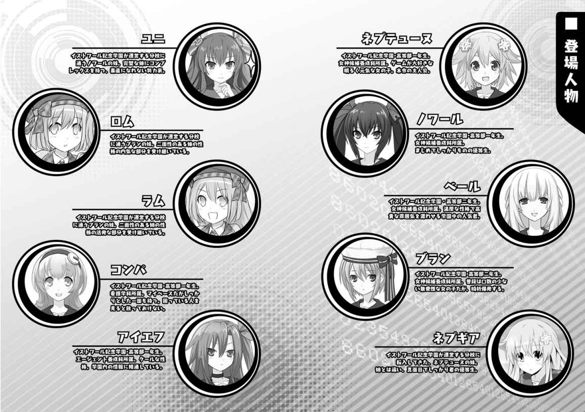
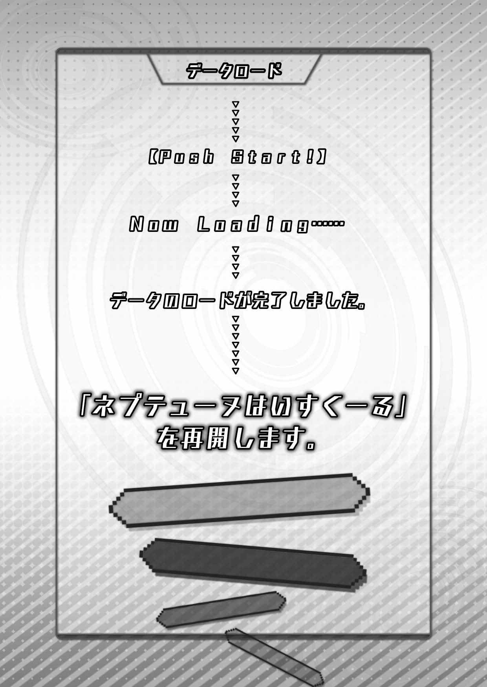

不動の主人公、降・臨！
こんにちは！ ゲイムギョウ界の津々 浦々 、皆様に愛されるパーフェクトな主人公ネプテューヌでっす。
早速だけど、私の可愛いネプギアが超頑張っちゃった前回のおさらいを......。
え？ なにネプギア？ カンペいるかって？ あー、いらないいらない。わたし、慣れてるから。まぁネプギアはそこで巨大戦艦に乗った気持ちで見ててくれたらいいよ！
ＯＫ？ じゃあもうＶＴＲ行くよ。今回も色々あって、ちょっと巻きで行かないとなんだからねー。巻きで！ はい、スタート！
「ねぷねぷも、ギアちゃんも、めっですよ。めっ」
「い、いやー、こんぱ。これにはね、海よりも深ーく、全部ドッキングさせたあのハードよりも高ーい事情というやつがあってね」
「余計なこと言わないで謝っちゃった方が身のためよ」
「だ、黙って二人だけで天界に帰ろうとしてすみませんでした」
「わ、悪気はなかったんだってば！ 本当だよ。みんなに迷惑かけたくなかったからさ。だから、許して！」
みんなの協力で記憶を取り戻し、マジック・カンパニーの人たちも元に戻って一安心......のはずが、ついでに天界で起こった大事件のことも思い出したわたし。
さすがにこれ以上は迷惑かけられないし、天界のことはわたしとネプギアで何とかしなきゃと思って二人だけで帰ろうとしたのが、裏目も裏目。逆に「水くさい」って怒られちゃった。
結局、またみんなで力を合わせて天界の......ううん、世界のピンチを救うことになったんだけど、そこに思いがけない協力者が。
それは、マジック・カンパニーのマジック・ザ・ハードとジャッジ・ザ・ハード。なななんと、二人とも元々はマジェコンヌ先生の教え子だったの。
マジックとジャッジはマジェコンヌ先生に頼まれて、これまたびっくりなことに天界にいるいーすんと交信するシステムを作ってくれていたんだ。
「それじゃあ、ここしばらく続いている異常気象は、すべてその天界にある地上管理システムの異常が原因だったということですか？」
『そのとおりです。地上の皆さんには多大なご迷惑をおかけしてしまっており、本当に申し訳ありません』
いーすんの口から語られる、天界のまずーい状況。このままだと異常気象はどんどん増えていって地上は大変なことになっちゃう。
これを何とかするには異世界のわたしこと、女神パープルハートから預かった剣をシステムの再起動キーとして使えるようにして、システムを強制的に再起動するしかない！
お恥ずかしいことに、前にネプギアと二人だけで頑張ってみた時には失敗しちゃって、それでわたしってば地上に落っこちて記憶喪失になっちゃったんだよねー。いやはや、参った参った。
で、まずは剣に入力する地上世界のデータを集めようっていうことになり、ネプギアが前にお世話になった島の分校へ飛ぶことになったの！
え？ わたしは何もしないのか？ ......そんなわけないでしょ！ 可愛い妹だけに苦労はさせられないよ。させられないんだけど......イストワール記念学園の学生である以上は、期末テストをまずクリアしてもらうってマジェコンヌ先生が......。
えー。そこはちょっと融通利かせてくれてもいいんじゃない？
さてさて、ここからはネプギアにバトンタッチした方が......え？ なに？ 私は一回でもう十分です？ お姉ちゃんがうまくまとめてください？
そう？ いいのほんとに？ んもう、しょうがないなぁ照れ屋さん。じゃ、可愛い可愛い妹のたっての頼みだし、わたしがかいつまんで説明しちゃうよ？
えーっとね、ネプギアはノワールの妹のユニちゃんや、ブランの妹のロムちゃんラムちゃんと協力して、でっかいイカと格闘したり、火山の噴火から島の人たちを助けたりしながら頑張ってデータを集めたんだって。うん、オッケー☆。
......ダメ？ えーなんで。だってわたし、そういう話しかまだ聞いてないんだもん。
ＶＴＲがある？ わ、わかった。わかったってば。ちゃんとコメントするから、ＶＴＲ出して。
「その意気だよ！ ユニちゃん、ガッツ！」
「そんなに期待されたら......頑張らないわけにはいかないでしょ！」
『うおおおっ！ 俺の生徒に手を出すことは許さああああんっ！ 燃えよ我が剣、ブレイブソオオオドッ！』
ジャキン！
ズシャー！
ニュルニュルニュル！
ばちこんばちこん！
ずびしゅばどばばばばー！
な、な、何コレー!? でっかいイカが出て大変だったとは聞いてたけど、まさかこんなことになってたなんて。
これじゃ、『海の裂け目から大怪獣出現！』って、大スペクタクル映画の勢いだよ！
あ、撃退した！ たった今、巨大イカをブレイブ先生が撃退しました！ すごいです。強いです！ ......うわー、ネプギアたちこんな大変な目に遭ってたんだね。
この調子だと、噴火がどうこうっていうのもわたしの想像以上に大変なことになってる予感が。
『すぐに船の手配を頼みます。できるだけ船足が速く、かつ大量に人が乗れるやつです』
「全島避難......ってことよね」
「ユニちゃんは、逃げるのは嫌？」
「嫌に決まってるでしょ！」
『山の北側に穴を開けて溶岩を逃がすだと？』
「確かに船で脱出すれば誰も死なないわ。でも、アタシ気付いたの。たとえ無事に逃げたって、帰ってくる場所がなかったら意味ないって！」
「私のＭ．Ｐ．Ｂ．Ｌ とユニちゃんのＸ．Ｍ．Ｂ 、両方のフルパワー射撃のタイミングをぴったり合わせて同じ位置に着弾させれば......」
うう、ネプギアもユニちゃんも良い子だね。
島の人たちが無事に逃げても、町が溶岩に飲み込まれちゃったらみんな悲しむに違いない。みんなが島に戻ってきた時、すぐに普通の生活に戻れるように、命がけで溶岩の流れを変えようだなんて......思いついたってなかなか実行できないよ。すごい勇気だよ。さすが、わたしの妹！
心配するブレイブ先生を説得して、作戦を開始したネプギアたち。これから、どうなっちゃうの!?
「Ｍ．Ｐ．Ｂ．Ｌ 、オーバードライブ！ リミッター解除！」
「Ｘ．Ｍ．Ｂ フルパワー！ モード・エンプレス！」
ありったけの力を振り絞るネプギアとユニちゃん。でも、相手は何百万年もかけて大きくなった巨大火山。そうそう狙いどおりにはいかなくて、二人とも大苦戦。
もうだめだー！ 間に合わない！ 諦めかけたその時、
「...ユニちゃん、ネプギアちゃん、あきらめちゃだめ！」
「そーよ！ もうちょっとなんでしょ！ がんばりなさいよ！」
噴火のせいで発生した山火事を食い止めた、ロムちゃんとラムちゃんが合流。
これぞ、燃える友情です！ 深い絆です！ 輝く勝利のフラグが今、立ったー！
最後は、四人全員で力を合わせた合体攻撃が分厚い火山の岩盤を粉砕！ 溶岩の流れを変えて、見事に島の危機を救いましたー！ わー、ぱちぱちぱち！
ネプギアたち、みんな凄いスゴい！
わたしたちの見てないところで、全員が一回りも二回りも大きく成長して、立派なことを成し遂げて......うう、感動の涙でモニターがぼやけちゃう。
「......本番は、これからなんだよね。今頃は、お姉ちゃんたちも自分たちの分のデータは全部集め終わって、学園に戻ってるかもしれないね」
無事に島を守り切り、お祭りを眺めながらぽつりと言うネプギア。
あー、そんな風に期待してくれてたんだ。
そうだよねー。妹たちにこれだけ大活躍されちゃったら、姉としては負けていられないって言うか、ご期待には応えてあげなきゃとは思うよ。
思うんだけどさ。世の中、そう何でもうまく行かないって言うか......こっちにも色々と事情があってと言うか......まぁその、えーっと......。
と、とにかく！ 続きはこの後の本編で！
「つ、追試～っ!? 」
プラネテューヌ寮の一階にあるラウンジ。そこで、目をまん丸に見開いて大きな声を出したのはネプギア。
向かい合っていたわたしはと言えば、まぁ目の丸さはネプギアといい勝負だと思うんだけど、自分でも明らかに焦点合ってないなーってわかる感じで、
「......そ、そういうことみたい」
輪郭がぼんやり二重に見えるネプギアに、力なく答えた。
「ということは、まだデータ集めには......」
はい、行ってません。
ネプギアに続いて、恐る恐る聞いてきたユニちゃんの顔も割とボケボケな感じ。そのまま、がくーんとわたしがうなだれると、何ともビミョーな空気がその場に漂った。
「ユニたちの活躍ぶりを聞かされた後だけに......は、恥ずかしいわ。どうして私までネプテューヌのせいでこんな恥をかかされなきゃいけないのよ！」
私の隣に座っていたノワールが、一気飲みしたアイスコーヒーのグラスを乱暴にテーブルに置いてから、ぐったりした声を出す。その後、ばりぼりごりと氷を噛み砕く音が、静まりかえったラウンジにやけに大きく響いた。
「ま、まさかお姉ちゃんまで追試なんてことには......」
わたしに声をかけた時より、もっと恐る恐る度を増して、ユニちゃんがノワールの顔をのぞき込む。
「そんなわけないじゃない！ 一から十までぜーんぶネプテューヌひとりのせいよ！ まったく信じられないわ。学科別の教科を除いた基礎教養全部で赤点とか、どういうおつむの中身をしてるのかしら、この子は！」
ばりぼりごっくんと氷も飲み込んだノワールが、きーっと嫌な感じでテンションを上げて、わたしの頭にゲンコツをぐりぐりぐり。
「痛い、痛い！ わ、わたしだって赤点取りたくて取ってるわけじゃないってば。だ、大体さ、数学とか別にできなくても生きてくのに困らないし。お買い物する時にお金の計算だけできれば大丈夫だと思わない？」
「出た、勉強したくないだけの子の常套句！ 何でもそうやって自分に都合良く決めつけてサボろうっていう考え方だからこういうことになるのよ！ 現に今、他の人も巻き込んでものすごーく困ったことになってるじゃないの！」
ぐりぐりぐりぐりぃっ！
「わーん、ごめんなさい！ ギブ！ ギブだってば！」
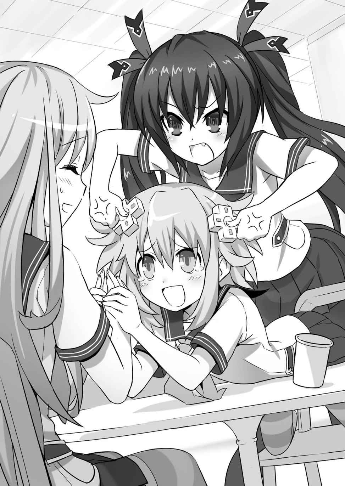
ノワールのぐりぐり攻撃にたまらずわたしがギブアップすると、
「ま、まぁまぁノワールさん。お姉ちゃんも反省しているみたいですし、その辺で」
慌ててネプギアが割って入ってくれた。ネプギアだけは、どんな時でもわたしの味方だもんね。ネプギア大好き！
「ネプギア、あなたがネプテューヌのことを好きなのはわかるわ。でもね、前にも言ったかもしれないけど、時には厳しくするのも大事なことよ」
「あう......。それは確かにそうですけど......」
あーこらノワール！ 余計なこと言わないでいいってば。
ネプギアもあっさり説得されちゃわないで。
「とにかく！」
それでも、ネプギアが目をウルウルさせながらかばってくれたのはそこそこ効いたみたいで、ノワールがわたしの頭からゲンコツを放した。
「これ以上、私は姉として妹の前で恥をさらすのはゴメンよ。ネプテューヌだってそうでしょう？ 立派にやり遂げたネプギアの前で、負けずに良いところを見せたいでしょう？」
体の向きを変えて、じっとわたしの目を見て言う。
「そ、そりゃあ......まぁ......ねぇ」
ネプギアもユニちゃんも......今ここにはいないけど、ロムちゃんもラムちゃんも、めちゃめちゃ頑張ってデータ集めもして、ついでに島の大ピンチまで救っちゃったっていうのは確かみたい。ノワールの言うとおり、姉としては負けてらんないかも。
「だったら、少しの間おちゃらけは封印することね。三日後の追試まで、きちんと真面目に補習も受ける。いいわね？ こ、ここで見捨てるのも薄情だし、と、と、友達のよしみで私も付き合ってあげるから」
「わたしもお手伝いするよ、お姉ちゃん。夜もお勉強したりするんでしょ？ わたしが、お夜食作ってあげる。大丈夫、お姉ちゃんならできるよ。一緒に頑張ろう」
そ、そこまで言われちゃうとさすがにわたしもサボれないなぁ。
お勉強は本っ当にニガテで、こんぱのためにってほとんど勢いで入学しちゃってから、この一年ずーっと苦労しっぱなしなんだけど、さすがにそうも言ってられないよね。
「......わかった。なーに、わたしが本気を出したら追試や補習のひとつやふたつ、ちょちょいのちょいだよ！」
自分で自分を励ますように言って、わたしはポンと胸を叩いた。
「そんな調子の良いこと言って、知らないわよ。言っておくけど、私が付き合う以上は情けも容赦も何もかも捨ててビッシビシ行くから、覚悟しておきなさい」
腕を組んでふんぞり返ったノワールが、鼻息荒くわたしに言い渡す。
と、ノワールに質問してからは、じっと黙って自分の前に置かれたジュースを飲んでいたユニちゃんが、最後の一滴をずずっとストローで吸い込んでから言った。
「......お姉ちゃん、やっぱりちょっと最近変わったよね」
あんまりポツリと言うものだから、わたしなんかはうっかり聞き逃しちゃうところだったんだけど、
「な、何よ急に。私のどこが変わったって言うのよ」
ノワールの方は、そんなユニちゃんの物言いに何か思うところがあるみたいで、わたしから目を離して聞き返した。
「どこがって......。この間こっちに来た時も思ったんだけど、前のお姉ちゃんだったら、『そんなの自業自得。私には関係ないわよ～』みたいな感じで、あんまり人のことなんか気にしなかったって言うか......自分が第一って言うか......」
気付いてないの？ とでも言いたげに、ユニちゃんがきょとんとした顔で答えた。
次の瞬間、どういうわけかノワールの顔が一気に真っ赤になって、
「な、な、何を言い出すのよこの子は！ わ、私は別にそんな......。そ、そうよ！ 別にネプテューヌがどうなろうと、私にとっては関係ないんだから！」
ムキになって首を振る。
「でも、ネプテューヌさんの補習を手伝ってあげるんでしょ？」
「そ、それはネプテューヌがどうこうって話じゃなくて......わ、わかるでしょ！」
「わかるって？」
「うっ......も、もういいわよ！ ユニの言うとおり、ネプテューヌが落第しようがどうしようが私の知ったことじゃなかったわ！ 手伝いなんてやめやめ！ そうよ、もうネプテューヌなんか放っておいて、私の力で残りのデータを集めちゃえばそれで終わり......」
わー！ 待って、待って！ それはひどい！
あ、なんかもう「私決めちゃいました」みたいな顔してどっか行こうとしてるし。
ちょっとノワール！ ノワールってば！ おーい！
んもー、ノワールの方こそよっぽど、「何を言い出すのよこの子は！」じゃないの。この辺、もういいかげんに慣れてサラっと流そうよ。ちょっと聞いてる？ ノワール？ ノワールさーん！
久しぶりにわたしが主人公復帰した途端にこれなんだもん。今回も前途多難の予感！
Ⅰ
某学園内にある寮、その中でも一際広いＶさん（仮名）の自室に、今回の件を憂える皆さんに集まってもらった。
「本当にここまでできない子だとは思わなかったわ」
そう語るのは、学園内でも事情通として知られるＩさん（仮名）だ。眉間にしわを寄せて何度もため息をつくところに、
「彼女は、何と言ったらよろしいでしょうか......とってもユニークな頭の持ち主ですから」
「...頭の中身もそうだけど、計画性の無さが信じられないレベル」
今回の会場を快く提供してくれたＶさん（仮名）と、参加者のひとりであるＢさん（仮名）も口を揃える。
しかし、一番今回の件で物申したいと考えているのは、Ｎさん（仮名）かもしれない。
Ｉさん同様に端正な顔を辛そうに歪めて言う。
「何が一番問題かって、事態の深刻さをまるで真剣に考えてないことなのよね。それで、根拠もなしでなんとかなるなんて本気で考えてるんだから......頭が痛いわ」
皆、表現の差こそあれ問題に対する捉え方は同じようで、世界の存亡すらかかっていると言っても過言ではない状況での軽率な行為に対して苦言を隠そうとはしなかった。唯一、
「そんなこと言わないで協力してあげるです。今日だって一生懸命頑張ってたですよ。友達なら、最後まで応援してあげるです」
問題の学生とは学園に入学する前からの付き合いだというＣさん（仮名）だけは、擁護する声を上げたが、果たしてその切なる願いが報われる日が来るのだろうか......。
......思わず、駅とかコンビニで売ってるスポーツ新聞の記事みたいになっちゃったけど、実際もう本当にそんな感じで、新聞に書かれてる難しいニュース並みに遠いところで何か言われているような気持ちで、わたしはみんなの声を聞いていた。
なぜなら、今わたしの頭の中では難しい数式やら、むりやりな語呂合わせで覚えさせようとする年号なんかがぐーるぐる。それを何とかかんとか、脳みその細胞に記憶させようとしてるもんだから、とてもだけどちゃんとみんなの声を聞く余裕ないんだな、これが。
「も、もう無理。ハードディスク満杯。もう何にも入らないよ」
開いたままの参考書に突っ伏したわたしが、蚊の鳴くような声でつぶやくと、
「何を甘ったれたこと言ってるの。まだ課題の半分ぐらいしか終わってないわよ」
「...いらないデータを削除すればまだ大丈夫」
左右からわたしの肩をがっしとつかんだＮさんとＢさん......じゃない、ノワールとブランが情け容赦のない言葉をぶっつけてくる。痛い。ハートが痛いなー。
「いらないデータなんて無いよぅ。みーんなかけがえのない思い出だよぉ」
そう訴えてみても、
「...過去を振り返るより、未来を生きるべきよ」
とか、間髪入れずにすぱーんと返されちゃって、いよいよ涙目。
「せ、せめてちょっと休憩を......お願いします......おやつを......」
その涙目でわたしを取り囲む顔を見渡して、更に訴える。
「しょうがないわね。あと一〇問解いたらチョコひとかけ。二〇問でポテチを許可してあげてもいいわ」
あいちゃんのお答えは、非情だった。けど、絶望しかけたわたしの前に一筋の光が。
「......でも、気分転換は必要かもしれませんわね」
「ベ、ベールぅ......いや、ベール先輩！ ベールお姉様！」
どこのラスボスかって感じでわたしを見下ろすあいちゃんを取りなし、正真正銘女神の微笑みを浮かべたベールが、手元のリモコンをポチッと操作した。
おお？ これはあれかな？ ベールの部屋らしくボタンひとつで『ステキなショートケーキ』略してＳＳとか、『ダイナミックなクレープ』略してＤＣとかがデリバリーされちゃう流れかな!?
お先真っ暗なゼツボー的状況から一転、期待に胸を膨らませるわたし。
と、それまでいかにも「勉強第一！」「贅沢は敵だ！」みたいな殺風景さだった室内が、一気にその姿を変えた。
ずいぶん前にバーチャル空間を作り出せるように改装しちゃった（体感ゲームを遊ぶためっていうのが凄い）お部屋の機能フル活用で、緑鮮やかな森ときれいなお花畑、ついでにキラキラと青く輝く湖までお部屋の中に現れた。
まったくベールさんは最高だね。おいしいおやつを食べるには、食べる環境も重要っていうことがよーくわかっていらっしゃる！
「いかがですか、ねぷねぷ。これで少しは気分も晴れまして？」
「完璧だよ！ 言うこと無し！」
「それは良かったですわ。では、気分も一新したことですし」
にっこり笑って、ベールはまたリモコンをポチッ。さあ来るよ、ＳＳ！ もしくはＤＣ！
わくわくが止まらないわたしの前で、壁に映し出された青い泉が更にキラキラと輝きを増していく。やがて、目を開けているのもきついようなまばゆさが部屋を包み込み、次の瞬間、波紋が広がる水面に、羽衣みたいな衣装を着た美しいお姉さんのＣＧが現れた。
『私は泉の妖精です。ネプテューヌさん、あなたがお望みなのは......』
そのＣＧお姉さんが、わたしに向かって囁くように言う。
お望みなのは......スイーツ！ それにしてもベールってば、おやつのオーダー取るだけでいくらなんでも演出凝り過ぎじゃない？ や、個人的にはこういう楽しいのは大歓迎だけど。
『あなたがお望みなのは、こちらの......』
一体どんな豪華スイーツが出てきちゃうんだろう。わたしは、椅子から腰を浮かせて身を乗り出した。
『......古典問題集ですか？』
「は？」
『それとも、計算一〇〇問ドリルですか？』
この時にネプテューヌが感じた気持ちを、百四十文字以内で述べよ（五点）。
......って、述べられるわけないでしょーが！
な、なんという......ここまでピュアで哀れで切ない乙女心に期待感を抱かせておいて、なんという仕打ち!!
わたしは言葉を失ってズルズルと力なく崩れた。
「少しでもねぷねぷに楽しくお勉強していただこうと思いまして、わたくし一生懸命演出を考えましたのよ」
「ベールさん凄いです。これだったら、お勉強もゲーム感覚でできるです。良かったですね、ねぷねぷ！」
良くない！ 全っ然良くなーい！
そんな見せかけのお得感を前面に押し出されたって、騙されないんだからね。
ゲーム感覚だろうがなんだろうが、勉強は勉強じゃないさ。......自業自得？ わ、わかってるよ、そんなこと。でもさ、ちょっとぐらいはさ、労りの心というかそーいうものを求めたってバチは当たらないんじゃないかなー。
「......いやー、ずいぶん引っ張るからどこでオチるのかと思って見てたけど、想像以上にベタと言うか。ベタだけにえげつないと言うか。ベールもやってくれるわね」
「そんな冷静に分析してないで、あいちゃんも少しは同情してってば」
「かわいそうに。ご愁傷様（棒）」
「うわ、全然感情こもってないし」
「私も今回は実技に助けられたところ多いから、こーいう悲惨な目に遭わないように、次は学科ももう少し力入れなきゃ」
「反省材料にされてるし」
あーもー！ わかった、わかりましたよーだ。こうなったら、やってやろうじゃないの。ケーキに手は届かないにしても、二〇問でポテチって約束はきっちり守ってもらうんだからね。ゆーっくり食べて、何が何でも休憩時間を勝ち取ってみせるよ！
そのためには、作戦も重要だよね。さっきまでは歴史と数学だったから、ここで続けて計算問題なんかやらされたらたまらないよ。ベールも言ってたけど、気分を変えるっていうのは重要だから、選ぶべきは古典！ 決まり！
「じゃあ、古典で！」
『......それでは、計算一〇〇問ドリル、スタートです！』
「ちょっとー！」
わたし、そっち選んでないってば。ベールさん、どうなってんのこれは!?
「時間切れですわ、ねぷねぷ。制限時間内に選ばないと、自動的にどちらかがランダムで選択されるようにプログラムされてますの。ですから、決断力も重要ですわよ」
は、早く言ってよそういう大事なことは！
「うんうん、ベタをやるならどこまでもよね。その辺の呼吸って言うか、空気の読み方みたいなのは結構尊敬できるわよ、ネプ子」
だ、ダメだこの子たち......早く何とかしないと......。
てゆーか、みんなに付き合ってもらうっていう発想が最初から間違いだったのかも。考えてみれば、初めてあいちゃんやノワールに会った時も、わたしの記憶を取り戻そうって話になった時も似たような展開だった気がする。
『それでは早速第一問』
馬鹿バカ、わたしの馬鹿。なぜ人は同じ過ちを繰り返すのか！
ＣＧお姉さんの虚ろな声が響く中、わたしは悲しすぎる自分の運命を呪い続けていた。
......ぐすん、もうどうにでもして。わたしのライフはとっくにゼロだよ。
Ⅱ
地獄。
そう、まさしく地獄の三日間がこうして過ぎていった。
普段は楽しく学校通えてればいいやーって感じだったんだけど、「あ、学生って割と大変だな」と思った三日間だったね。
わたし程じゃないにしても、こうして毎回苦労している世の中の他の学生さんたちには、せめてフリフリの可愛いアイドル衣装で応援歌のひとつも歌ってあげたくなる。
まぁでも、初日でどん底まで突き落とされちゃったのが逆に良かったのか、大変は大変なりに開き直ったおかげで無事に乗り切れたっていうのはあるかな。
補習＆自習の時は、担当の先生やみんなのことを鬼だ悪魔だ散々言っちゃったような気がするけど（途中で三回ぐらいブランをブチギレモードにしちゃって大変だったけど）、こうして振り返ってみればよくもこんなわたしに根気よく付き合ってくれたなーと思うよ。うん。
だから、
「......まぁ、状況が状況だ。多少は大目に見て、良しとしようか」
わざわざ学長室で追試を受けさせた後、提出したわたしの答案を自分で採点したマジェコンヌ先生がそう言ってくれた時は、我ながら達成感あったね。
「良かったですね、ねぷねぷ」
「ありがとーこんぱ。......それにみんなも。いやー、お手数お掛けしまして申し訳ない」
めでたく合格のお墨付きをもらったわたしは、同じく学長室に集められたみんなに向かってぺこりと一礼。
「次はもう本当に付き合ってあげないんだからね！」
まぁまぁ、ノワちゃん。そんなこと言わずに。
「...おかげでわたしまで寝不足だわ」
ブランにも、お世話になりました。
「いつもそうやって殊勝なら世話なくていいんだけど」
とか何とか言いながら、あいちゃんもわたしのこと放っておけないくせにぃ。
「とにかく、これで問題はクリアですわね」
うんうん。演出はベタかつえげつないけど、ベールがゲーム感覚でお勉強させてくれたおかげでもあるよ！
終わってみればなんとやら。頭を上げたわたしに注がれるみんなの視線は、どれも優しいものだった。いつも言ってるけど、いいよね友情。
なんて、しみじみしていると、
「お前たち、和んでいるヒマは無いぞ。誰かさんのおかげで、こっちのスケジュールは大幅に狂ってるんだ。出発の準備はできてるんだろうね」
コーン、と長い爪でデスクを叩いて注意を引いたマジェコンヌ先生が、ひとり厳しい目つきのままで言った。
「あ、はい。大丈夫です」
全員、びくんと背筋を伸ばしてマジェコンヌ先生の方を見たところでノワールが答えた。
「それじゃ、ついといで」
うなずいたマジェコンヌ先生が、デスクに置いてあったＩＤパスみたいなカードを手に立ち上がる。
ついといでって、どこへ？
聞き返す間もなくマジェコンヌ先生はハイヒールの音も高らかに、さっさと学長室を出て行ってしまうので、わたしたちは急いで後を追った。
黙って前を行くマジェコンヌ先生は、廊下の突き当たりにあるエレベーターに乗り込んだところで、
「ほら、さっさと来な」
ようやくわたしたちの方を振り返ると、人差し指だけを動かしてちょっとめんどくさそうにわたしたちを呼ぶ。
なーんかピリピリした空気なのは、やっぱりわたしのせいでスケジュール遅れちゃってるから？ それとも他に理由が？
たまたま隣にいたあいちゃんに目で訴えてみると、あいちゃんも「さあ」と言う感じで肩をすくめる。
ここでぼけっと突っ立ってるわけにもいかないので、わたしたちも小走りになってエレベーターに乗り込んだ。
そこでマジェコンヌ先生は謎の行動に出る。行き先の階が書いてあるエレベーターのボタン─ あれね、見たことあるでしょ？ 行きたい階のボタンを押すとランプが点いてぺかっと光るやつね─ を、あちこちデタラメに押し始めたの。
するとびっくり、ボタンのランプが全部いっぺんに点灯したかと思うとすぐ消えて、その後にエレベーターが動き出した。どうやら、下に向かっているみたい。
「......暗証番号ってことですか？」
いち早くデタラメボタン押しの意味に気付いたあいちゃんが、マジェコンヌ先生に聞く。
「そうだ。この番号は、学園の職員でも限られた者しか知らない。その上、ボタンが指紋センサーにもなっていて、登録された指紋でなければ暗証番号を入力しても無駄だ。......エージェント科きっての優等生でもこのセキュリティーを破るのは難しいぞ」
聞かれたマジェコンヌ先生は、ふっと唇の端っこだけで笑ってから答えた。
その言い方にちょっとだけカチンと来たっぽく、
「まぁ、いくつか手段は思いつきますけど......黙っておくことにします」
本当なのかハッタリなのか、トレードマークの双葉リボンをちょっと直すような仕草をしながらあいちゃんは返した。基本的に、負けず嫌いなんだよね。負けず嫌いなのは、あいちゃんに限った話じゃないけどさ。
なんてやり取りをしてる間にも、エレベーターはぐんぐん下降を続けている。
それにしても......、
「ずいぶんと下まで行きますわね。もうとっくに、一階は通り越しているように思いますけれど」
わたしの思ったことをそのまま口にしてくれたベールの言うとおり、やけにエレベーターに乗ってる時間が長い気がする。
地下深くに潜ってるんだろうなーというのは誰でも想像つくけれど、一体全体この先に何が待ち構えているのやら。
チン、と音を立ててエレベーターが止まった。扉が開くと、天井も床も壁も、全部冷たい金属でできている短い通路がまずあって、その先にこれまた金属製の重くて頑丈そうなドアが見える。
薄紫色のぼんやりした明かりに照らされた、その通路と扉の向こうに、マジェコンヌ先生はわたしたちを連れて行きたいみたい。
マジェコンヌ先生が、扉の横に備え付けてあったカードリーダーに、デスクから持って来たあのカードをサッと通すと、ブシューッという空気が抜けるみたいな音とともに扉が左右に開いた。
同時に、扉の向こうから明るい光が漏れてきてわたしたちの目をさす。
「ねぷっ！ まぶしっ！」
急なことだったから、わたしは思わず目をしぱしぱ。やがて、まぶしさに慣れてきたわたしの目に飛び込んできた物。果たして、その光景とは！
「な、何コレ!? 」
じゃんじゃんじゃーん♪ と勝手に頭の中で鳴り響く、期待を煽るＢＧＭとともにわたしは思わず叫んでいた。
「ひこーき......ですか？」
そう。ぽかーんとした声でこんぱが言うように、そこには一機の飛行機がデーンと置かれていたんだ。
学園の体育館か講堂......や、もっと広いかな。とにかく、エレベーターで地下（多分ね）に下りていった先のだだっ広い空間に、飛行機が一機。デーン。
それも、良く空港で見るようなジェット旅客機とかプロペラ機とかそーいうんじゃなくて、もっとこうメカメカでガッキンガッキンな、名前の頭に「超時空」とか......いや、ここはやっぱり「超次元」とかかな？ くっついちゃいそうな、
「...飛行機と言うか、戦闘機？」
そう、それだよブラン。戦闘機。
ほとんど黒に近いような濃い紫色のボディーは、シューティングゲームに出てくる超高性能戦闘機そのもの。
「それにしては大きすぎないかしら？ 普通、戦闘機って一人乗りじゃないの？」
その大きな機体を見上げたノワールが言った。
「中に何人か住めそうな大きさですわ。......実際、カプセルホテルみたいな部屋が用意されてたりして」
と、ベール。
「あ、それわたしも思った。あとはあれだよね、トイレで元の種族に戻れたり」
「最初はエンジンの出力が足りないから山を越えられなくて苦労するんですわよね」
「パワーアップするとバトルをサポートしてくれたりね。......てか、ベールも語るねぇ」
「ゲームの知識では負けませんわ」
そんなベールのオタトークにわたしも乗っかって、きゃっきゃと勝手なことを言い合っていると、
「学園秘蔵の高速ＶＴＯＬ（垂直離着陸機）だ。こいつをお前たちに貸してやる。この機体ならジャングルだろうが、凍土だろうがどこでもひとっ飛びできる。......アイエフ、お前にこれを預けておこう」
驚いたり浮かれたりしているわたしたちの輪にまざることもなく、ひとりシリアスな顔を崩さないマジェコンヌ先生が、スーツのポケットから取り出した、また別のカードみたいなものを投げた。
名指しされたあいちゃんもパッと反応して空中でしっかりキャッチ。
「......マジェコンヌ先生、これは？」
「この機体の起動キーと電子マニュアルだ。カード右上の丸い印を指で押してみろ」
「丸い印......これね」
言われるままカードに指を乗せるあいちゃん。わたしも含めてみんなも「なんだなんだ」とあいちゃんの周囲に集まってくる。
すると、カードの上にふわっと立体映像で本の形をしたものが浮かび上がってきて、あいちゃんはそれを、
「こうかしら」
と、スマホの画面を指でなぞるような感じでシュルン。操作方法はそれで合ってたみたいで、ページがめくれるアニメーションの後にズラズラズラッと文字が現れた。
「あいちゃん、なんて書いてあるの？ 早く読んで。早く、早く！」
「あーもう、うっさいわね。ちょっと待ってなさい。......えーなになに、
『これはファイナルハード号、別名ハード・......』
ん？ なんかここだけ文字化けしてて読めないわね。まぁいいわ、
『ファイナルハード号の取り扱いマニュアルです。このマニュアルを参考に、正しい用法を守ってご使用ください。目次、１．ご使用の前に』
な、何か戦闘機のマニュアルって言うより風邪薬の説明書みたいね......」
ファイナルハード号！
この戦闘機、ファイナルハード号っていう名前なんだ。おー、形もだけど名前もこう、色んな気持ちをくすぐってくるじゃない。
「この辺はちょっと飛ばしてっと......。
『操縦には〝ダブルスティック〟を使います。スティックを二本同時に前へ倒すと前進します。左右に開くように操作すると機体が上昇、中央に閉じるように操作すると下降します。また、スティック上面のダッシュボタンを押しながら......』
......って、ゲームか！ 何よこのダッシュボタンってのは。飛行機は普通ダッシュしないでしょうが！」
途中でガクっとずっこけながらツッコんだあいちゃんが、マニュアルから顔を上げてマジェコンヌ先生を見た。
「と、とにかく、私にこのファイナルハード号を操縦して、ネプ子たちを運べってことですか？」
「そうだ」
「......どうして私に？」
「単なる役割分担だ。実際に女神化して調査を行う四人以外に任せるとしたら、お前しかいない。まさかネプテューヌに操縦させるわけにはいかないしな」
「それはそうですね」
サラッと傷つくことを言うマジェコンヌ先生と、特に否定もせずにうなずくあいちゃん。
うん、どっちもひどい。
「わかりました。では、私が責任を持ってお預かりします。ちなみに、単純な興味本位ですけど、何でこんな物が学園の地下にあるのか聞いてもいいですか？」
一度電子マニュアルを消して、カードを顔の前に掲げるようにしたあいちゃんが、上目遣いにマジェコンヌ先生を見た。
「別に隠すつもりもないが、悠長 にそんな話を聞いている時間があるか？ 今日から終業式までの間、授業は無いが......チンタラしてると春休みを削ってもらうことになるよ」
あいちゃんの質問に、またしてもサラッととんでもない返答をするマジェコンヌ先生。
じ、冗談じゃないよ。あいちゃんの好奇心でわたしの春休みが削られちゃったらたまらない。ただでさえ補習に追試でヘロヘロなわたしに必要なのは、穏やかな休息！
休息大事。絶対死守！
「はい、あいちゃんそこまで！」
わたしは、背後からがばーっと腕を伸ばしてあいちゃんの口を塞いだ。
「ふごっ!? 」
「そういうお話は後でゆっくりね！ 今は一刻を争う事態なんだってば」
「それをアンタが言うか！」
わたしの手を振り払ってあいちゃんが叫ぶ。
気持ちはわかる。気持ちはわかるけど、
「春休みは、一度田舎のお家に帰ってご近所さんにごあいさつしようと思ってたです。だから、少なくなっちゃうのは困っちゃうです」
「...わたしも夏のイベントに向けて今から小説の原稿を書かないと」
「どのネトゲも、大体春は新入学・新生活キャンペーンが目白押しですの。家を一歩も出ない覚悟でＰＣに向かわないと、とても全部は楽しめませんわ」
ほら、わたしだけじゃなくて皆さんもこのように仰ってますし。
唯一、ノワールだけは、
「......あのねぇ、そういう個人的な事情をどうこう言ってる時じゃないでしょ。事の重大さをわかってるのかしら」
いつもの優等生フェイスでやれやれと首を振ってから、
「お約束はもう十分。さっさと行きましょ。アイエフ、乗り込み口か何かあるんでしょ？ 早く開けてちょうだい」
春休みの予定をあーだこーだ言っているわたしたちのお尻をえいえいとせっついた。
ノワールに言われたあいちゃんも、「同感」とひと言うなずいてまた電子マニュアルを呼び出す。
「えーと、
『定員は十人です。乗り込む前に機体に破損や傷がないことを良く確認してから、胴体中央下にあるカバーを開けて電源を長押しし......』
......だからゲーム機か！」
Ⅲ
で、到着しました！ 熱帯のジャングル！
ああ、待って待って！ 「ネプテューヌ君、いくらなんでも途中はしょりすぎでしょ」とか、「もうちょっとそれっぽい離陸の演出とかあるでしょ」とか、言いたいことはわかる。わかりますとも。
でも、なかったんだもん。
だってテンション上げて戦闘機に乗り込んだら、中が「都会に出てきた子が初めての一人暮らしで色々奮発して取り揃えちゃいました」って感じの可愛らしいキャビンじゃ、そっち方面の盛り上がり方はどう考えても無理。誰が何を考えてこんな内装にしちゃったのよ一体って感じ。こんぱだけは、すっごいご機嫌だったけど。
ま、何とかそこは持ちこたえたんだけど、問題は出撃シーンだよ。
学園地下の秘密格納庫から出撃って言ったら、ワンダバワンダバした燃えるＢＧＭに乗せて滝の裏から出撃するとか、高層ビルに偽装した発進ゲートからガーッと飛び出すとか色々あるでしょうに、そういうのも一切なし！
格納庫の天井が開いて、ファイナルハード号を乗せたエレベーターがゆっくり上がっていくわけじゃない？ わたしは、もうワクワクドキドキで期待してるわけじゃない？ 滝かな？ それともビルかな？ 岩山なんかもいいなって。
......そしたら、牧場だからね、牧場。まさかすぎる展開だよ。
農業畜産科のみんなが管理してるだだっ広い牧場にご到着で、羊さんがメーで牛さんがモーでどっちもボンヤリした目でいきなり現れた飛行機を見上げているんじゃ盛り上がりも何もあったもんじゃないってば。
「...なるほど、これは合理的だわ。ここなら広さも十分だし、発進の騒音で他の生徒に迷惑かけることもないし」
冷静にそう言って、ポンと手を打ったブランですら、
「...でも、ちょっと物足りない気分ね」
って続けてたし。わたしに言わせれば、ちょっとなんてもんじゃないけどさ。
内心では絶対わたしよりも気合い入ってたはずのあいちゃんも、完全に肩すかし食っちゃった感じで、
「えーと......出発するけどいいかしら？ シートベルトした？」
とか、締まりのないセリフでちょっと見てらんないって言うか。
発進した後の道中も平穏そのもの。物凄い雷雲に突入したら、空に浮かぶお城の姿がチラッとかそーいうドラマチックな展開も一切なし。
だからもういいの。はいやめやめ、この話はおしまい。
重要なイベントはね、ここからだよ。ここから！
未開のジャングルで密かに息づく珍獣を激写して世紀の大スクープになるとか、出撃のションボリ感を一発で帳消しにする、そういう逆転ホームランを期待したい！
......けど、どうにも今日は日が悪いというか何と言うか......一度プランが崩れると中々持ち直せないんだなーと言うか......。
「動物さん、いないですね」
ジャングルの中にあるちょっと開けた場所にファイナルハード号を着陸させて、いざ探検の第一歩を踏み出した！ は、いいんだけど、こんぱの言うとおり何だか辺りはシーンと静まりかえっていて生き物の気配を感じない。
「あっれー？ おっかしいなぁ。わたしのイメージだと、『あ、あれは！ 伝説に語られる珍獣ゲハーゴン！ よし、捕獲するよ！ うわ！ 危ない！ みんな、隊長のわたしから離れないで！』みたいな展開のはずなんだけど」
どうにもノリきれない状況が続くもんで、わたしのフラストレーションもだいぶ蓄積中。
「そんな世紀の珍獣がそう簡単に姿を現しちゃったら、それこそ拍子抜けじゃない。お馬鹿なこと言ってないで、早速調査を始めましょ」
そんなわたしの気持ちも知らず、ノワールがわたしの頭をコツンとやった。
「えー。だって、ネプギアたちは天然記念物の巨大イカモンスターといきなり戦ってたよ」
つまんなーい。ねっぷっぷー。わたしは口を尖らせる。
「...飛行機の着陸に驚いて逃げちゃったのかも」
「ネプギアちゃんやユニちゃんのお話によれば、データ収集用のセンサーやナノマシンを散布している時に遭遇したらしいですわね。だったら、わたくしたちも同じようにして少し様子を見るのはいかがかしら？」
うーん、わたしとしてはそういう消極策じゃなくて、もっとこうズンズンとジャングルの奥へ奥へっていう方が性に合ってるんだけど......まぁ、ブランの言うことにも一理あるし、ここはベールの勧めに従っておいた方がいいかも。
「でも、それで捕まるかなーゲハーゴン」
「なんなのよ、そのゲハーゴンっていう謎生物は。つまんないこと言ってないで、ネプ子も荷物降ろすの手伝いなさい」
ノワールのコツンに続いて、あいちゃんにもお尻のあたりをペチンとやられ、わたしは「はーい」とお返事をしてからあいちゃんの後に続く。
ファイナルハード号の中には、マジェコンヌ先生が予め指示して積み込んでいた物資が色々ある。ネプギアたちも使ったっていうデータ収集用の機材やら、食料やら。あとは探検用のお着替えとか（さすがに制服でジャングルはうろつけないもんね）。
ただ、どうも気になるのが探検服とか入ってる箱に『演劇部備品』とか書いてあることなんですけど......大丈夫なのこれ？
「うちの演劇部は本物志向だから大丈夫。衣装って言ってもずいぶんしっかりしてるわよ、これ。私が保証するわ」
そう？ まぁ、衣装に関しては目の確かなノワールが言うなら間違いないかな。
じゃあ気を取り直してということで、世界の不思議を発見しに行くクイズ番組のマスコット人形が着てるみたいな、いかにも探検隊！ っていう服装に着替えたところで、いざ珍獣ゲハーゴン捜索......じゃなくて、生態データ収集開始！
「みなさーん、お薬とか包帯とかお手当の道具はいーっぱい持って来てるですから、張り切って行きましょうです！」
頑丈そうなキャリーケースをぽんぽんと叩いて、こんぱが明るく言った。実に頼もしくていいんだけどさ、そのケース、ずっと引っ張って行くつもりなの？ かなり大きいんだけど大丈夫？
しかも、なんかケガするのが前提みたいな言い方になっちゃってるけど、こんぱにはなーんの悪気もないことはわかってるから、ツッコまないであげよ。
とりあえずはネプギアたちの報告にならって、ガサガサとジャングルへ分け入ったところにナノマシン入りの餌を撒いてセンサーを設置して......と。
「さあ来いゲハーゴン！」
「......来ないわよ」
夢のないノワールのツッコミは軽く聞き流して待つこと二時間ぐらい。
まぁゲハーゴンはダメだったとしても、珍しい蛇とかトカゲとか、可愛いお猿さんを観察しつつデータも集められるかなーと期待していたわたしたちだったんだけど、
「ほんとに来ないじゃん！ なんにも！」
待てど暮らせどセンサーはぴくりとも反応しない。
「...虫が何匹かいたみたいだけど、とてもサンプルには足りないわ」
「どうも様子がおかしいですわね。別に動物園のように行けば会えるとまでは期待していませんでしたけれど、小鳥の一羽も出てこないのは気味が悪いですわ」
あれかなー。さっきブランが言ってたとおりで、動物たちみんな飛行機にびっくりして奥の方に逃げちゃったのかも。
そーなると、ここで「待ち」の姿勢じゃいつまで経ってもどうにもならないってこと？ 不安になったわたしの頭にマジェコンヌ先生の言葉が蘇る。
「チンタラしてると春休みを削ってもらうことになるよ」
なるよなるよなるよ......。（エコー演出）
「待ってちゃダメだ！ 攻めよう！」
決意のグーをかざし、わたしは宣言した。
宣言と同時に、でや！ って回れ右してファイナルハード号に駆け戻る。
「あ！ ねぷねぷ、どこ行くですか！」
「待ってて！ 何か他に使える物が積まれてないか探してくる！」
肩で息をしながらファイナルハード号の倉庫に飛び込んで、この停滞ムードを一発逆転できそうな何かがないか、物色物色。
鍋、釜、フライパン......は今はいらない。あ、おやつのチョコはポケットに入れとこ。
他はなんか......これは麻酔弾？ トリモチ？ んー、攻めるって言ってもそういうのはちょっと違うかなー。どうなんだろ。
動物たちに警戒されてるっていう説が正しいなら、警戒させなければいいわけだよね。
カモフラージュ？ 迷彩？ ちょっと違うか。あ、変装？
腕組みしつつ考える。頭の片隅にヒラメキの種みたいなのが生まれたような、そうでもないような......。もうちょっと大きく育て！ と意味もなく頭を前に後ろにぶんぶん振っている時だった。
「あいたっ！」
思わず勢いをつけすぎちゃって、後ろに積んであった箱に後頭部をごちん。
それでバランスが崩れちゃったみたいで、上の方にあった箱が目の前に落っこちてきた。
あ、あぶなぁ......一歩間違えたら、大惨事になっちゃうところだったよ。
ぷひゅーっと胸をなで下ろしてから、とりあえず邪魔にならないようによけておこうと、落ちてきた箱に手を伸ばしたところで気が付いた。
「あれ？ この箱も『演劇部備品』だ」
今着てる探検服も演劇部提供（多分、ね）のヤツだけど、他にも積んであったのかな。
てれれれてれれれ～♪ むくむくと湧き上がる好奇心のまま、緑の服に三角帽子のあの子な気分でゆっくりと蓋を開けると......。
「こ、こ、これだぁっ！」
てってってってー♪
鳴り響く（もちろん脳内で）お宝ゲットのジングルとともに、わたしは思わず叫び声をあげちゃったのだった。
Ⅳ
「ぴょんぴょんぴょん。うさぎさんですよー」
「神々しく輝く極彩色の美しい翼。わたくしは、極楽鳥ですわ」
「音もなく忍び寄る密林のハンター......黒豹参上よ」
おー、いいよいいよ三人とも。ノッてるね。こんぱもベールもノワールも、イメージにバッチリ合ってるよ！
「............」
って、あれ？ ブランは特に何もアピールないの？
「...コアラは、めったに鳴かない動物だから」
あ、ああ。そういう......設定重視的な？ まぁ、それもブランらしいかな。
「そう言うねぷねぷの格好はいったいなんですの？ ドーナツ屋さんのマスコットみたいになってしまっていますけど？」
「ち、違うよ！ 全然違うよ！ 動物と言ったら、百獣の王ライオンでしょ！ 見てわかんないかなー。がおー！」
顔の周りにあるたてがみのパーツを振り振り、きりりっと眉をつり上げてわたしは威嚇の雄叫びを上げた。
「可愛いライオンさんです」
「そこはお世辞でも凛々しいって言ってよね、こんぱ。でもでも、こんぱのうさぎさんもとってもラブリーだよ」
さて、もうお気づきだと思うけど、これこそわたしが倉庫で見つけた一発逆転の秘密兵器、動物着ぐるみ！
多分、演劇部から探検服を借りて積み込む時に間違って他の衣装も一緒に積み込んじゃったんだと思うんだけど、間違いは間違いでもこれはいい間違いだね。誰だか知らないけど、担当者グッジョブ！
動物たちがわたしたちを警戒して出てきてくれないなら、こっちが動物になりきって、「わたしたちは敵じゃないよー。怖がらないで」ってアピールすれば、きっと安心してくれるはず。
ただひとつだけ問題があるとすれば......。
「あいちゃーん。もう諦めて出てきなよー」
他のみんなが自分たちで選んだ着ぐるみをノリ良く披露する中、あいちゃんだけはファイナルハード号の陰に隠れてもじもじしている。
どーもこの手のことになると今イチ思い切りが悪いんだよね。
「あいちゃんってばー」
「し、信じられないわ！ ここは全員でネプ子のアホなプランに総ツッコミするところでしょ。どうして嬉々としてそんな恥ずかしい格好してるのよ！」
「そうかしら？ ネプテューヌにしては冴えたこと言うと思って感心してたんだけど」
「...動物の姿を偽装するのは、わたしも理にかなってると思うわ」
「ほらー、ノワールとブランがオッケー出してる作戦なんだから、そんな心配しなくても大丈夫だってば。わたしを信じて！」
いいかげんにヤキモキして、わたしはぐるっと機体を回り込んで強引にあいちゃんを引っ張り出すことにした。
「なーんだ。ブツブツ文句言いながらちゃんと着てるんじゃん。だったらもう行くよ！ 時間ないんだから、急いで急いで！」
「こ、これは勢いに任せてちょっと着てみちゃっただけで......や、やっぱりダメ！ 私が今まで培ってきたクールなイメージってものが......イストワール記念学園に吹く一陣の風としてのプライドが......」
何をこの期に及んでそんな。前にメイド服まで披露してるんだから、だいじょぶだいじょぶ！ はい、ご登場ー！
でいっ！ と力任せにみんなのところに引っ張って行くと、すぐにこんぱの「わあっ」という歓声があがった。
「ペンギンさんです。あいちゃん、とっても可愛いです！」
「その格好でしたら、十分に〝クール〟ですわ。何も心配することはありませんわよ」
「......ク、クールってそういう意味じゃないでしょ！ 大体、なんで私がペンギンなのよ！ ジャングルにペンギンがいるか！」
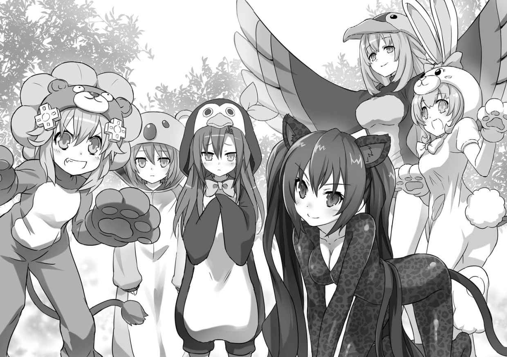
「演劇部の衣装に文句つけたってしょうがないでしょ。どうしてもって言うなら、私の黒豹と交換してあげてもいいけどどうする？」
「...それを言ったら、うさぎもライオンもジャングルにはいないわ」
「そういう問題じゃないわよ......はー、もういいわ。今回だけは付き合ってあげるけど、わかってるんでしょうね、ネプ子？ これでなんの成果も上がらなかったら呪うわよ。冥界行きなんだからね！」
うわあ......あいちゃん目が本気だよ。こ、これは何としても成功させねば。
「それじゃ行くよ。世界の平和と、わたしたちの春休みを守るために！」
気合いを入れるために円陣を組んで、えいえいおー！
今度こそはの心意気で、さっきよりもジャングルの奥深くに突入していくわたしたちイストワール記念学園動物軍団。
まーやることはさっきと一緒なんだけど、その分変装の効果が試されるわけで......あいちゃんの手で冥界に引きずり込まれないためにも失敗は許されない。
動物たちが食べに来やすそうな場所を見つけてはナノマシン入りの餌を撒き、バレないように草とかで隠してセンサーを置き......って......じ、地味だ。やっぱり地味だよこれ！
ネプギアたちはこんな地味な作業をチマチマコツコツやってたわけ？ 真面目だなぁ。我が妹ながら尊敬しちゃう。
「あーんもう飽きてきたよー。やっぱりゲハーゴン的な何か探そうよー」
「しっ！ 静かに。ちょっとずつだけどデータがちゃんと集まってきてるわ。それに、やっぱり変装は効果あったみたい。ほら見てネプテューヌ、あなたの前」
パッとしない作業にいい加減げっそりし始めたわたしの頭を、上から押さえつけたノワールが、小声で耳打ちしてきた。
わたしの前に何があるって？ ノワールの指さす先に目をやると......おお！
「お猿さんだ！」
「だから静かにって言ってるでしょ。また驚かせて逃げられちゃうわよ」
あ、そっか。ごめんごめん。慌ててわたしは自分の口を手で塞いだ。
そんなわたしの前で、お猿さんたちはわたしたちがさっき撒いた餌を器用に拾い集めている。あはは、かーわいい。ようやっと警戒を解いてくれたのかな。
「ねぇねぇ、あのお猿さんたちについてってみようよ。もっと色んな動物がいるかもしれないよ」
「気付かれないよう、ゆっくりですわよ、ねぷねぷ」
「おっけーおっけー」
拾った餌を大事そうに抱えてジャングルの奥へと進むお猿さんたちを追って、わたしたちも進む。その頃になると、頭の上のずーっと高い所から鳥の鳴き声なんかも聞こえ始めたりして、ようやく野生の王国本領発揮って感じになってきた。
ふと辺りを見回せば、これまで見たこともないへんてこりんな形をした大木やら、いかにもって感じの色合いをした花なんかもいっぱい。
そうそう、これだよ。こういうのを楽しみにしてたんだもんね。あとは、ネクタイしたゴリラがバナナを拾い集めてたら言うことなしなんだけどな。
なんて、ついついうれしくなってきちゃって、自分でも気付かないうちに歩くスピードが上がっちゃっていた。
「ねぷねぷ、ゆっくりです。ひとりだけで先に進んじゃだめですよ」
ずいぶんと後ろの方から聞こえてくるこんぱの声もお構いなし。生まれて初めて体験する本物のジャングルに浮かれきっていたわたしは、
「へーきへーき。ほら、お猿さんたちも餌を持って帰るのに夢中だし、もうそんな細かく気を遣わなくても大丈夫だってば」
いつしか動物になりきって身を低くして歩くのも忘れ、悠々と大股で次の一歩を踏み出した。と、次の瞬間、
─ ずぼっ
「あれ？」
それまで、しっかりした土の地面を歩いていたはずが、急に足下が異常な柔らかさに。膝の近くまで片足が地面に埋まっちゃったのを目で確認したかしないかっていうタイミングだった。
地面から突然湧き上がってきた（ように見えた）何かが、ワサーッとわたしの全身にまとわりついてきたかと思うと、
─ びゅうんっ！
鞭がしなるような風切り音と同時に、わたしの体が宙に浮き上がるのがわかった。
「うきゃああああっ！」
突然の事態に、今追いかけているお猿さんの鳴き声かっていう甲高い悲鳴がわたしの口から漏れた。
「ねぷねぷ！」
「ネプ子！」
ちょちょちょ！ 何!? 何が起きたの!?
まったく訳がわからずに手足をジタバタ動かすと、着ぐるみの生地ごしにザラザラとした縄を触っているような感覚が伝わってくる。
や、違う。縄じゃなくて、
「......え？ 網？」
間違いない。落ち着いて良く見れば、それは草や木の皮を編んで作ったんだと思う、お手製のネットだった。
つまりわたしは今、そのネットにすっぽりと全身を絡め取られて、その上宙づりにされちゃってるってわけで......。ええー!? どーゆーこと!?
そんなわたしの疑問は、すぐに解消した。
どうやらわたし、罠にかかって捕まっちゃったみたい。
「ヒホホホーイ！」
「タエラト！ タエラト！」（※注 なんとなくそう言ってるように聞こえたってことね）
なんでわかったかと言えば答えは簡単。わたしをこのネットで捕まえてくれちゃった張本人たちが、妙な雄叫びと一緒にわらわらと飛び出して来たんだもん。
編み目越しに見えたその数、ざっと見ただけでも十人以上いるのは間違いない。
全員が腰ミノ一丁というざっくりしすぎな基本スタイルにプラスアルファして、やたらでかい変なお面を被ってるのや、鳥の羽で全身を飾ってるのやらが、そこらの草むらから木の上から一斉に！
......こ、これはもしかして......もしかしなくても、世紀の珍獣と並ぶジャングルのお約束、未開の原住民ってヤツぅ!?
「こいつら一体どこから!? この私に、まったく気配を悟らせないなんて！」
と、わたしの真下に見えるペンギン......じゃない。捕まっちゃったわたしを助けようと大急ぎで駆け寄ってきたあいちゃんが言うのが聞こえた。
更に、
「やーん！ やめてくださいです！ 放してくださいですー！」
「あっ！ こんぱ！」
ちょっと離れた場所で、グルグルに縄を打たれたこんぱが地面にすっ転がされて、原住民たちに槍を突きつけられているのが見えた。
これは良くない。とっても良くない展開だよ！
「こらー！ こんぱを放せ！ ええい、仕方ない。こうなったら変身して......」
わたしを獲物と勘違いして罠で捕まえてくれちゃったのは大目に見てあげるとしても、こんぱに手を出すのは許さないんだから！ 見てなさいよ、わたしが本気を出したらおっかないんだぞ。
と、全身に力を込めていざ変身！ という時だった。
「待ってネプテューヌ！ むやみに刺激しちゃダメ！」
ノワールの鋭い声で待ったがかかり、わたしは大いにずっこけるはめに。
「どうして止めるのノワール！ 早くこんぱを助けなきゃ！」
「大丈夫、任せて。私に考えがあるわ」
「あーもう、もったいつけてないで！ 何かするなら急いで！ 超特急！」
焦るわたしとは正反対に、ノワールはまずゆっくりと両手を頭の上にあげてから、わたしたちをぐるりと取り囲む原住民たちを見渡した。
「落ち着いて。私たちはあなたたちの獲物じゃないわ。ほら見て、私たちはあなたたちと同じ姿のヒトよ。わかるでしょ？」
続いて、いきり立つ原住民たちをなだめるように言ってから、着込んでいた黒豹着ぐるみをするすると脱いで、探検服姿になって見せた。
......え？ さっきの挿絵は着ぐるみって言うより体にぴったりフィットするセクシー系のスーツだった？ 探検服を下に着てるってのは無理がある？
そこツッコむのは野暮ってやつでしょ。アニメの演出でも変装解いたらいつもの格好なんて良くあるパターンなんだし、リアルに描写しちゃったら年齢制限的にも色々問題あるっぽいし。察して目をつぶってくれること。いい？ じゃ、先進めるからね？
「ね？ 私たちは動物じゃないわ。わけがあって変装してただけなのよ」
言って、ノワールはその場でくるっと一回転した。それを見た原住民たちは、急にひどく驚いたような顔になる。
わかってくれたのか、くれてないのか......これだけだと、ちょっと判断に困る反応。
わたしが固唾 を呑んで成り行きを見守る中、こっちはもう完全に誤解は解けたと信じてるっぽい雰囲気で、ノワールが微笑みすら浮かべて原住民たちに向かって一歩踏み出していくと......。
「トヒ！ ダイヌヲ ワカノ ノモケ！」
「ダ リオ ト ノゲツオ！」
「ロエマ！ カツ！」
わたしたちが普段使っている大陸共通語とはまったく違う言葉で原住民たちが一斉に騒ぎ出した。
ただ、言葉は通じなくてもなんとなーくだけど喜んでいるような......。これはもしかして、うまくいっちゃった？ ノワールお手柄？
「ほら、言ったとおりでしょ。変な格好した私たちがうろついてたから驚いちゃっただけなのよね？ ごめんなさい、悪気はなかったの。許してもらえるかしら」
にっこり笑って握手を求めるノワール。
そして、その目の前一センチのところに何本も突きつけられる槍の先っちょ。
いやー一時はどうなることかと思ったけど、本当に良く......ない！ 全然ない！
「ダメじゃんか！ 全然ダメじゃんかー！」
引きつった笑みを浮かべたまま固まるノワールが、これまたあっという間にぐるぐる巻きにされていくのを為す術もなく見つめながら、わたしは頭を抱えて叫んだ。
わたしたち、これからどうなっちゃうのー!?
Ⅰ
石と土とを積み上げて作ったっぽい丸い舞台の上に、色とりどりの果物やらこんがり焼かれたお肉やらがこれまたうずたかくいーっぱい乗せられている。
舞台を取り囲むようにいくつも焚かれた篝火 に照らされたその食べ物を、檻の中から見ているしかないという状況っていうのはね、もうね......。
「よだれ拭きなさいよ、みっともない」
はっ!? い、いけないいけない。
呆れたように言うノワールの声で我に返ったわたしは、探検服の袖口で口元をごしごし。
あーでも、一切れでいいから分けてくれないかなー。くれないよねー。
なぜなら今のわたしたちは、完全に捕虜というかなんと言うか......。
少なくとも、篝火の周りで激しいビートを刻んでいる原住民たちのダンスが、わたしたちを歓迎するためのものじゃないっていうのは良くわかる。
まー歓迎って言えば歓迎されてるのかもしれないけどさ。イケニエ的な意味でとか。
「冗談じゃないよ。やっぱり今すぐ変身してさ、こんな檻ぶっ壊して逃げちゃおうよ。んで、こんがり肉とフルーツもいただいて、おさらばさっさがいいって絶対」
太さも長さもバラバラな木を適当に組み合わせて作られた、単に大きいだけの粗末な檻を手で揺らしながら、わたしはみんなに訴えた。
こんぱ、あいちゃん、ノワール、ベール、ブラン。
ここにはみんな一緒に捕まっている。持ち物を奪われてるわけでもない。誰かひとりだけ別の場所に連れて行かれちゃってるとか、はりつけにされちゃってるから迂闊なことできないとか、そういうわけでもない。
ついでに言えばこんなチャチな檻ぐらい、女神化してたら一秒でバラバラだよ。
こんぱとノワールが捕まっちゃった時は、ふたりに万が一のことがあったら困るからおとなしくしてたけどさ、別に今はもう良くない？ 好きにやっちゃって良くなくない？
「良くないわ」
お腹ペコペコなのもあって、ちょっぴり過激モードに入りかけていたわたしの訴えを一刀両断でバッサリ却下してくれたのは、あいちゃんだ。
しかも、顔はわたしの方じゃなくて手に持ったケータイに向いたまま。
「多分ここが連中の村だと思うけど、連れて来られる時にざっと見ただけでもかなりの村人がいたわ。私にすら気配を悟らせずに近付いてくるぐらい狩りに精通した人間がウヨウヨいるってことよ」
今時珍しく、テンキーがついてるパカパカケータイをあいちゃんは愛用してる。前も思ったんだけど、スマホ嫌いなのかな？
「だから？」
画面から目を離すことなく、小さなキーを親指一本でせわしなくポチポチしながらあいちゃんは続けた。
「察しの悪い子ねぇ。とりあえずこの場は大暴れして逃げ出したとして、その後が大変じゃない。ジャングルにいる間中、ずーっとあいつらに付け狙われちゃったらもっと面倒よ。まさかガチで原住民相手に戦うわけにいかないでしょうに」
「じゃあどうするの？」
「機会を見て何とかコミュニケーションを取って平和的に解放してもらう道を探るべきだと思うわ。幸い、なんの儀式をやってるのか知らないけど、今すぐ私たちをどうこうしようってわけじゃなさそうだし」
コミュニケーションねぇ......。
さっき、果敢にそれを試みて大爆死した勇者様がいたような。
ちら......っと。
「なんで私を見るのよ！ 元はと言えばネプテューヌが罠なんかに引っかかるのがいけないんでしょ！」
篝火に照らされてってだけとは思えないぐらいに顔を赤くしたノワールが、プーッと頬を膨らませてわたしから目を背ける。それと同時に、
「あのぅ、皆さんちょっといいですか」
控えめに顔の前に手を上げたこんぱが言った。
「どうしたの？ 具合でも悪い？」
たまたまこんぱの隣に座っていたブランが、心配そうに声をかける。
「具合、悪いんでしょうか......」
答えながらこんぱは首を傾げる。
「わからないんですの？ ちょっと失礼......お熱はないようですけれど」
ついっと身を乗り出してきたベールがこんぱのおでこに手を当てると、ぱっとこんぱがその手を取った。
「ち、違うです。具合が悪いのはわたしじゃなくて......ほら、あっちです」
あっち、と取ったベールの手を檻の外へと向けるこんぱ。その手の先にみんなが注目する。そこでは、また別の村人たちが地面に座り込んでいて、踊っている村人たちの方を見ているみたいなんだけど......。
「あれがどうしたの？ 仲間のダンスを見てるだけなんじゃない？」
こんぱの言いたいことが良くわからず、わたしは尋ねた。
「それはねぷねぷの言うとおりだと思うですけど......あの人たち、さっきからずーっとくしゃみしたり、苦しそうにお鼻を揉んでたり、なんだか辛そうです。わたし、村に連れて来られた時からずっと気になって気になってしょうがなかったです」
「...言われてみればそうね。あ、またしたわ。右端の女の人」
こっちも言われて初めて気がつきましたって感じのブランが、こんぱから受け取ったベールの手をくいっと動かして言った。
「わたくしの手をいつまでも指し棒がわりに使わないでいただけません？ ......それにしてもコンパさん、この状況でよくそんなことに気付きましたわね。さすがはナース志望ですわ」
「そ、そんな......褒められるほどのことじゃないです。たまたまです」
ブランから引っぺがした手でベールがこんぱの頭をなでなでし、こんぱは照れ照れした。
「病気......か。もしあのダンスが村人たちの回復を祈願する儀式なんだとしたら、やっぱりちょっと困った事態かもしれないわね」
こんぱの話をきっかけに、ようやっとケータイの画面から顔を上げたあいちゃんが唸る。
「な、何なに困った事態って......」
不安を煽るようなあいちゃんにわたしが聞いたその時だった。
「ヒホホーイ！」
「マサ！ アタタリ！ マサ！ アタタリ！」
いつの間にやらクライマックスを迎えていたっぽいダンスが不意に終わり、湧き上がった大きな叫び声にわたしの質問はかき消されちゃった。
トランス状態とかって言うんだっけ？ あれ、違ったかな？ わたし、あんまりこういうの詳しくないんだけど......とにかく、なんかもうワーッて感じの熱狂的な雄叫びがしばらく続き、ようやく収まったかと思えば今度は音量オフボタンでも押したみたいな静けさ。
その静けさの中、まるい舞台をぐるっと回り込んでこちらに近付いてくる人影が。
女の人だ。背丈は、ベールと同じかちょっと高いぐらいかな。バディの方も負けず劣らずって言うか、見た瞬間にあいちゃんとブランが「チッ」と舌打ちするレベルって言うか......いや、実際にはしてないけど。
とにかくまぁそういうお体をお持ちの若いお姉さんが、ゆっくりとこちらに近付いてくる。ちなみに服装はかなり際どい。とりあえず隠してありますってレベルで、女のわたしでもちょっと目のやり場に困っちゃうような。
「さて、ここからが本番かしらね。......多分、これで合ってるはず」
そんな際どいお姉さんをチラ見しつつ、またせわしなくケータイをいじりつつのあいちゃんがボソッと言った。
同時にお姉さんがわたしたちを閉じ込めた檻の前に立って、
「ヨ チタノ モケ ル ナイセ タクテレワ ラアゾ クヨ」
わたしたちに向かって言った。
と、お姉さんが喋り始めるのに合わせ、何をするつもりなんだか、あいちゃんがケータイの画面をお姉さんの方に向ける。
「あ、あははは。なーんて言ってるんだろーなー」
わたしはと言うと、お姉さんにビミョーな愛想笑いを向けるだけ。
と、あいちゃんのケータイから鳴り響く軽いチャイム音。ピロリン♪
「......恐るべしね、ゴッグル社。こんな辺境のマイナー言語まで押さえてるとは」
その音を聞いて画面に目を戻したあいちゃん、満足そうにひとつうなずくと画面をわたしたちに見せてくれた。
んんー？ なんか文字が出てるね。どれどれ。
『現れました。望んでの動物。それは聖なるである』
......ナニコレ？
「検索サービスのゴッグルあるでしょ？ あれの少数言語翻訳サービスよ」
「えー!? ゴッグルってあの、〝ゴグレカス〟......のゴッグル？」
な、なんかこんな未開のジャングルで聞くにはあまりに近代的って言うか、文明の香りがする名前がいきなり出てきたので、あいちゃん以外の全員が目をぱちくり。
「それっぽく訳すと、『よくぞ現れてくれた。聖なる獣たちよ』とかそんな感じかしらね」
「このお姉さんが、そう言ったってこと？」
「多分ね。さて、次はこっちの話が通じるか試してみましょ。『あなたは、この村の偉い人ですか』っと」
驚くわたしにうなずいて、あいちゃんが今度は自分の声をケータイのマイクに向かって吹き込む。やがてまたピロリン音。続いて、よくニヤニヤ動画にうｐられてるボーカルアイドルみたいな声と喋り方でもって、お姉さんが喋ったのと同じに聞こえる謎言語がケータイのスピーカーから流れ出てきた。
それを聞いたお姉さんの驚きようったらなかったね。「一体こいつらはさっきから何をしてるんだ？」って感じでわたしたちを見下ろしていたのが、その場で飛び上がって尻餅ついちゃうんだから。
そんでもって、今度は食い入るようにケータイを見て、わたしたちを見て、またケータイを見てっていうのを何度も繰り返してから、こっくりとうなずいた。
「...すごい。通じたわ」
「やりましたわね、アイエフさん」
まぁ驚いたのはお姉さんだけじゃなくって、わたしたちもだけどね。......いや、正直ちょっとナメてましたゴッグル。さすがは、この世のすべてをデータ化しているとすら言われるゴッグル先生だわ。
「ノワールよ、これがコミュニケーションだ！」
「ご、語学は度胸よ！ 大体、ネプテューヌの力じゃないじゃ......って、今そんなことどうでもいいでしょ！ アイエフ、早くここから私たちを出すようにその人に伝えて」
「やるだけやってみましょ」
それからしばらくの間、あいちゃんのケータイとゴッグル翻訳頼みの奇妙な異文化コミュニケーションが続くことになる。
「えーっと、『私と同じように、これに向かって喋ってください。それで会話ができます』」
まず、そう前置きしてから、あいちゃんはわたしたちがどこの誰で、何をしにジャングルにやって来たのかってこと、わたしたち全員村の人たちに危害を加えたりするつもりがないってことを丁寧に説明した。
それにしても、あいちゃんってば頼りになるんだから。
さっきからケータイをポチポチしてたのは村人の格好だとか、儀式の様子だとか、その他色々と観察して気付いたことをキーワードにして、それこそ〝ゴグり〟まくって、この原住民の皆さんがどういう部族で、どういう言葉を使うのかを調べてたって言うんだもん。
「......では、お前たちはお告げにあった聖なる獣ではないのか（※えー、ゴッグル翻訳結果を基にそれっぽく意訳してお届けしております）」
「残念ながら違うわ。私たちは、遠い所にある人間の国から来たの」
あいちゃんの説明は続く。
「なんということだ......。このままでは村が......。（※繰り返しますが、翻訳結果を基にした意訳でお伝えしています）」
で、どうにかこうにかお姉さん─ この村の巫女さんなんだって。だからこれからは簡単にミコさんって呼ぶよ─ に、「わたしたち、多分何かの勘違いで捕まってるんだと思うんだけど」ってことを伝えたんだけども......。
「では、私はいったいどうすればいいんだ......（※もういいよね？ ＯＫ？）」
急にがっくりと肩を落としたミコさんは、なんとその場でポロポロと涙をこぼして泣き始めちゃったの。
「妙な雲行きになってきたわね」
ブランの言うように、これはちょっと予想外の事態。どうもミコさん、何かひどく思い詰めてわたしたちを捕まえたみたい。
「......あのさ、あいちゃん。さっきから気になってるんだけど、『聖なる獣』とか『お告げ』ってなんのことなのかな？ ミコさんの様子と関係あったりするのかな？」
「同感。ちょっと聞いてみましょ」
豹変したミコさんにちょっとうろたえながらも、あいちゃんがまたケータイに声を吹き込んだ。
涙をぬぐい、きゅっと唇を噛みしめてからミコさんが答える。
「今、この村では謎の病が蔓延 しているのだ。病を癒やす手立てはなく、このままでは遠からず村は滅びてしまう......そんな時、私は神の使者からお告げを聞いたのだ」
......どんな？
「たった今、森の中にお前たちが見たことのない獣がいる。その獣は、ヒトと獣、ふたつの姿を持つ聖なる者だ。それを捕らえ、神へのイケニエに捧げよ。さもなくば、村はアタタリ神の呪いによって滅ぼされる......と」
え？ お告げって、もしかして物凄く最近って言うか......今日の話なの？
んでんで、見たこともない獣で......ヒトの姿も持っていて......。
あーなるほど......つまりそーいうことでしたか......。
「わたしたちが捕まったのって、もしかして」
「もしかしなくてもそうでしょ。......責任取って、ネプテューヌだけでもおとなしく神様の下に召されてもらうのもいいかもしれないわね。それでこの村、助かるんじゃないかしらね？」
うわー、ノワちゃんってば当たりきっついんだから。さっきちょーっとからかったからって、それはいくらなんでもでしょ。
イケニエ、ダメ絶対！ さっき冗談半分で考えたことが、ここにきて現実化なんてそれこそ冗談じゃないってば。
ノワールに釣られてみんなまで変な気起こされちゃたまらない。ここは何がなんでもイケニエ反対を訴えなきゃと、わたしはあいちゃんのケータイに手を伸ばす。
が、わたしよりも早く、横合いから物凄い勢いでケータイを奪っていく意外な影が。
「やっぱり村の皆さんは病気だったですね！」
その正体は、なんとこんぱ！
ゆるふわのんびりな普段のこんぱからは想像もつかない、野良猫がシャッとお魚を奪っていくかのような早業だった。
「あいちゃん、ここに喋ればいいですか!? 」
「え、ええ。そうだけど......って、ちょっとコンパ、アンタ急にどうしちゃ......」
「えーと、えーと......な、なんて話したら伝わるですか？ 『わ、わたしは病気が治せるです。お願いです、ここから出してくださいです。わたしに、皆さんを助けさせてほしいです！』......です！」
こんぱ......。
あいちゃんからひったくるようにしたケータイに向かって、必死の形相で言葉を吹き込むこんぱの姿を、わたしたちはボーゼンとして見つめるしかなかった。
Ⅱ
「はい、口を大きく開けてくださいです。あーんですよ」
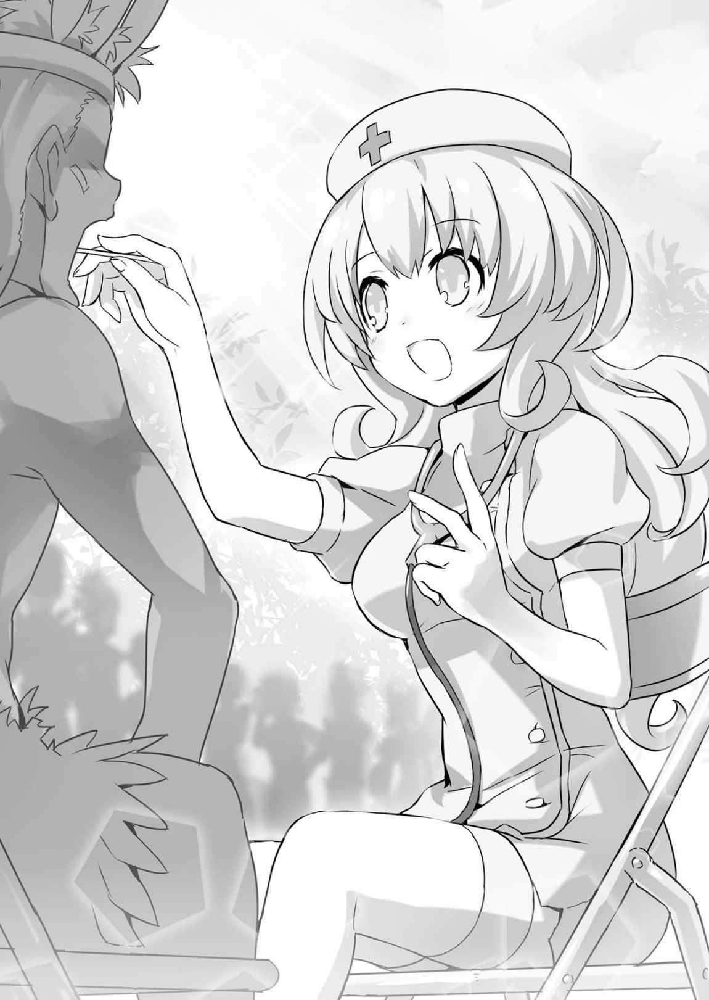
さっきまでわたしたちが閉じ込められていた檻があった場所に列ができている。新型スマホの発売日みたいなその大行列を作っているのは、こんぱの診察を待つ患者さんたち。
「コンパがあんなに必死な顔で何か訴えるのを見たのって、いつ以来かしらね」
翻訳係のあいちゃんを助手に、こんぱは丁寧に村の人たちの症状を見ている。
本当はチカ先生みたいなお医者さんじゃないといけないんだろうけど、この際そんな細かい規則に縛られてなんかいられない。イケニエにされちゃうかどうかの瀬戸際だしね。
「わたしは覚えてるよ」
こんぱの頑張ってる様子を離れた所で見守りつつ、わたしは「いつ以来だろう」っていうノワールの疑問に答えた。
「マジェコンヌ先生が異世界の魔女に体を乗っ取られてさ、わたしたち四人とも変な魔法の杖でやられちゃいそうになってさ、もうダメだーってなった時だよ。こんぱがマジェコンヌ先生の前に体ひとつで立ちふさがって......」
「そんなこともありましたわね。もうずいぶんと前のことのような気がしますわ」
「そうね。今にして思えば、あれがすべての始まりだったわよね」
あの時のこんぱは、わたしたちを守るために命がけだった。わたしたちを助けてくれるなら、自分が魔女の手下になったっていいとまで言ってくれた。
やってることは全然違うけど、今もきっと......ううん、絶対にこんぱはあの時と同じような気持ちでいると思うよ、わたし。
こんぱが必死になるのは、いつだって自分じゃなくて他の誰かのためだもん。わたしが記憶喪失になって天界から落っこちて来た時だってそうだった。
「いきなり捕まって、これから自分たちがどうされるのかもわからないのに、まず村の人たちが病気かどうかが気になって仕方なかったって言うんだから......敵わないよ」
「筋金入りってやつですわね。でも、コンパさんらしいですわ」
正直ちょっと呆れちゃうのもあるけれど、それを上回る尊敬の眼差しでわたしたちがこんぱを見ていると、
「......あった。これだわ」
ひとりだけ話に加わっていなかったブランが、唐突に声を上げた。
「わ！ びっくりした。どしたの急に」
「ミコの話に出てきた『アタタリ神』のことを調べてたの」
「調べてって......ブランも〝ゴグって〟たの？」
「違うわ。電子書籍。最近、これでも読めるようになったから」
これ、と言ってブランが持ち上げたのは、姉妹三人がお揃いで持ってるあのダブルスクリーンの携帯ゲーム機だった。
「今や電子書籍も携帯ゲーム機で読める時代ですのね」
「別にゲーム機じゃなくってもいいんじゃない？ リーンボックスではアレ作ってるじゃん。アプリをパネルみたいに並べておけるタブレット」
「そうですわね。ですが、タブレットにも色々と種類がありますのよ」
「タブレットだったら最近ではラステイションでも力を入れてるわよ？ せっかくだから、ラステイション製も候補に入れてみたら」
「あー、そっちも聞いたことあるような。ＸとかＺとかそんな名前だったかな？」
「そんなに候補があっては、いよいよ迷ってしまいますわ。......でしたらいっそ、わたくし専用に特注品を作っていただく、という手もありますわね」
「......話、続けていいかしら？」
あっと、すいませんブランさん。どーぞどーぞ。
えーと何だっけ？ アタタリ神の話だったかな？
「これは、今はもう滅びてしまった古代文明や、その文明にまつわる神話を集めた本」
「古代文明？」
「そう。詳しくはこの部分を読んで」
「わたし字ぃ読むのニガテ。ノワちゃん、代わりによろしく！」
「ほんとにこの子は......」
ゲーム機を受け取ったノワールが、ブランが示した場所を声に出して読み始める。
「......現在のプラネテューヌ、ルウィー、ラステイション、リーンボックスに連なる文明の礎ができる以前に栄えた文明の民が信仰していたとされるのが、アタタリ神と呼ばれる存在である。アタタリ神を信仰していた文明は、現在のリーンボックス州都に近い場所で発生し、一時は世界中にその版図を広げる勢いであった......ですって」
「リーンボックスにあった文明ですの？ そう言えばこのジャングルも州の区分で言えばリーンボックスですわね。外れもはずれ、超辺境ですけれども」
「その大昔の文明で信じられてた神様を、今もこの村の人たちは信じてるってこと？」
「あーもういっぺんに話さないで。今、続きを読んでるんだから。......大体、なんで私がわざわざ読むのよ。ブランが説明してくれた方がいいんじゃない？」
「嫌。めんどくさいから」
あんまり身も蓋もないブランの答え（や、わたしも人のこと言えないけどさ）に、やれやれと首を振ったノワールが、またゲーム機の画面に目を戻す。
「......アタタリ神は豊穣 を司る神とされ、多くの信仰を集めたって書いてあるわね」
「ホージョーって？」
「五穀豊穣 の豊穣。簡単に言うと、作物が毎年豊作になるように面倒を見てくれる神様だったってことね」
「あれ？ じゃあ良い神様じゃない。呪いがどうこう言うから、てっきり怖い破壊神とかそういうの想像しちゃったよ」
「でも神話によるとこの神様、バランス悪いところがあったみたいね。おいしくないって不人気だった作物だけを山のように採れるようにしちゃうとか......」
「本当はトマトがほしいのに、ナスばっかりくれるみたいな？」
「そんなこと言うとナス農家の人に怒られちゃうわよ。でもまぁ、そんな感じかしら」 うーん、とわたしは首をひねった。
確かにちょーっと自分勝手って言うか、空気読めないアレなところもあるみたいだけど、でもやっぱり人間を呪い殺しちゃうような神様には思えないんだけどなぁ。
正直に思ったことを言ってみると、他の三人も「確かに」と口を揃えた。
「大体さー、ミコさんにお告げをしたっていうのは誰なのさって話じゃない？ 今日わたしたちがジャングル入りした後で、ピンポイントにわたしたちの特徴をお告げに出すってかなり胡散臭いんですけど」
「それは私も思ったわ。でね、ちょっと思い出したことがあるんだけど......この間ユニが変なことを言ってたのよ。『もしかしたら、アタシたちがまだ知らない敵がいるかもしれない』って」
「ま、まだ知らない敵!? もしかして、マジックたちの他にも誰か異世界の悪者に乗っ取られちゃってるのがいるとか？」
勢い込んでわたしが詰め寄ると、「そこまではわからないけど......」とノワールは歯切れ悪く口ごもった。
「ユニちゃんにも何か根拠があってそんなお話をされたのでしょうし......だとすれば、お告げの主がミコさんを騙したという可能性はありますわね」
「もっと言えば、村に病気を蔓延させたのが、その〝謎の敵〟であると考えれば辻褄も合うわ」
そんな......。そんなの許せない！
どーいう理由でわたしたちの邪魔をしたいのか知らないけどさ、そのために関係ないこの村の人を病気にしちゃうとか酷すぎる！
「病気、簡単な風邪とかその辺でおさまっててくれるといいんだけどなぁ......」
ここから先の話は、こんぱやあいちゃん......それにできればミコさんとか村の人にも加わってもらった方がいいってことになって、こんぱの診察を待つことになった。
ちょこちょこと、できることをお手伝いしながら待つこと二時間ぐらい。ようやく具合の悪い村人全員の診察が終わった時は、さすがにこんぱも疲れた顔になっていた。
「それで、診察の結果は......」
地面に座り込み、水筒に入れておいたお茶を飲んで一息つくこんぱの周りに、みんなが集まる。
疲れてるところ悪いとは思うけど、これだけはちょっと聞いておかないとね。
「......はい。皆さんの症状は、まずひどい鼻づまり。もしくは、止まらない鼻水です」
ぐっとお茶を飲み干してから、こんぱが話し始める。
「続いて、全身の倦怠感です。つまり、体がだるいっていうことですね。微熱のある人もいたです」
今のところは風邪の症状みたいだけど......。
「それから、目のかゆみに喉の腫れ。やる気や集中力の低下が見られたです」
うっ......結構色々あるね。
あれ、でも風邪で目はかゆくなったかな？
「それらのしょしょ......しょしょうじゅ......んん！ それらの諸症状から考えられる病名はですね......」
病名は？ やだよ、なんか聞いたことないみたいなおっかない病気は。
「......花粉症です」
一瞬、どうにもリアクションに困る、ぼやーっとした空気があたりに流れた。
これは......なんだろ。なんと言うべきか、なんと言ったらいいんだか......。
「間違いないの、それは？」
さすがに村を脅かす謎の病気の正体が花粉症っていうのは意外すぎたみたいで、ノワールが確かめたんだけど、
「はいです。念のため、あいちゃんの電話でチカ先生ともお話したですけど、チカ先生も花粉症......正確に言うと、アレルギー性鼻炎だろうって言ってたです」
チカ先生のお墨付きももらった診断に自信があるみたいで、こんぱはノワールの確認にもはっきりとうなずいた。
「私も電話の内容は聞いてたけど、間違いなさそうよ」
ずっとこんぱの側で手伝っていたあいちゃんも、こんぱの診断が間違ってなさそうだと補足する。
や、別にこんぱを信用してないっていうんじゃないよ？
「......でも、ねぇ」
なーんか騙されてるんじゃないかみたいな気持ちになっちゃうのは、仕方ないと思う。
それもあって、微妙にさっき話してたアタタリ神やら何やらの話をするタイミングをつかめないでいると、
「さてと、こうしちゃいられないです。すぐにお注射の準備です」
休憩はおしまいです。と、きりきりっと気合いの入った顔つきになって、こんぱはすっくと立ち上がって行ってしまった。
お注射の準備って......こんぱ、どれだけ薬持って来てるの？
尋ねる間もなく、ナースの使命感に突き動かされちゃってるこんぱはキャリーケースからテキパキと薬を取り出して、
「それでは、これから皆さんを治療するですよ。また順番に並んでくださいです」
集まった村人たちに大きな声で呼びかけた。
これはもう、ヘタに水を差さない方がいいね。こんぱってば、完全にやる気になっちゃってるよ。
だったら、友達として今わたしがすることはひとつしかない。
「待ってこんぱ！ わたしもお手伝いするよ！ なんでも言って！」
Ⅲ
あっという間に二日が過ぎた。
その間ジャングル調査がどうなったかと言えば、そりゃもう順調も順調。なんたって、わたしたちの千倍はジャングルに詳しい原住民の皆さんが総出で、『女神こんぱ様とそのご家来衆』に全面協力だからね。理由は、言わずもがな。
「わ、わたしは女神様なんかじゃないです。ただのナース志望の学生です」
なーんて、当のこんぱ自身は恐縮しまくりだけど、
「誰がなんと言おうと、今回のＭＶＰはコンパさんとあいちゃんですわ。この調査が終わるまでは、なんなりとお申し付けくださいまし。女神様」
そんなこんぱをからかいながら、割と本気っぽくベールが言ったことに他のみんながすんなり乗っかって「そうよそうよ」とはやし立てたのが、こんぱの人徳ってことかもね。
これがもし、わたしひとりだけ持ち上げられるような事態になってたら......なんて考えると、ちょーっとフクザツだけど。
ただ、いくら心強い協力者ができたからって、あんまり和気あいあいとやってられる状況でないのも確かなわけで、
「それじゃ、ご家来衆の皆様にお話があるけどいいかしら？ ざっとチェックしてみたけど、ファイナルハード号に積み込んである残りの医薬品と合わせても村人たちの症状を抑えておけるのは、あと二日が精々ね。それまでに大元を断たないことには、村はまた二日前の状況に逆戻りよ」
あいちゃんが真剣な顔して言うみたいに、村の人たちを悩ませている花粉症の原因はまだ突き止められていない。
はっきり言っちゃうと、いーすんに送らなきゃいけない分のデータは昨日の段階でもう十分集まってるんだ。だから、わたしたちがここに残る理由はもうないっちゃないんだけど、さすがにそれは薄情もいいとこだし、第一、『女神こんぱ様』がそんなことをお許しになるわけもなく......。
そんなわけで、手分けしてジャングルに散っては目に付いた花を村に持って帰って、その花の花粉でアレルギーが起こるかどうか調べるというのを一日中繰り返してみたんだけど、結局うまいこといかず。
さてどうしたもんかと、さすがに焦り気味になってきた翌日、事態は動き始めた。
それも、悪い方向に。
三日目の朝、
「ぶふぇーっくしょん！」
わたしは、やっちゃってから自分でも驚くような特大くしゃみで目を覚ました。
ほとんど、くしゃみの勢いだけで飛び起きたところで次に襲いかかってきたのは、強烈な目のかゆみ。一度くしゃみが飛び出したあとは、空気の取り入れも排出も一切拒否するかのような鼻づまり。
ま、まさかこの症状は......。
とにかく、冷たい水で顔でも洗って考えようと村での寝泊まりに使っていたテントを抜け出したわたしは、そこで自分の目を疑った。
「みんな起きて！ なんかヤバげだよ！」
村の中が、赤い。
赤く色を付けた小麦粉を何十トンも村中にぶちまけたみたいな光景が、目の前に広がっていた。もうもうと立ちこめる赤い何かのせいで、一メートル先だって見通せやしない。
一体何がどうなってるのかわからず、みんなに声をかけてからボケッと立ち尽くしてしまっていると......は、鼻の奥から堪えきれないムズムズがせり上がってきて、
「びゃーっくしゅん！ へーっくしゅん！」
またしても、くしゃみ。それも連発だよ。背中の筋肉がビキビキっと引きつるような感覚がして、わたしは思わずその場にうずくまりそうに。
「ねぷねぷ、大丈夫ですかっくしゅん！」
「ま、まさかこの赤いの全部が花粉だっくしゅん！」
「息ができなっくしゅん！」
わたしに続いてテントを出てきたみんなも、次々とくしゃみ。くしゃみ＆くしゃみで苦しそうにあえぐ。
わたしたちがそんな状況なんだから、村の人たちは言うに及ばずってやつ。
こんぱの懸命な手当でこの三日は静かな落ち着きを取り戻していた村の中は、蜂の巣を突いたような大騒ぎ。
「うわーん！ とにかくこの赤いのなんとかしなきゃ！ 一回全部まとめて吸い込んでポイとかできないの!? 」
薬あげるとかあげないとかっていう話じゃない。わたしたちも含めて、このままじゃくしゃみと目のかゆみで全員頭おかしくなっちゃうよ！
「吸い込んでポイ......。それですわ、ねぷねぷ」
このまさしく降って湧いたしっちゃかめっちゃかな大ピンチに立ち上がったのはベールだった。みんなしてくしゃみの大合唱を続ける中で、
「こんなものは変身してしまえば！」
ぐっと息を止めてこらえたベールが、気合い一発で変身する。そのまま、でやっ！ と空中に飛び上がったかと思えば、
「はあああっ！」
手元に転送した槍の柄、一番先っぽの部分を両手でつかんでから、ハンマー投げ選手みたいにその場でグルグルと回転を始める。
長い槍が空気を切り裂き、かき乱した。それにつられるように、真っ赤な花粉（？）がぶわーっと舞い上がる。
「ちょっと！ これじゃ余計に被害拡大じゃない！ 何考えてんの！」
一瞬、ベールが花粉に耐えかねて本当におかしくなっちゃったのかと思ったわたしだけど、すぐにそうじゃないことに気が付いた。
わたしの声にもお構いなしでどんどん回転するスピードを速めていくベール。すると、ベール自身を柱にするように風がベールの周りに集まり始め、やがてベールを中心にしてちっちゃな竜巻とでも呼べそうなものが出来上がった。
その竜巻、規模は小さくても勢いは凄い。村中に舞っていた花粉が次々と竜巻の中に吸い込まれていくのを見て、
「ネプテューヌ、ノワール。わたしたちも手伝った方がいいと思うわ」
珍しくブランが積極的に共同作戦を持ちかけてくる。さすがの面倒くさがりもこの花粉だけはさっさと撃退したいっぽい。
勿論、わたしたちに異論があるわけもない。
「やろうやろう。すぐにやろう」
そういうことになって、わたしたち三人も......久々に変身ッ！
「ひとりじゃメンドそうだから手伝ってやんぜベール！」
まず飛び出して行ったのは、共同作戦を提案してきたブランだった。
愛用の巨大アックスの刃を寝かせ、うちわ代わりに大きく仰ぐと花粉を一気にベールの竜巻に追いやっていく。
わたしとノワールも動く。空中でふたり背中合わせになってから、
「ネプテューヌ、私に合わせなさい！」
「わかったわ。ノワールに任せる」
「それじゃ......せーの！」
ノワールの合図で同時に両腕を前に伸ばして回転をスタート。ベールのとは別に、もうひとつ大きいのを作ろうという作戦でいく。
「いいわよ四人とも！ だんだん視界が開けてきたわ」
「やっぱり女神様は、ねぷねぷたちの方が本家です。頑張ってくださいです」
あいちゃんとこんぱの声援を受けて、わたしたちが作り出したふたつの『女神トルネード』が、花粉という花粉を根こそぎ吸い上げる！
勢い余って花粉以外の物を巻き上げてしまわないように気を付けながら、トルネード作戦を続けたところで、
「花粉はほとんど竜巻の中に取り込んだわよ。次はどうするのベール！」
いつしか、乾いた血のような薄気味悪い色になっているベールの竜巻に向かって、わたしは声を張り上げた。恐らく、わたしとノワールで作っている竜巻も似たような色になっているのだろう。
「ここで回転を止めたら、また村に花粉をばらまくだけですわ。このまま花粉を抱き込んで上昇してくださいまし！」
「上昇ね。了解！」
ふたつの竜巻が、ゆっくり上昇を開始した。途中、どうしても取りこぼしてしまう花粉は、逐一ブランが竜巻の方に押し込んでいく。
最近では結構様になってきたように思う一致協力の連係プレーで、上へ上へ。結局、飛行機が飛ぶような高度まで飛び上がったところで、
「もうよろしいでしょう。あとは気流が散らしてくれますわ」
まずベールが回転を止め、続いてわたしとノワールも。一瞬、巨大な絨毯のように宙に広がった大量の花粉が、上空の激しい気流によって四方八方へ飛び散っていく。
「いいの？ とりあえず村には落ちないとしても、これだと世界中に飛んでいってしまうような気がするけど」
一仕事やり終えて額の汗をぬぐうベールにわたしが聞くと、
「あちこちに散らばっていく間に害のない濃度に薄まるでしょう。ですが、これはあくまでも対症療法に過ぎませんわ。なんとしてでもわたくしたちの手で、大元を断たないことには根本的な解決には至りませんわよ」
汗をぬぐった指先を、眼下に広がるジャングルの一点に向けた。
その指の先、どこまでも続く緑の中に、真っ赤な靄 のようなものが立ち上っている一角を見つけたわたしは思わず「あっ」と声を上げた。
「こういうの、なんて言うんだったかしら？ 棚からぼた餅？」
「相変わらず変身しても大事なところは抜けてるわねー。それを言うなら、怪我の功名でしょ。......で、どうするの？ 私としては、速攻根こそぎ叩き潰すっていうのを提案するけど？」
「乗った！ あんなのにまた巻き込まれるなんざ、二度とごめんだからな。クソが、まだ鼻の奥がムズムズするぜ」
「村はコンパさんとあいちゃんにお任せしておけば大丈夫でしょう。わたくしも賛成ですわ。ねぷねぷはいかがですの？」
当然、わたしの気持ちも決まっている。
それを伝える前に、深く鼻で深呼吸。地上と比べれば酸素は薄いし、マイナス何十度っていう凍てつく寒さだけど、女神化したわたしの肺には冷たく心地良い高原の空気のように染み渡ってくる。
わたし、今まで鼻で息ができるのがどれほどありがたいかなんて考えたこともなかったわ。息ができる、それだけでこんなに気分が晴れるなんてことも。
「さっさと片付けましょう。行くわよ」
視界の真ん中に真っ赤な靄を見据え、わたしは飛んだ。
「あ！ ちょっと！ 勝手に仕切るんじゃないわよ。待ちなさい！ 一番乗りは私なんだからね！」
変身するとノワールの気が更に強くなるのはいつものことなので、無視して飛ぶ。今はあの靄 の元......恐らく地上で大量に群生しているはずの花をなんとかする方が大事だ。
靄の出所は村から見ればジャングルの最奥だけど、変身したわたしたちからすればどうってことのない距離。すぐにその場所へと到着した。
そこは、当たり前だけど花園だった。
大きな野球場が三つか四つは余裕で入るぐらいの広さかしら。高い木がそこだけ忽然 と消え失せていて、ちょうど隕石が落ちた時にできるクレーターのような場所に、その花園はあった。
木々の代わりにあるのが、花。たった一種類の花。わたしたちの足首ぐらいの背丈を持つ、白と黄色がマーブル模様に混ざった可愛らしい花がびっしりと......そう、本当に一分の隙もないほどにびっしりと地面を埋め尽くしているのだった。
何も知らずにそこを訪れたのなら、思わずため息をついてしまうほどにメルヘンで美しい光景だと思う。でも、その花の中に村を襲ったのと同じあの真っ赤な花粉が詰まっているのを見てしまうと、とてもそんな浮かれた気分にはなれなかった。
むしろ、この広大な空間をただ一種類の花が埋め尽くしているばかりか、更に外へ外へとジャングルを〝浸食〟している様子は薄ら寒いものを覚えるほどだ。
「確かプラネテューヌの昔話にこんなのがありましたわね。竜に奪われた土地は毒の花で埋め尽くされるとか......」
「七匹の竜がどうこうってやつだろ？ そりゃ、プラネテューヌじゃねぇよ。ルウィーの昔話だ。妹たちが子供向けに描いた絵本を持ってるぜ」
「何言ってんの、ラステイションよ。それに昔話じゃなくてＳＦアニメじゃなかった？」
「別にどこの昔話でもアニメでもいいわ。問題は、これをどうやってきれいさっぱり片付けるかっていうことよ」
相変わらず視界が悪い。もしここで変身を解けば、途端にくしゃみと鼻水と涙でぐちゃぐちゃになってしまうだろう。
一歩足を踏み出す度に地面に積もった赤い花粉が派手に舞い上がる中、その花園を進むうちに、わたしはふと気が付いた。
「ねぇ、何か聞こえない？」
ドーン、ドーンと大砲を撃つような音。同時に、大きな旗をバサバサと振り回すような音も。そのふたつの音が入り交じり、少しずつ少しずつ......こちらに近付いてくる。
何かが......いる！ この赤い靄の向こうに！
昔話だなんだとお喋りをしていた三人の耳にもその音はハッキリと聞こえたみたいで、みんなが靄の向こうに目を凝らす。
近い。恐らく、わたしたちからもう十数メートルというところまで来ている。
「みんな！ 気を付けて！」
わたしが発した警告と、それは同時だった。
混ざり合う二つの音と一緒に、前から強烈な突風がわたしたちに叩き付けられてきた。
花からこぼれ、積もった花粉が凄まじい勢いで上空に舞い上げられる。その勢いは、さっきわたしたちが作ったちっぽけな竜巻の比じゃない。
一瞬で近辺の花粉が空へと消えてなくなり、そして、わたしたちは見た。
目前にそびえ立つ異形を。
ドラゴンの一種らしい顔。天を走る稲光をそのまま固形化したかのような半透明の巨大な角が、その左右に張り出している。
その派手なドラゴン顔が乗っかっているのは、三日前にノワールが変装したジャガー......つまり豹の胴体なのだけど、足の数は普通のジャガーよりも多い六本足。
その上、背には鷹かハヤブサを思わせる翼まで生えている。
トカゲに猛獣に鳥......ジャングルの人気者をひとまとめにしたような造形だけど、はっきり言って見ているだけでめまいがしてくる。その上、全長はどう控えめに見積もっても三十メートル以上。インパクトは、半端じゃなかった。
「おいおい......実在してやがったのかよ」
その巨体を見上げたブランが、ごくりと唾を飲み込んでつぶやいた。
「ブラン、こいつがなんなのか知ってるの？」
「ああ、知ってるぜ。ただし、実物を見る機会なんざ一生ない......と言うか、ありえねぇと思ってたけどな」
「......どういうこと？」
「前にゲーム機で見せた神話の本あんだろ？ あれに載ってんだよ、コイツ。『六本足のジャガーともリンクスとも言われる胴体、そしてファルコンの翼を持つという名も無き異形のドラゴンの姿は、しばしばアタタリ神の眷属 として遺跡の壁画などに描かれている』ってな」
神の......眷属ですって？
まったく予想だにしないブランの答えに、わたしは目を丸くした。
ネプギア、あなた確か生態が謎に包まれた巨大イカと戦ったって言ってたわよね。どうやらわたしも、あなたに負けず劣らずの体験ができそうだわ。
わたしがその体験を希望しているかどうかは別にして、ね。
Ⅳ
「神の眷属だかなんだか知らないけど、邪魔するなら叩き潰すまでよ！」
小山のような威容にも怯まず、アタタリ神の眷属として壁画に描かれる名無しのドラゴンに向かって突っ込んでいった、ノワールだった。
気合いとともに地を蹴って、全身を弓のように反らせて大剣を振りかぶると、
「いつだって先手必勝！」
パワー最大の溜め斬りでアタタリ神の眷属として壁画に描かれる......ああもう！ アタタリ・ドラゴンの鼻面に斬りかかった。
避けられないと思ったのか、それとも避けようとする気がないのか、アタタリ・ドラゴンはその場から動こうとしない。
「もらったわ！」
ファーストヒットでの大ダメージ奪取を確信したノワールがエメラルドの瞳をきらめかせるのが、地上のわたしからもはっきり見えた。
が、大剣の切っ先がドラゴンを捉える寸前、ドラゴンがわたしたち四人をまとめて一呑みにできそうな大口を開け、首を後ろへのけぞらせた。
「ノワール！」
「わかってるわよ！」
火炎？ それとも吹雪？ とにかく、それが強力なブレス攻撃の前触れと読んだノワールが、即座に大剣の刀身で自分の体を隠して防御の態勢を取る。
次の瞬間、耳元で大砲が炸裂したような......そう、アタタリ・ドラゴンの存在に気付く前に聞こえたあの音とともに凄まじい突風が巻き起こり、
「きゃああああっ！」
悲鳴とともにノワールの体が錐 もみしながら遙か彼方へ吹き飛んでいく。けど、助けに行くような余裕はない。その炸裂音は一度だけでなく二度、三度と立て続けに轟き、その度に頭の先から爪先までビリビリと痺れてしまって立っているのもやっとなぐらい。
「な、なんだぁこの音は！ 雷か？ こいつ、雷属性ってヤツか!? 」
両耳を手で押さえたブランが叫ぶ。
雷......確かに雷鳴のようにも聞こえるけれど、違う。わたしの直感がそう告げている。
でも、雷でなければ一体......。三度の轟音をなんとか凌ぎきり、頭上を見上げた時、
「ブラン！ よけて！ 真上よ！」
「真上だぁ!? 」
わたしも叫んでいた。
ただごとではないと察したブランが、大きくその場から飛び退く。
直後、べちゃり─ という耳障りな音と共に、ブランが立っていた場所に〝それ〟は落ちてきた。
「おわあっ！ くそ、なんだこりゃ!? 溶解液とか猛毒とかそっち系か！」
「違うわ」
いまだ頭上にあるアタタリ・ドラゴンの顔を見据えたまま、わたしは答えた。
「......鼻水よ」
「は!? 」
ブランの目が、点になった。
気持ちは良く分かるわ。わたしだって、見たままを伝えているだけだけど、なんて言うのかしら......あまりに馬鹿馬鹿しい答えに軽く頭痛がしそうになっているもの。
「......た、確かに......ちょっとこう、垂れていらっしゃいますわね。大きなお鼻の穴から......き、黄色っぽい感じのがだらーんと......」
わたしの隣で同じ場所を見上げたベールが、げっそりとした声を出した。
「き、気色悪ぃ解説してくれてんじゃねーよ！ ......てことはおい、さっきの爆音はブレス攻撃でもなんでもなくて......」
「〝ブレス 〟という意味では、間違いなくブレスですわ」
「そうね。それがただのくしゃみだったとしても」
自分で言って、いよいよ馬鹿馬鹿しくなってきたわ。
なんのことはない。ノワールは、アタタリ・ドラゴンのくしゃみに吹き飛ばされてお星様になっちゃったってことなのよね。
そう、桁外れの肺活量で放たれたくしゃみは、あっという間に音速の壁を突き抜け、同時に爆音と衝撃波......つまり、ソニックブームって呼ばれるものを発生させたのだ。
「......まさか追試の試験問題がこんな解説で役に立つとは思わなかったわ」
「真面目に試験勉強しておいて良かったですわね、ねぷねぷ」
「そういう問題じゃねーだろ」
などと、間の抜けたやり取りをしていると、またしてもアタタリ・ドラゴンが大口を開けて息を吸い込む気配がして、
「と、とにかく一時退避ですわ」
わたしたちは大急ぎでドラゴンの背中側に回り込んだ。
距離を取り、耳を塞いで備える。
そうして冷静に観察しているうちに、わたしたちはすべてを理解した。
アタタリ・ドラゴンには、わたしたちに危害を加えるつもりなんてこれっぽっちもない。むしろこの子も被害者なのだということを。
ただ、この子が規格外の存在なのは確かで、そのせいで加害者にもなってしまっているのだということを。
アタタリ・ドラゴンが特大のくしゃみを放つ。二発、三発、四発。その勢いだけでも大量の花粉が宙に舞う。
わたしたちもくしゃみをすると反射的に背中を丸めてしまうけど、この子も同じ。自分の意志とは関係なく、背中に力が入ると大きな翼が羽ばたいてしまい、また台風にも匹敵する暴風を巻き起こす。それで更に花粉が舞い上げられる。
舞い上がった膨大な量の花粉は風に乗り、ジャングルに散らばっていく。それが、わたしたちが空から見た靄の正体だ。気流の関係なのかなんなのか、その大部分が行き着く先がたまたまミコさんたちの村だったんだわ。
「この子も花粉症で苦しい思いをしてるだけってこと。先手必勝はいいけど、ノワールは完全に勇み足だったわね」
「コイツも、元々はここで静かに暮らしていただけなんだろうなぁ」
「不幸な偶然が重なり合ってしまっただけなんですわね......」
ため息と共に首を振って言うベールに、わたしとブランはうんうんとうなずいた。
動作のスケールが大きいだけに、気付かないうちに不幸な連鎖が起こってしまう。
もしかしたら、この花粉をまき散らす花が異常繁殖してしまったのも、元を辿れば天界の異変が原因かもしれないと思うと、アタタリ・ドラゴンにも村の人たちにもなんだか申し訳なくなってしまう。
「この子も助けてあげられないかしら？」
正直な気持ちがわたしの口をつく。
ベールとブランも神妙な顔つきになっていると、
「よくもやってくれたわね！ 覚悟しなさい！」
どこまで吹き飛ばされていたんだか、ようやく戻ってきたノワールの雄叫びが聞こえてきて、はっとわたしはそちらに目をやった。
「ノワール！ ダメ！ 止まって！」
アタタリ・ドラゴンと戦ってもなんの意味もない。今はみんなで協力してこの花と、花が吐き出す花粉をなんとかするのが先決。
けど、完全に頭に血が上ってしまっているノワールにわたしの声は届かず、
「やられたらやり返す......倍返しよ！」
再び大剣を振りかざしてアタタリ・ドラゴンに突っ込んで行ってしまう。
そして─
アタタリ・ドラゴンもまた大きく息を吸い込み─
絵に描いたようなお約束だった。
炸裂する轟音くしゃみ。
もう一度、ノワールはお星様になった。
「冗談じゃないわよこんな扱い～～～っ！」
悲しい叫び声が、赤い靄の向こうに消えていく。
「......ば、倍返しかしら」
「畏れ多くも神様の眷属が相手ですし、天罰かもしれませんわね。仮にも女神を名乗る者が自分で天罰を受けるなんて、シャレになりませんけど」
そんな中、
「......よう、いい方法思いついたぜ」
ひとりだけ哀れなノワールを見送ることもなく、じっと地面に目をやっていたブランがぼそりとつぶやいた。
「ノワールはまぁ......その内また戻ってくんだろ。罰当たりのことはとりあえず置いといて、手ぇ貸してくれよ」
え？ と、わたしたちは不敵に笑うブランに向き直る。ブランが続けた。
「この手はちょっと時間かかんだよ。だから、わたしが力を溜めてる間なんとか時間を稼いであの野郎をこっちに近付けさせんな。わかったか？」
具体的なことを話してるヒマはない。必ずうまくやってみせるというブランの言葉に、わたしたちは賭けることにした。
「いいわね、ベール」
「ねぷねぷこそ」
花粉症で苦しんでるいるだけのドラゴンにちょっかいを出さなきゃいけないのは気が引けつつも、ベールと二人して言われたとおりに時間稼ぎを試みることになったのだけど、これが想像以上に大変な仕事だった。
わたしたちも、一応これまでマジェコンヌ先生とかマジック・カンパニーとか強敵を相手にしてきたのだから、それなりに腕に自信もあったつもりだった。
でも、今回は腐っても神様の眷属とまで言われてるのが相手。正直、分が悪いどころの話じゃなかったということ。
コントみたいな展開で流しておいてなんだけど、何せくしゃみだけで、変身した本気のノワールをお星様にしちゃうようなのが相手なんだから。
勿論、わたしもベールも本気だった。特にわたしは、剣を学園に預けたままで使えないっていうハンデ付き。
たかだか注意をこっちに向けるためだけに、思いつく限りありとあらゆる攻撃を叩き込んでも、まるでハエを追い払うような反応しか引き出せない徒労感、やるせなさは、経験してみなければわからないでしょうね。
ラスボスより強い隠しボスって最近のＲＰＧだとお楽しみのひとつだけど、現実にそういう存在と対峙するのは考え物ね。
これまで積み重ねてきた自信なんてあっという間に消えてなくなり、どれだけ徒労感を積み重ねたのかわからない。
もうとにかく手詰まり。出し尽くした。空っぽ。耳掃除をする力も残ってないわというところで、ようやくその時は来た。
「うおりゃあああっ！ 凍れええぇッ！」
出し抜けにブランの雄叫びが響き渡り、周囲の気温が急激に下がり始めた。
見ると、カッと目を見開いたブランを中心に、地面が放射状に凍り付いていく！
同時に、空中に舞っていた大量の赤い花粉が、ブランの発する超冷気に当てられた瞬間にあられ状になって地上に落ちていった。
「なるほど、考えましたわね、ブラン」
ブランの意図を察してベールが言う間にも、
「まだまだあっ！ 完全凍結だおらああああっ！」
落ちた花粉を下から包み込むように、地面に広がる氷の厚みが増していく。
五センチ、七センチ、十センチ突破！ これは......凄いわ、ブラン！
これにはさすがのアタタリ・ドラゴンも驚いて、しきりに首を回して周囲の様子を確かめ始める。
そしていつしか、見渡す限りの花も花粉も分厚い氷の下。言うなればブランが作り出した氷河が、村とアタタリ・ドラゴンを苦しめるすべてを閉じ込めていた。
まるで、そこだけが熱帯のジャングルと北極の一部とを入れ替えたような光景に、わたしは言葉を失っていると、
「ざ、ざっとこんなもん......だぜ。ざまーみろ。み、みんな固めっちまえば......どうってこと......ね......え」
と、溜めに溜め込んだパワーを使い果たしたところで変身が解け、ブランがその場でどっと倒れ込んだ。
と、その時だった。
それまでわたしとベールが何を仕掛けても大した反応を示すことがなかったアタタリ・ドラゴンが、
─ オオオオオオッ！
初めて大気を震わせて咆哮 をあげた。
まさか、今頃になってようやくまともに相手をする気が出てきたっていうこと？
「ベール、ブランをお願い！」
「わかりましたわ！」
冗談じゃないわ。ブランはね、あなたと村人たちのために！
倒れたブランをベールに任せ、わたしひとりドラゴンの目の前に飛び出していったところで、気付いた。
「あなた、喜んでいる......の？」
＊
「......それで、連れて帰って来ちゃったですか？ ドラゴンさんを？」
さすがに呆れたように言うこんぱに、わたしは笑って頭をかいた。
「うん、まぁ。連れて帰ったって言うか、送ってもらったって言うか。あれだよ、ドラゴンの恩返しってやつ？ ......ねぇ、ベール？」
「そんなところですわね。とにかく、わたくしもうヘトヘトですの。後のことはお任せしてよろしいかしら？」
この状況をどう説明していいもんか困っちゃってベールに助けを求めたんだけど、ベールの方も気力を使い果たした顔つきでぐったりしている。
と、そこへ、
「ブランはテントに寝かせてきたわよ。しばらく起きないわね、あれは」
こっちもまた別の意味でげっそり疲れた様子のノワールと、
「眷属様でも誰でもいいけど、とりあえず村の外に行ってもらっていい？ まずそんな図体で狭い所に居座られたら迷惑だし。それに見なさいよ、村の人たち全員ひれ伏しちゃってなんにもできないでしょうが」
頭痛の種が増えたとばかりに眉毛をぴくぴくさせちゃってるあいちゃんが、揃ってやってきて言った。
「あーそっか、ごめんごめん。ミコさんたちからしたら、信じてる神様の眷属がご降臨だもんね。それじゃ、気を遣っちゃうよね」
あいちゃんの言葉にごもっともとうなずいたわたしは、
「はい、じゃあ回れ右。注射は、村を出たところで打ってもらおうね」
わたしは、今自分が乗っけてもらっているアタタリ・ドラゴンのおでこのあたりををペチペチと叩いて言った。
ぐるる、と一度喉を鳴らしたアタタリ・ドラゴンは、頭の上にわたしとベールを乗っけたまま、おとなしく言うことを聞いて村の外に歩いて行く。
うんうん。こうして仲良くなっちゃえば、いかに神様の眷属だろうが大きなわんこと変わらないね。
「もう少し揺らさないで歩いていただけると嬉しいですわ」
同じく頭に乗っかっているベールの注文にも答えて、ゆっくり歩いてくれるところも素直で可愛いじゃないの。
そうして村の外に出てからわたしとベールを下ろしてもらったところで、
「それじゃ、お注射するですよ。ちょっとチクッとしますから、がまんしてくださいです」
相手が村の人だろうが巨大なドラゴンだろうが分け隔てなく、いつもの調子で言ったこんぱが、自分の背丈よりも大きい特大注射器をうんとこしょと抱え上げ、ドラゴンの右前足、甲の真ん中あたりにブスリ。
「はい、ノワールさん。押してくださいです」
続いて、こんぱの号令で変身したノワールが注射器のピストンを上から力いっぱい押し込む。
「ほらほら、しっかり押した押した！ 結局ノワールだけなーんにもやってないんだからね、このぐらいは頑張ってくれなきゃ」
「わ、私だって手伝いたくなくて手伝わなかったわけじゃないわよ......っとぉ！ はい、これでいいんでしょ、これで」
ぶーたれながらもノワールが肩と背中を使ってどうにかピストンを押し込むと、注射器の中に詰まったお薬が（残ってたやつ全部まとめてだよ！）、ぴゅーっとアタタリ・ドラゴンの体内に注入されていく。
「はい、これでもう大丈夫です。お薬が効いたら、お鼻もお目々も今より楽になってくるですよ。もう少し待ってくださいです」
空っぽになった注射器をノワールが引っこ抜くと、掛け布団ぐらいはありそうなガーゼをガムテープでもって針が刺さった場所に貼り付けたこんぱがにっこり笑った。
「人間の薬がドラゴンに......それも神話に出てくるレベルの大物に効くのかしら」
その様子を見ながらあいちゃんはしきりに首を捻っていたけど、わたしが見る限りじゃ大丈夫みたいだよ。ほら、あんなに気持ちよさそうに鼻で息してる。
「うんうん、息ができるって幸せだよねぇ」
よかったよかったと、わたしは何度もうなずく。
そこへ、ぐぐーっと大きな体をかがめてわたしの顔に鼻先を近付けてきたアタタリ・ドラゴンがでっかい舌でわたしの顔をべろんちょ。
「うひゃあ！」
ひと舐めで顔中をべちゃべちゃにされちゃったわたしが悲鳴を上げる。
気持ちは嬉しいけど、もうちょっと加減して！
まぁでも、とにかくこれで一件落着......かな！
明けて翌日。
発進準備を整えたファイナルハード号の周りには、ミコさんをはじめ村の人たちが全員集合してお見送りに集まってくれた。
「アリガトウ アリガトウ」
と、誰も彼もがわたしたちの言葉でお礼を言ってくれる姿にじーんと胸が熱くなる。
聞けば、こんぱとあいちゃんに教わったんだとか。
心ばかりのお礼だと山のようなお肉や果物をお土産にもらい、さあいよいよ出発だという時だった。
ズシンズシンと地面を震わせてこちらに近付いてくる小山のような影が。もちろん、アタタリ・ドラゴンだ。
「マサ アタタリ！」
「マサ アタタリ！」
あららら。それを見た村の人たち、また一斉に地面にひれ伏しちゃったよ。これ、やられてる当の本人（本ドラゴンかな？）はどう思ってるんだろ。
なんて考えていると、すっとわたしの横に進み出てきたブランがアタタリ・ドラゴンの顔を見上げた。
「あなたのお家を氷漬けにしちゃったの、謝るわ」
最初に見た時よりずっと穏やかに感じるドラゴンの目をじっと見つめ、ブランは言った。
「多分、三年は溶けないと思う。その頃にまた見に来るつもりだけど......それまで、村の近くに住ませてもらえるように頼んでおいたから」
ま、そんぐらいは村の人たちも喜んで許してくれるよね。
アタタリ・ドラゴンの方も「何もかもわかってるから心配すんな」的な雰囲気を匂わせながら、喉を鳴らしてブランを見下ろしている。
と、その口の先に何かをくわえているのにわたしは気付いた。
静かにその場にしゃがみこんだアタタリ・ドラゴンが、くわえていた物をブランの前に置く。ゲームに出てくるナイトとかが使う大盾みたいな大きさと形。
「これは......あなたの鱗？ くれるの？」
それを見たブランが、わずかに驚いた声を出した。
ひれ伏していた村の人たちも顔を上げ、どよめきが起こる。
「神から贈り物を授けられるとは......皆様もまた神と同格ということ。これからも未来永劫、村の守り神として私たちをお守りくださいませ」（※意訳）
村人たちを鎮めたミコさんが、わたしたちの前にひざまづいて頭を下げるのを慌てて止めながら、
「あわわわ！ そんな大したもんじゃないよ。お、お友達......そう、お友達ってことでひとつ、ね！ ね？」
わたしは言った。
「そのようなわけには参りません。これより皆様を神として村にお迎えする儀式を......」
こりゃダメだ。これ以上ここにいると、わたしたち全員村の祭壇かなんかにまつられちゃうよ。
「気持ちだけ！ 気持ちだけもらっとくから！ わたしたち、やらなきゃいけないことあるし」
食い下がるミコさん他、村のみんなが何とぞ何とぞと必死で引き留めるのを振り切って、わたしたちはファイナルハード号に乗り込んだ。
はーまったく大変な目に遭っちゃったけど、無事にジャングルでの任務完了ってことで一度学園に帰るとしますか。
「はい、あいちゃん。エンジン始動！ 発進よーそろー！」
「何偉そうに仕切ってんのよ。ネプ子だってそんな大した活躍してないんでしょーが」
「ノワールよりはマシだよ」
「どうしてそこで私が出てくるのよ！」
「あーもう、うるさい！ 散って散って！」
わたしたちを操縦席から追っ払ったあいちゃんがファイナルハード号のエンジンをかけ、機体がゆっくりと上昇していく。
「さすがに村で神様やるのは無理だけど、次に来る時は寝るところにも食べる物にも困らないよねきっと」
手を振ってわたしたちを見送る村の人たちと、アタタリ・ドラゴンの姿が徐々に小さくなっていく様子をコックピットの窓から見下ろしながらわたしは言った。
「次って......ねぷねぷ、またジャングルに来るですか？」
「当たり前でしょ、こんぱ。今回の件が片付いたら絶対にまたリベンジに来るかんね！」
「何かリベンジなんてするようなことありましたかしら？」
「あるよ、大ありだよ。だってまだ珍獣ゲハーゴンは見つけてないもん！」
「ま、まだ言うのそれ？ 懲りないわねーネプテューヌも。てか、そもそもゲハーゴンてなんなのよ......」
「...そんなの、わたしの文献にも載ってないわ」
「だからゲハーゴンはゲハーゴンだってば、幻の珍獣！ 幻なんだから文献になんか載ってないんだって！」
「だからうるさいって言ってんでしょ！ 操縦に集中できないでしょうが！」
落っこちても知らないわよ！ とキレ気味なあいちゃんの言葉とともに、ファイナルハード号はギュンとスピードを上げてジャングルを後にした。
「次こそ首を洗って待ってなさいよ！ ゲハーゴン！」
『しつこい！』
とぅーるるる♪ ちゃんちゃん♪ （黒ワイプでフェードアウト）
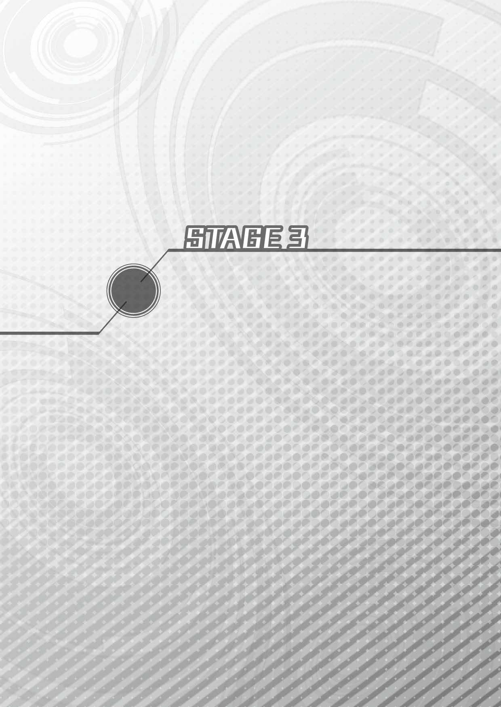
Ⅰ
「......とまぁ、ざっとこんな感じのジャングル編だったわけよ」
学園にある視聴覚室の大型スクリーンに映したスライドショーを閉じて、わたしは後ろを振り返った。
広い教室の真ん中ら辺には、毎度おなじみの姉チーム＋２の他、ネプギア、ユニちゃん、ロムちゃんラムちゃんの妹チームも一緒に座っている。
「ねぷねぷ、すごいですね。いつの間にこんなにいっぱい写真を撮ってたですか？」
感心しきりといった様子で、まずこんぱが大きな拍手。
まぁまぁこんぱくん、そう褒めないでくれたまえ。数百枚の写真と、臨場感あふれる解説による探検報告が素晴らしかったのはわかるけど、いやー、妹たちもいる前で褒められると照れちゃうなー。
チラッとネプギアの方を見てみると、
「あの最後の『ちゃんちゃん♪ 』っていうフェードアウトとか......明らかに飛行機の外から撮ってるよね、お姉ちゃん......。最初にジャングルに突入する時の写真も、なぜかお姉ちゃんの顔にピント合ってるし......」
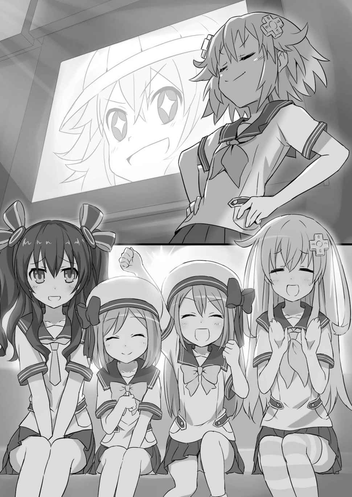
「しかも、ちょっとアオリ気味に演出されてましたよね......」
な、なぜ？ 姉の偉大な足跡を前にさぞ感動しているかと思いきや、ネプギアとその隣にいるユニちゃん、ともに引きつった笑みを浮かべちゃってるのはどうしてなのかな？
「えー、ダメ出し？ 面白くなかった？ ......先頭に立って進んでるはずの探検隊長になぜか前からカメラが寄るのは、シリーズじゃお約束の演出だよ？ 今度、ＤＶＤ貸してあげるから見てみてよ！」
「あ、いや、面白くないとかそういうことじゃなくてね......。どうやって撮ったのかな、不思議だなって、そっちの方が気になっちゃって......ねえ、ユニちゃん？」
「う、うん。そのせいで......えっと......ちょっとわざとらしくなっちゃってるような気がするって言うか......」
「そ、そんなことないってば！」
いくらノワールの妹とは言え、これは聞き捨てならないな！
ぷんすかぽんと、わたしは不当な言われように真っ向抗議の意を示したい。
「これはね、演出だよ演出！ 明らかに発泡スチロールで作ってるってわかる巨大岩が崖から落ちてきたりするのも、すべては視聴者を楽しませるための演出！ ......まぁ、今回は準備の時間がなくてそこまで仕込めなかったけども」
うん、そこら辺ちょっと心残りなんだよね。時間と状況が許せば、せっかくのジャングルだしピラニアに襲われるところも盛込みたかったと、反省も踏まえつつわたしが演出論を語っていると、
「......ねぷねぷ、自分で『仕込み』って言ってしまいましたわよ」
「語るに落ちるとはこのことね」
コラそこ、外野のベール＆ノワール！ つまんないツッコミを入れるんじゃなーい！
「ま、まぁまぁお姉ちゃん。そう熱くならずに、ね？ お姉ちゃんがわたしたちを楽しませようとして色々考えてくれたんだっていうのは、よーく伝わったから」
「そそ。そうですよネプテューヌさん。ほら、ロムとラムはすごい喜んで見てくれてたみたいですし。ね？ 面白かったわよね、ふたりとも？」
「うん。けっこードキドキしちゃった。ねー、ロムちゃん」
「...ドラゴンさんたち、病気治って良かった（にこっ）」
えらい！ ロムちゃんもラムちゃんも超いい子だなー。このありのままを受け取る素直な感性と言ったら！
「妹たちに思いっきり気を遣わせといてご満悦なんだから困ったもんね。......さ、探検報告とやらはもう終わりでしょ？ だったらどいてちょうだい」
と、せっかく人がいい気持ちでいるところに水を差すのは、言うまでもなく素直じゃない代表のノワール。
ちょっとはロムちゃんラムちゃんを見習った方がいいんじゃないのーと口を尖らせるわたしを、野良猫でもどっかやるみたいに映写機の前から追い払ったノワールは、
「たかだか経過報告に時間食っちゃったけど、とにかくジャングルの調査は無事に終わったわ。それで、残りなんだけど......。効率良く終わらせるために、悪いけどユニたちにも協力してもらって......」
なーんて、みんなを前に偉そうに仕切り始める。
と、
「おー、いやがったかお嬢ちゃんたち」
ノワールの演説を容赦なくぶった切ってバーンと乱暴にドアを開けて顔をのぞかせたのは、こないだからずっと学園に居着いているっぽいジャッジだった。
それにしても相変わらずインパクトあるって言うか、文字通り尖った顔してるねこの人。
しかも今日は服装もえらいことになってるじゃないの。
トンガリ顔の下は、なぜか大工さんみたいな法被 にサラシ巻き。ダボダボしたズボン（ガッシボッカとかそんな名前だっけ？）に地下足袋 という格好のジャッジが、がに股でズカズカと近付いてくる。
「な、何その格好は」
やたら目立つと言うか、変に似合っちゃってるその姿を見てわたしが聞くと、
「何ってこたねぇだろが。マジック・カンパニーは一応建設会社だぜおめぇ。こりゃ言わば働く男の正装ってヤツよ」
とか、ちょっとカッコつけたようにジャッジが答えた。
「それはいいけど、どーしてその正装とやらを着てるのか聞いてんの」
重ねてわたしは言う。
「学長に頼まれて、お嬢ちゃんたちのためにアレコレこさえてやってたんだよぉ」
「アレコレって？」
「細けぇ説明は学長から聞いてくれや。学長室で待ってんぜ。オレぁ使いっ走りだ。あの人にだけは逆らえねぇからな」
元ヤンキーらしく、ぶっきらぼうに開けっ放しのドアをアゴで指して言ってから、
「じゃ、伝えたぜぇ。オレみてぇなのと一緒に歩いてんのを他のダチに見られたら気まずいだろうからよ、先に消えるとするわ」
ジャッジはひらひらと手を振って視聴覚室を出て行っちゃった。
マジェコンヌ先生がお呼びっていうんじゃ行くしかないわけで、わたしたちもゾロゾロと席を立って学長室に向かうことになった。
時刻は夕方ちょい前。放課後だね。だから、帰り支度をした子やジャージに着替えてこれから部活って子たちと何度もすれ違う。
それは別にいいんだけど、
「ねぷねぷたち最近忙しそうだよねー。何してんの？ また誰かの頼み事？」
とかちょっと心配そうに聞かれちゃうのが気まずいんだよねー。
真っ正直に、「いやーちょっと世界のピンチを救う仕事があって」とか言ってみたこともあるんだけど、今ひとつキレのない冗談だと思われてあっさり流されちゃったり。
今日も今日とて何回かテキトーにこのあたりをごまかしてから、
「......部活かぁ。青春だね。いいね、ああいうのも」
ばいばーい、と去って行くクラスメートの背中を見ながらぽろっとつぶやくと、
「いいねって、ネプ子どこにも入部してないじゃない。毎日、基地へ行くか真っ直ぐ寮に帰るかだし。どっちにしろゲームしながらゴロゴロってのは変わらないし」
急に何を言い出すのやらと、あいちゃんが呆れ顔になる。
「いやまぁ、そう言われると身も蓋もないんだけど......そーじゃなくてさぁ」
口にしちゃった手前引っ込みもつかず、新しいことに挑戦してみるっていうのも悪くないかなー、みたいなことを言ってみる。
部活......部活かぁ、本当にそれもいいかもしれないなー。
新学期からお世話になっていいのかどうかわかんないけど、ちょっと真剣に考えてみようかなー。でも、努力！ 根性！ 忍耐！ みたいな体育会系は遠慮したい感じ？
「......部活......部活......ゲーム研究会？」
ぴこーんと閃いて、わたしは言った。
言うが早いか、「それじゃ今までと一緒でしょ！」と総ツッコミが飛んでくる。
そ、そりゃごもっとも。
なんて言ってるうちにもう学長室に着いちゃった。さてさて、次はどんなミッションがわたしたちを待ち受けているのやら。
「ま、部活のこととかは後で考えるとして、これだけ頑張ってるんだから、全部終わったら『これぞ学生の青春！』って感じのご褒美ぐらいおねだりしても罰当たらないよねー」
アハハ、と笑いながら学長室のドアを開けると、
「そうか。追試を受けてようやくお前も学生の本分に目覚めたというわけか。いいだろう、そこまでお望みなら、春休みには学生らしい勉強合宿でも用意してやろう」
いつもの大きなデスクの上で特務機関の司令官みたいに指を組み、じーっとこっちを見ているマジェコンヌ先生とばっちり目が合っちゃった。
「い、言ってないっす......」
「学生の青春って感じの褒美が欲しいんだろ？ 教職員棟だってのにばかでかい声で騒ぎやがって。......まぁいい。とりあえず全員座りな」
「いや、あのマジェコンヌ先生。勉強合宿っていうのはそのー」
「座りな」
......あ、はい。
Ⅱ
「早速だが、こちらの準備が整い次第お前たちには今すぐ天界に向かってもらうよ」
呪いの言葉にも等しい「勉強合宿」の四文字にわたしが頭を抱える中、マジェコンヌ先生は至極涼しい声で言った。
「既にマジックたちの手で、天界と地上を繋ぐ転送ゲートの生成装置を建設してある。全員、ファイナルハード号で速やかに天界に行って、地上管理システムの再起動に当たるように。......何か質問はあるかい？」
色々と唐突な展開にみんなが戸惑う中、まず手を上げたのはノワール。
「あの、まだパープルハートの剣......再起動キーを使用するためのデータ収集は終わっていませんが......」
うんうんと大きくうなずいたのは、ジャングルで苦労を分かち合った面々。マジェコンヌ先生はチラッとだけわたしたちの顔を見て、
「データは集まったよ」
事もなげに答える。
当然、わたしたちは驚く。顔を見合わせる。首を傾げる。エトセトラエトセトラ。
「アタタリ神の眷属とかいうドラゴンのウロコさ。一応あれもデータ収集の一環として調べてみたんだが......」
きょとーんとしたままのわたしたちに、マジェコンヌ先生は淡々と驚きの新事実を告げてきた。
マジェコンヌ先生が言うにはね、こういうことみたい。
ブランがお礼代わりにもらったあのウロコって、でっかい盾みたいな大きさだったの覚えてる？ 実はあれって、気が遠くなるぐらい長い長い時間をかけて岩のカケラやら土やら生き物の死骸やら、とにかく色んなモノがちょっとずつ積み重なって大きくなっていった物なんだってさ。
地層のようなものだってマジェコンヌ先生は言ってたけど、わたしのイメージとしてはお菓子のミルフィーユってあるよね？ ちょうどあんな感じかなとか。
で、その積み重なったモノを詳しく調べてみたところ、どうやらあいつってばジャングルに住み着くまでの間、世界中をあっちこっち移動してたことがわかったんだって。
つまり、あのでっかいウロコに残ってるアレコレを調べるだけで色んなデータが集まっちゃうってことらしい。
「私も専門家じゃないからそこまで詳しくはわからないけどね、大学部の教授連中が貴重な資料が手に入ったって狂喜乱舞してるとさ。お手柄だったな、ブラン」
珍しく穏やかな顔を見せて、マジェコンヌ先生がブランを褒めた。
一方、褒められた方のブランはと言えば、
「そうですか。小説のネタになりそうだから、後で資料をください」
喜んでいるんだかいないんだか、いつも通りのクールなお顔。
その代わりと言ったらなんだけど、大フィーバーなのはロムちゃんとラムちゃんで、
「...お姉ちゃん、すごいね」
「さーっすがー。わたしたちのお姉ちゃんがイチバンだいかつやーく！」
バンザイバンザイで姉の偉業を全力で称えている。
やー、かわいいねーホント。
そんなふたりを微笑ましく眺めながら、わたしは言った。
「しっかし、ラッキーだったってことだよねー。もしかして、アタタリ・ドラゴンってばわたしたちが何しにジャングルに来たのかわかってたってことなのかな」
まったく、親愛の印かなーぐらいに思ってたあのウロコにそんな価値があったなんて夢にも思わなかったよ。
「いやー、やっぱり主人公がパーティーに入ってると違うね。ここぞ！ っていうところで大きい引きがあるって言うか。うーん、わたしってば持ってる のかなー。うん、持ってるんだろうねこれは」
わたしのものは、わたしのもの。キミのものも、わたしのもの。......とまではさすがに言わないけど、これは絶対不変の主人公たるわたしがチームにいたからこその、オイシイ展開とは言えまいか。
「ね、ノワールもそう思うでしょ？」
「だとしたら、私へのあのヒドい仕打ちもネプテューヌのせいってことよね。アイエフのセリフじゃないけど、恨むわよ。末代まで祟るからね」
「いやそのりくつはおかしい」
「最初からあなたの理屈がおかしいのよ」
ノワールが怖い目でわたしを見た。しまった、話を振る相手を完全に間違えちゃったなこりゃ。
「えっと、とりあえず細かいツッコミは脇へ置いといて」
よいしょと箱を動かすジェスチャーでノワールの追及を華麗にスルーしてから、わたしは「はーい」と手を上げてマジェコンヌ先生に向き直った。
「それで、出発はいつしたらいいの？ そろそろ学期末でみんなソワソワしてきてる感じするし、できれば早い方がいいなーとか」
「ほう。そんなに春の勉強合宿が楽しみかい？」
「......その話も脇に置いといて」
よいしょ、よいしょっと。
「いつか、ねぷねぷの脇にあるらしい〝エア棚〟は音を立てて崩壊しそうですわね」
ちょっとベール、どかしてるそばからつまんないこと言わないでってば。
「とにかく、いつ行くの？ 行けるんだったら、ちゃっちゃと終わらせたいっていうのは本当なんだけどな。めんどくさいこと嫌いだし」
改めてマジェコンヌ先生に聞くと、先生は不意に立ち上がって言った。
「それはマジックたちがどれだけ頑張ってくれたかによるね。今から転送ゲートの動作テストだ」
言いながら、ファイナルハード号にわたしたちを案内した時と同じように、またわたしたちの質問は後回しとばかりにスタスタ歩いて行っちゃうマジェコンヌ先生だった。
「ほら、ついてきな」
セリフまで同じだよ。なんだか予算の都合で動画をケチっちゃったアニメみたい。
「バトルシーンはいい作画になるのかな？」
「ねぷねぷ、作画ってなんのお話です？」
「いやそのそれは......」
あう、この手のボケに真面目な顔で質問されると困っちゃうな。......えーと、仕方ない、これも脇に一旦置いて。
う......この調子だと、本当にいつか棚が崩壊しちゃうかも......。
Ⅲ
なんと言うことはない。マジェコンヌ先生がわたしたちを連れて行ったのは、あの悲しすぎる出撃シーンで一躍わたしたちの中だけで話題になったあの牧場だった。
プラネスタジアム何個分あるんだろうというだだっ広い空間は、アタタリ・ドラゴンと出会ったあの場所をちょっと思い出させる。
「見て見てロムちゃん！ 羊だよ、羊！ わたし餌あげよーっと」
「...わたしもわたしも（うずうず）」
相変わらずわたしたち以外に人の姿はなく、牧場はのどかそのもの。
夕暮れちょい手前の時間ってこともあり、風はちょっと制服一枚だと肌寒いかなーっていう感じ。ひやりと吹き抜けていくと、辺り一面に生い茂った緑の牧草がさやさやと鳴る。
「今思ったんだけどさー、牛とか羊とかからすればここってご飯天国なんだよね」
その牧草を引っこ抜いて、近寄ってきた何匹かの羊に食べさせている、ちびっ子ふたりの背中を眺めながらわたしが言うと、
「ご飯天国？」
傍らのネプギアがなんのこっちゃと聞き返してくる。
「だってそうじゃん。草って一口で言っても色々種類があるじゃない？ てことは、羊目線で見ればこの牧場全体がご馳走でできてるようなもんじゃないの。そりゃーニートにもなるし、肥え太りもするよね。羨ましい限りだよ」
「別に羊はニートしてるわけじゃないと思うけど......」
「やっぱさ、草によっては味とか食感とか違うのかな？」
「......羊目線はいいけど、唾飲み込みながら言うのやめようよ、お姉ちゃん」
ほら行こう。みんな待ってるよと、ネプギアはわたしの手を取ってから、羊と戯れるちびっ子たちにも「ふたりとも行くよー」と声をかけた。
ネプギアの呼びかけに反応したふたりが、
「羊さんばいばーい」
「...またね」
スカートの裾で手を払ってから駆け寄って来る頃には、他のみんなは緩やかな坂になっているところをせっせと登り、丘の上で立ち止まってわたしたちを待っている。
急げや急げと、なぜか四人横並びに手を繋いでわたしたちは坂を駆け上った。
「ごめん待った？」
わたしたちが走ってる間、ちょっとうつむくような感じで、足首のあたりまで伸びた牧草を軽く蹴ってみたりなんかしながら待っていたこんぱの肩を叩いて言うと、
「わたしも今来たところです」
ニコッと笑ってこんぱが答え、同時にあいちゃんがカクッとずっこけた。
「今来たところって何よ、今来たところって。一昔前のギャルゲーごっこしてないで、あっち見なさいあっち」
長いこと付き合ってきて、やっとこんぱもわたしのノリに合わせられるようになってきたかと感慨に浸る間もない。あいちゃんに両脇から頭を押さえられちゃうわたし。
コキッという割と鳴っちゃいけない系の音を首からさせながら、今上ってきたのと反対側の斜面を見下ろすと言うか見下ろさせられたところで驚いた。
周囲をぐるっと丘に囲まれて丼の底みたいになってる所に、のどかな牧場の風景とはまるでミスマッチなゴテゴテした何かが建っている。
「発射台だよお姉ちゃん！」
なんじゃこりゃーと声をあげたところに、わたし以上に興奮した様子のネプギアが思いっきり首元に抱きついてきて歓声を上げた。
「首はやめて。今、首はダメ」
「あそこに乗ってるのがファイナルハード号の本物だね！ わーすごい！」
抗議の目線をあいちゃんにバシバシと叩き付けつつ言ってみるも、メカメカしい物を前にしたネプギアに聞き入れてもらえるわけもなく。
「行こう！ もっと近くで見よう！」
今度は真っ先に斜面を駆け下りていくネプギアに腕を引っぱられて行くわたし。あ、ダメだもう。この子今、目の前のメカしか見えてないよ。
あわわ、走るのはいいけど、お願いだからもうちょっとゆっくり！ 転ぶ、転んじゃうよ！ ネプギア、聞いてる？ おーい、ネプギアちゃん。
「大丈夫ネプ子？ あの子、おとなしい顔して時々ハジけるわよね」
いやまったくごもっとも。
さすがにちょっと心配そうに言うあいちゃんの手も借りて、ほとんど両脇を持ち上げられるような格好になりつつ、わたしもネプギアと並んで発射台だっていうそれを見上げる。
でも、発射台ってよりはターンテーブルみたいに見えるんだけど。
ホールケーキで言うとスポンジの部分？ 乗っかってるファイナルハード号はチョコで作ったデコレーション細工じゃないけどさ。
で、そのファイナルハード号をお誕生日ロウソクよろしく取り囲む何本もの細長いポールの先っぽには、炎の代わりに天使の輪っかみたいなリングがひとつずつくっついていて、何やらゆっくりと回転している模様。
一体、誰がいつの間にこんな物を作ったのやらと視線を地面に戻すと、スーツ姿に黄色いヘルメットをかぶったマジックと、さっき見た大工さんスタイルのジャッジ、それから作業用の地味なジャンパーを着たトリックの三人がこっちにやって来るのが見えた。
「アレコレこさえてたって、これのこと？」
大きなホールケーキ型発射台（勝手に命名）と、相変わらずがに股でドカドカ歩くジャッジとを交互に指さし、ユニちゃんが目を丸くした。
「言ったろうが本業だって。なぁ、トリック？」
「うむ。幼女たちも天界に行くのなら、手は抜けん。建設会社の誇りに賭けて完璧な設計をしてやったぞ」
ふたりしてドーンと腕を組んでの胸を張ってので、ジャッジもトリックもご満悦。
マジックはと言えば、ヘルメットを脱いで軽く髪を整えてから、
「ご期待通りの仕上がりになっていると思います、マジェコンヌ先生」
深々と頭を下げてから言った。
「ご苦労だった。急がせて悪かったね」
発射台を団子になって見上げていたわたしたちをかき分けて、マジェコンヌ先生はマジックに何かを手渡した。
「工事の代金かな？」
「だったら、あんなカードなんかで渡さないわよ」
誰にってわけでもなくわたしが聞くと、妙に鋭い目つきでマジェコンヌ先生の手元をのぞき込んだあいちゃんが言う。
「クレジットカードかもしんないよ。......って、どしたのあいちゃん？ そんなマジな顔しちゃってさ」
「ネプ子は気にならないの？」
「何が？」
「何がって......」
焦れったそうにあいちゃんがわたしに向き直った時だった。
「早速、転送ゲート展開装置のテストに入る。お前たちも機体に乗り込みな」
マジェコンヌ先生が、パンと手を叩いて引き締まった声を出した。
それでなんとなく、わたしとあいちゃんの話もウヤムヤになっちゃって、わたしたちはマジェコンヌ先生に促されるまま、ファイナルハード号に乗り込んだ。
「な、なんでこんなに可愛らしい内装なのかな？」
「大きい飛行機だとは思ってたけど、中もずいぶん広いわね」
初めて乗り込んだわたしたちと同じように、機体の外と内側とのギャップにネプギアやユニちゃんが面食らう中、パイロットを勤めるあいちゃんがコックピットに座る。
タイミングを計ったように、
『準備はいいか？ まず、外の様子をモニターできるようにしな』
というマジェコンヌ先生の声がスピーカー越しに響き、「わかりました」と応じたあいちゃんが何やらスイッチとかを操作する音が続いた。
すると、コックピットの後ろ、わたしたちがいる可愛いリビングルームっぽいキャビンの壁に備え付けられていたモニターに、外の映像が映し出された。
映っているのは、そろそろ暮れかけてきた空。つまり、ファイナルハード号の真上。どっかにカメラがくっついてるんだろうね。
その後、またマジェコンヌ先生の声がして、コックピットのあいちゃんと発進の手順とかを細かく確認していく。
『では、これより転送ゲート展開のテストを始めるぞ』
最後にマジェコンヌ先生に代わってトリックが言い、
「いつでもどうぞ」
と、あいちゃんがお返事した。
さてさて、何が起きるのかなと身を乗り出してわたしたちはモニターに注目。
と、まずは空に向かって何本ものレーザー光線みたいなのが真っ直ぐ伸びていった。
これってあれかな？ ロウソクの先っぽについてた輪っかから発射されたやつ？
そんなことを考えている間に、レーザー光線が伸びていった空の一角に不思議な変化が起き始める。
それまで普通に見えていた空が渦を巻くような感じで歪み始め、夕暮れと相まってちょっとジャンクな色合いのぐるぐるキャンディーみたいな感じになってきちゃった。
おお～っ！ とキャビンで歓声が上がる中、空に浮かんだぐるぐるキャンディーはどんどん大きくなっていき、そのうち真ん中の方から虹色の光がキャンディーの縁にあたる部分に向かって広がっていく。
「あの中にファイナルハード号を突入させれば、天界に行ける......ということですの？」
モニターに映る虹色渦巻きを指さしてベールが言い、わたしとネプギアを見た。
うん、でもそんなに期待感のこもった目で見られても困っちゃうなー。ぶっちゃけ、わたしに地上と天界をどう繋いでるのかなんて仕組みわかりっこない上に、こんな大がかりな仕掛け見たこともない。
「どうなのネプギア？ わたしが記憶喪失になる前は、こんな方法使わなかったよね？」
「ううん。規模は大きいけど私たちが普段使う転送装置と原理は同じだと思うよ。位相観測式チャンバーで圧縮した次元変転粒子を三軸オーバルで空中に固定してから......」
あばばばば。
ボーン！ 頭ボーン！ お願いしますネプギア様、どうかその辺でご勘弁を......。
またやっちゃった。ネプギアにこの手の話をさせると止まらなくなっちゃうんだった。
「じゃあ、あの黒い点々もその粒子か何かの影響なのかしら」
と、そんなネプギアを遮るように、同じくモニターを見つめていたブランが変なことを言い出した。
「黒い点々？」
んー？ なんのこと？ と、わたしはもう一度モニターを見つめる。
あー。確かに虹色渦巻きのあっちこっちに、ブランが言うように黒い点々みたいなのがあるような。しかも見ている間に数が増えていってるような。でも、小さすぎてよくわかんないなー。
「なんだろう？ すみませんアイエフさん、ズームとかってできますか？」
コックピットに続く一枚ドアは、今は開けっ放しになっている。首をめぐらしたネプギアがあいちゃんに言うと、
「できるわよ。......はい」
あっさり答えたあいちゃんが、恐らく機体の外にくっついてるカメラを操作して思いっきり寄ってくれる。
そうして拡大された黒い点々がモニターに映るのと、
「お姉ちゃん！」
「ネプギア！」
ネプギアとわたしが叫ぶのとがほぼ同時だった。
わたしは思わずその場で跳び上がっちゃったぐらい。
あいちゃんが拡大してくれた黒い点々......それは、前に天界でわたしとネプギアを酷い目に遭わせてくれた連中だった。
黒いボールみたいな体。その体から生えている足にレーザー砲やらビームサーベルやらミサイルランチャーやらの物騒極まりない武器をくっつけて、真っ赤な目玉に見えるセンサーカメラがギョロギョロと......。
これはもう、見間違えようがない。
『ガーディロイドだ！』
わたしとネプギアは、同時に叫んでいた。
Ⅳ
落ちてくる、落ちてくる、落ちてくるよ！
相変わらずワラワラワラウラワラと群れになってガーディロイドたちが落ちてくる。
あいつらの相手するのって、本当に大変なんだよね。一体ずつだと大したことないんだけど、とにかく数の暴力で押してくるの。
更に厄介なのが、倒したやつにくっついてる武器とかを無事なやつがもぎ取って、自分にくっつけちゃうところ。武器を潰そうが本体を潰そうが、仲間の残骸から使える物を拾い集めてパワーアップしちゃうもんだからキリがなくて......。
蘇る主人公にあるまじき敗北の記憶に、あわわとうろたえていると、
「放っておくとガーディロイドは際限なく増えていきます！ 早くテストを中止してゲートを閉じてください！」
ダッとコックピットに駆け込んだネプギアが、通信機に向かって叩き付けるように言った。
『......いや、ゲートは閉めない』
ところが、通信機の向こう側にいるマジェコンヌ先生は、ネプギアの必死な訴えに対して信じられない返事をしてきた。
閉じないって先生......閉じないでどーするの!?
「聞いてマジェコンヌ先生！ あいつらは......」
たまらずわたしもコックピットに駆け込み、ネプギアに代わって通信機に飛びついた。
『わかってるよ！ お前たちこそ聞きな！』
と、わたしが言い終わるよりも早くマジェコンヌ先生の一喝が機内に響き渡る。
『あの無人兵器が、天界でお前とネプギアを追い詰めた奴らだって言うんだろ？ 詳しい事情はわからないが、どうも先手を取られたようだね』
「ようだねって、落ち着いてる場合じゃないよ！ だったら尚更......」
『うるさいね、ぶっつけ本番で行くからさっさと準備をしろと言ってるんだ』
ぶ、ぶっつけ本番!?
てことは、このまま今すぐ天界に行くってこと？
ぎょっとしてわたしが通信機から顔を離すと、
『露払 いは任せてもらおう。迷惑をかけた、せめてもの罪滅ぼしだ』
『工事用だが、今度のパワードスーツはお嬢ちゃんたちと戦った時のハリボテとは一味も二味も違うぜぇ！』
マジェコンヌ先生に代わって、マジックとジャッジの声が。
「ねぷねぷ！ 見てくださいです！ お外でマジックさんとジャッジさんが黒いのと戦ってるです！」
あーもう忙しい。何がどうなってるのよ！
キャビンに取って返してモニターを見れば、確かにこんぱの言うとおりコスチューム姿のマジックと、あの超ゴッテゴテのパワードスーツ（色は黒と黄色の工事用重機カラーになってる）を着込んだジャッジとが、ファイナルハード号に群がろうとしているガーディロイドたちをバッタバッタと薙ぎ倒している。
......つ、強い（確信）。
もしかしたら、わたしたちと戦った時より全然強いんじゃないの？
「確かマジックも女神候補科卒業生だったはずよ。問題児だったけど、強さは同期の中でもずば抜けてたって」
どこで仕入れた情報なのか、モニターに映るマジックの戦いぶりに魅入っちゃってるノワールが、ゴクリと喉を鳴らして言った。
確かにマジックの戦いぶりは強烈のひと言。
大鎌が武器なのは正気に戻っても変わらないみたいで、見るからに扱いづらそうに見えるそれをバトントワリングでもするように、自由自在にぶんぶか振り回しながら次々とガーディロイドを真っ二つにしていく。
ジャッジの方も負けてない。わたしたちと戦った時はすぐにオーバーヒートしちゃってたポンコツとは、形こそ一緒だけど機動性がまるで別物。本当に工事用なの？ 絶対、趣味で魔改造しちゃってるでしょ、それ。
『向こうの状況はこっちの想像以上に深刻かもしれない。開け閉めする度にあんなのに出て来られちゃたまらないんだよ。わかったら行くんだ。こっちはこっちでなんとかする』
そうしてマジックとジャッジが時間稼ぎをしている間に、再びマジェコンヌ先生がわたしたちみんなに聞かせるように言った。
瞬間、数に任せてマジックとジャッジの防衛線を抜けてきたガーディロイドが一斉に攻撃を放つ。そのうち何発かが発射台をかすめ、ファイナルハード号もグラグラと揺れた。
「これ、次は危ないわよ。ネプギア！ ネプテューヌさん！」
言われなくてもわかってるよ、ユニちゃん。あいつらのことは、もう嫌ってほどよく知ってる。
あいつら、目に付くものは人でも物でもなんでもぶっ壊して回ればいいとしか考えてないんだから。
わたしの脳裏に、天界でガーディロイドと戦った時のいやーな思い出がまざまざと蘇ってくる。
このままボヤボヤしてたら、ファイナルハード号どころじゃない。牧場と牛さんも羊さんも......何も知らないままいつもと変わらない毎日を楽しく過ごしてる学園のみんなもそのうち......。
「ダメ......だよねぇ。それは、ちょっと見過ごせないかな」
わたしは小さく口の中でつぶやいた。
うん、ダメ。わたしの大好きな学園に手を出すことは絶対絶対許さないんだから。
「大ボス、倒しに行っちゃう？」
覚悟を決めて、今度はハッキリとみんなにも聞こえるように言う。
モニターから目を離して振り返ると、みんなじっとわたしの目を見つめていた。
「そんで、春休みには『ホントあの時は大変だったね』って笑いながら、みんなで思いっきり遊ぶ！ ......ね、マジェコンヌ先生、そのぐらいのご褒美はあってもいいでしょ？」
みんな気持ちは同じだ。
『ふん、そういういっちょ前の要求は、ちゃんとやり遂げてからするんだね』
こっちから表情は見えないけど、わたしの言葉にマジェコンヌ先生が笑うのがわかった。
ようし、決まり！ このまま一気に天界に乗り込んで、悪い子はみーんなまとめてねっぷねぷにしてやんよ！
「あいちゃん、発進準備よろしく！」
「アンタがごちゃごちゃ言ってる間に、とっくに終わってるわよ」
ぽーんとあいちゃんの肩を叩いてわたしが言うと、さっすがあいちゃん！ コンマ一秒で気持ちのいいお返事。
「それじゃ行くわよ！ ファイナルハード号、リフトオーバー！」
単に「発進」でいいところをちょいと捻って、あいちゃんはダブルスティックを左右に開いた。
『最後の仕上げだ。ゲートを完全に解放するぞ』
ファイナルハード号がホールケーキ型発射台を離れたところで通信がトリックに切り替わり、それと同時にロウソク型ポールから伸びるレーザーが輝きを増した。
『ようし、後はそのまま加速してゲートに突っ込め。ものの一秒でもうそこは天界だ』
「わかったわ。エンジン出力上昇！ 加速するわよ！」
巧みにダブルスティックを操作して、あいちゃんがファイナルハード号の姿勢を安定させ、空の上で渦巻くゲートに向かって真っ直ぐに機体を持ち上げていく。
その間にも、ガーディロイドはマジックとジャッジの連係攻撃で次々と撃墜され、一体たりともファイナルハード号には近付いてこない。
悠々 とゲートまで到着したところで、
「マジェコンヌ先生」
そこで一度機体を止めたあいちゃんが通信機に呼びかけた。
『......なんだ？』
「イストワール様に何か伝言があれば伝えますけど？」
ん？ あいちゃん、なんでここでいーすんの名前が？
わたしにはサッパリなんだけど、どうもあいちゃんとマジェコンヌ先生の間にはそれで何か通じるものがあったみたいで、
『......いずれ時が来たらまた会おう』
やや間があって、マジェコンヌ先生が短く答えた。
「必ず伝えます」
あいちゃんも同じくひと言だけ言ってから、
「突入！」
そのやり取りを合図にするみたいに、ファイナルハード号を目の前に迫った虹色渦巻きの中に突っ込ませた。
瞬間、ふわっと全身を波にさらわれるみたいな浮遊感が包み込み、それが去った時にはもうわたしたちは違う空 にいた。
さっきまでの夕暮れ空じゃない。どこまでも青く、クリアな空だ。
わたしとネプギアにとっては良く見慣れた、天界の空。
「ここが天界？」
操縦席の背にしがみついていたネプギアと、そのネプギアにしがみついていたわたしに向かって、あいちゃんが言った。
「天界って言うからには、空の上にあるんだとは思っていたけど......単にそういうわけでもないような」
「空の色が真っ青ですけれど、太陽がどこにも見当たりませんわ」
「雲もないわね」
と、すぐ後ろからノワール、ベール、ブランの声も。
何なにみんな、いつの間にかシートベルト外しちゃって。びっくりするなぁ。こんぱと妹ちゃんたちほっぽって、お姉さんばっかりどうしたってのさ。
「ネプギアちゃん、説明してくださいます？」
って、無視しないでよもう！
「天界は、地上の空......っていうのも変な言い方ですけど、とにかくそこと宇宙との狭間にあって、普段は特殊な障壁 で隠されているんだそうです。私もいーすんさんから前にちょっと聞いただけなんですけど」
ネプギアもわたしを差し置いてさらっと答えてるんじゃなーい。
......あ、でもそうだったんだ。わたしも今まで単に空の上にあるんだと思ってたわ。
そっか、前にわたしが地上に落っこちちゃった時は、その障壁っていうのをいーすんが消してたんだね。......あの時は、とにかくガーディロイドたちを追い出すので精一杯だったからなぁ。
「天界においていわゆる陸地は、わかりやすく言えば〝浮遊大陸〟って感じなのがいくつかあって......あ、見えてきました。前に見えるあれです」
説明を続けるネプギアが、真っ直ぐ前を指さす。
「わ、わたしも見たいです！」
「わたしもー！ わたしもー！ 見せてー！」
「...見せて（どきどき）」
「あ、ちょっと！ ずるいわよアタシだけのけ者で！」
あーあ、みんなこっち来ちゃったよ。てか、これだとさすがに狭すぎ！
「あいちゃん、カメラカメラ！ いつまでも上に向けてないで前撮って！ 後ろのモニターにも映してあげて！」
後ろから押しかけてきたみんなとネプギアの背中に挟まれ窒息しかかって、わたしは悲鳴に近い声を出す。
「あ、ごめんごめん。はい、映したわよ」
「だって！ はいみんな戻った戻った！ このままじゃわたし、お煎餅 みたいにぺっちゃんこだよ！」
言って、ネプギアをガイド役としてコックピットに残して、わたしはえいやっとみんなを後ろのキャビンに押し戻す。
はーもう、大ボス戦の前に仲間に挟まれて圧死とか、そんな主人公見たことないよ。
ぷはーっと深呼吸。ぎゅうぎゅうに押されて空っぽになっていた肺に空気を入れ直したところで、わたしもモニターに目をやる。
そこに映っているのは真っ青な空にぽつんと浮かんでいる、大陸って言うよりネプギアたちがいた島に近いイメージの陸地がカメラで拡大されたもの。
で、その陸地の真ん中に、ずどーんと地上のプラネタワーよろしく建っているのが、
「あれがわたしとネプギアが住んでたとこ」
その名も、『Ｖ・サー・タワー』っていうんだよ。......確か、ね。
「紫色にキラキラ光ってきれいです。アメジストでできてるみたいです」
うん、わたしも外から見るのはずいぶん久しぶりだけど、確かにきれいだよね。
あの中にわたしとネプギアの家もあって、いーすんもいて、そんでもって地上を管理するシステムもある......はず。
「ここからだとまだ見えないんですが、反対側にもうひとつ、黒いタワーが建っているんです。そっちは、『Ｈｉ・サー・タワー』って呼ばれてて、そっちの方に問題の暴走しちゃったサブシステムがあるんです」
わたしの説明を受ける形で、コックピットのネプギアが続けた。
「なるほど。そっちのＨｉ・サー・タワーからあのガーディロイドがいっぱいあふれ出しちゃって困ったことになってると」
そこにかぶせるように、あいちゃんが言った。
「......あんな風に」
はい？ あんな風って、どんな風？
それは、こんな風だった。
あいちゃんがカメラを更にズームさせると、Ｖ・サー・タワーの左右を回り込むように、真っ黒い雲みたいなのがぞわわーっとこっちに......。
もしかして、あの雲全部がガーディロイドってこと......なの？
「あ、これヤバい展開だ」
あんまり現実味のない光景だったもんで、わたしが思わず他人事みたいに言っちゃうと、
「撃ってきましたわよ！」
わたしへのツッコミにしては過激すぎる攻撃が、黒雲の中から一斉に！
「緊急回避！」
あいちゃんが叫んで、ファイナルハード号を右へ急旋回させた。それでキャビンはもう、上を下への大騒ぎになっちゃった。
「なんて数よ！ ネプテューヌもネプギアも、よくあんなの相手にしてたわね！」
ヒステリックにノワールが叫べば、
「あの数が地上に向かったら一大事ですわ！」
ベールもめくれあがったスカートを手で押さえて、珍しく大声を出す。
「ゲートはとっくに閉じてるわ。狙いは、わたしたちよ」
悲鳴を上げる双子ちゃんをしっかり両腕で抱きかかえたブランは、いつもの調子。
「アイエフさん、あれを全部相手にするのは無理です！」
ネプギアの声も上擦っている。でも、ここで一番大変なのはあいちゃん。
「だったら！ どうしろって！ いうのよ！」
右へ左へ上へ下へ！ 斜めもね！ っと、必死に猛攻撃を避けながら、さすがのあいちゃんも余裕ゼロ。
「な、なんとかＶ・サー・タワーまで近付いてくださいぃ！ め、目には見えないですけど、いーすんさんがっ！ タワー全体に防御フィールドを！」
「防御フィールド!? 」
「お、お姉ちゃんが！ 行方不明になってからは！ そ、それでどうにか攻撃を防いで......ったあい！ 舌噛んじゃいましたぁ」
「簡単に言ってくれるわねぇ！」
ぐおん、ともう一度ファイナルハード号が急旋回。左に流れてモニターから外れていたＶ・サー・タワーの姿が、また画面の中央に戻ってくる。
ただし、さっきまでとは違って黒い壁の向こう側に先っぽがちょろっと見えてるだけ。
......と、いうことは？
「ええええ～っ!? あいちゃん、突っ込むつもりなのぉ!? 」
ガーディロイドたちの大部分は、タワーの姿を隠すようにわたしたちの真っ正面に展開し終わっている。
「泣き言を言わない！ ネプギア、隣に座ってファイヤーコントロールをお願い！ 他は......私を信じて座ってなさい！」
あいちゃんカッコイイ！
カッコイイ......けど......え？ ほんと？ マジで？
「いいじゃない、一世一代の見せ場だわ。......イストワール記念学園に吹く一陣の風に相応しい舞台ってやつよ」
あ、マジだ。
あいちゃん、やる気だ。
「腕が鳴るわ。......みんな、さっきのネプギアみたいに舌噛んじゃわないようにね！ 行くわよおおっ！」
行っちゃうんだ......あああああぁぁぁぁぁっ!!
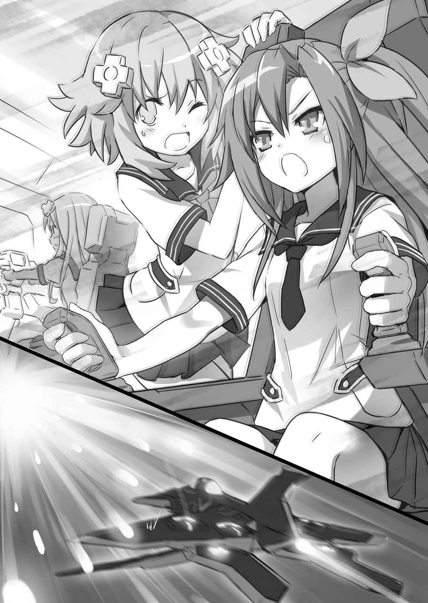
嘘偽りなく、掛け値なしに、どこまでも！ 尾を引くわたしの悲鳴を引きずって、あいちゃんはファイナルハード号をガーディロイドの雲の中へと突入させていった。
Ⅰ
花火かな？
それとも、万華鏡か何かかな？
いいえ、弾幕 ってやつです。
全然関係ないところで眺めてるだけなら、一種幻想的でキレイとすら思えるパターンを形作っているのが、一発でも直撃すれば大ダメージか即ゲームオーバーかっていう高エネルギー弾だったりミサイルだったりビームマシンガンだったり......あー、キリがない！
その一発一発にいわゆる「死ぬがよいわ」的な殺意と言うか、何がなんでもわたしたちを派手に散らせてやんよっていう執念じみたものを乗せて、空いっぱい目いっぱいお腹いっぱいに広がる死のキカガクモヨウ！
その真っ直中に、わたしたちを乗せたファイナルハード号はいた。
「わーん！ あいちゃん、なんとかしてよー！ 助けてケローッ！」
「カエルは黙ってなさい！」
「ローリング！ ローリングバリアでひとつ！」
「そんな機能はついてない......わよっ！」
わよっ！ に合わせてファイナルハード号の機体が大きく右に傾いた。シートベルト締めてキャビンの座席にしっかり括り付けられてても、お腹の中がぐるんと回るような気持ち悪さが何度も何度も襲ってくる。
これを体験しちゃったらもう、並みのジェットコースターなんか子供だまし過ぎてあくびが出ちゃうかも......なんてことを頭の隅っこで考えていると、コックピットの窓スレスレのところを真っ赤な閃光が走り抜けていく。う、うひーっ！
「このこの！ 当たって！」
あいちゃんに武器の操作を任されたネプギアが、機首に装備されてるビーム砲を手当たり次第に撃ちまくった。
もう何十機と叩き落としてるはずなんだけど、焼け石に水もいいとこ。
こっちが一発撃つ間に、十倍返し百倍返しで反撃してくるんだもん、たまったもんじゃないよ！
って言ってるうちにほらまた来たぁっ！
大きい缶をさ、ていっと蹴っ飛ばしたら中にみっちり詰まっていたキャンディーがどばーっとぶちまけられちゃうみたいに、色とりどりの弾が！ ビームが！
それでも、あいちゃんは絶妙な力加減で二本のスティックを巧みに操って、避ける、避ける、避け......たぁっ！ よおおおっし！ よっし！
この短時間で、あいちゃんは完全に〝覚醒モード〟に入った感じがするね。
多分、今のあいちゃんの目を前からのぞきこむと、瞳の奥でパリーンってなんか弾けて、ハイライトが消える演出が入ってるに違いない。ここからじゃ確かめようもないけど。
「まったく！ ナンヤネンタウンの！ 体感ゲームより！ しんどいっての！」
セリフにくっつく「！」マークひとつごとに、あいちゃん操るファイナルハード号は、上がる、下がる、曲がる、宙返り！
それはともかく！ ナンヤネンタウンって！ なんですかーっ！
「私が！ 育った！ ブクロウシティーに！ ある！ テーマパークぅぅっ！」
あっ！ 思い出した！ 餃子コロシアムが！ 有名なとこだ！
「そう！ 昔！ 友だちの！ オトメちゃんって子と！ しょっちゅう！ 行ってた！」
そうなんだ！ そう言えば！ ブクロウシティーって！ 乙女ゲーの！ 聖地でも！ あるんだよねぇ!?
「あら！ よくご存知......でええええいっ！」
ぐるぐるぐるぐるぐるううううっ！
で、出たーっ！
奇跡の避けテク、スーパートルネードスパイラルマニューバーだああっ！（たった今この場で命名）
獲物を絡め取ろうとする蜘蛛の巣のような弾幕を、針の穴を通す正確さですり抜けた次、わたしたちを消し炭にできるなら味方何百体を巻き込もうが構うもんかって感じの極太レーザーが奥から迫るのを、機体を鋭く錐 もみさせて薄紙一枚のところで避ける！
そのままエンジン全開！ 一瞬でぽっかりと穴が空いたようになった一角に機体がファイナルハード号が突っ込んでいく。
そこが、先の見えない弾幕地獄の出口だった。
Ｑ・神はいると思いますか？ Ａ・今、戦闘機操縦してる。
うん、まさしく神業というに相応しかった。
往年のゲーセン小僧や、ゲーム史に名を残す名人たちも舌を巻いちゃうに違いない超絶スティック捌きで、ついにあいちゃんは波状攻撃に次ぐ波状攻撃を一発も食らうことなく見事に切り抜けちゃった。
気付けば、ガーディロイドの黒雲に隠れちゃってたＶ・サー・タワーはもう目の前。
「ど、どんなもんですかってのよ。蜂でも超能力者でも薔薇 軍団でも今の私は止められないわよ！」
大仕事をやり遂げてテンション上がっちゃってるのか、ちょっと意味不明なことを言いつつ、あいちゃんは珍しく派手なガッツポーズをキメた。
と、その時、
『ファイナルハード号、聞こえますか』
ピンチを切り抜け、一瞬脱力しかかったわたしたちの耳を、通信機から聞こえてきた声が打った。その声は......もしかして、もしかしなくても、いーすん？
『こちらも手一杯だったもので、援護ができずすみませんでした。これから誘導ビーコンを出しますから、タワー内に着陸してください』
やっぱりいーすんだ。いーすんが、わたしたちに気付いてくれたんだ！ ......って、あれだけ派手にやらかせば誰でも気付くよね。
そのいーすんの声には緊張感が滲んでいる。それで、わたしたちももう一回気を引き締め直した。まだまだ浮かれてる場合じゃない。
「ビーコンでもベーコンでもいいから急いでいーすん！ せっかくあいちゃんが命がけで突破してくれたのに、後ろから撃たれてオダブツなんて嫌だよわたし！」
ここを乗り切れば久々にいーすんと会えるってことでこみ上げてくる懐かしさはあるけど、今はあいさつは後回し。全身まんべんなくシェイクされちゃってフラッフラなのをこらえつつ、わたしはコックピットの通信機に届けと大声を張り上げた。
そんなわたしの声に応えて、今や視界いっぱいにそびえ立つＶ・サー・タワーの真ん中あたりがパカッと開き、ファイナルハード号を誘導するように光のレールみたいなのが伸びてきた。
『ガーディロイドたちが反転してきます。そう長くは防御フィールドを解除していられません。急いでください！』
切羽詰まったいーすんの物言いに、
「了解！」
一度手の汗をぬぐったあいちゃんが、ダブルスティックをつかみ直す。
「ラストスパート行くわよ！ しっかりつかまってなさい！」
ファイナルハード号が加速した。
同時に、切り抜けたと思った弾幕の嵐が今度は後ろから襲いかかってくる。
生きた心地がしないってのは、このことだよね。今はただ、逃げろや逃げろ！
二～三発、危ないのをお尻や翼に食らいながらも、ファイナルハード号の頑丈さにも助けられてあいちゃんは本当に最後までやりきった。
本格的にまたガーディロイドが殺到してくるギリギリのところで、タワー内部に機体を滑り込ませる。
「いーすん！ 閉めて、閉めて！」
わたしが頼むまでもなく、すぐにまた防御フィールドが作動したみたいで、勢い余ったガーディロイドが何体かタワーの手前で弾き飛ばされる音がした。
あ、危なかったぁ......。
『お疲れ様でした。機体は後ほど余裕ができ次第こちらで整備しますので、まずは私の所までお越しいただけますか？ ネプテューヌさん、ネプギアさん、すみませんが皆さんをご案内してください』
やれやれ、休む間もなしかぁ。
ま、外があんなことになってるんじゃそれもしょうがない。
「あいちゃん、立てる？ 大丈夫？」
極限の緊張状態から解き放たれ、ずるずるとシートを滑り落ちるように崩れるあいちゃんにわたしは駆け寄った。
「最後に錐もみかけて突破した時は、一瞬冥界の門が見えかけたけど......大丈夫よ。でも、次にまた同じことやれって言われたらゴメンだわね」
「次なんかないよ。これが最初で最後。だって、後はわたしがズバーンとカッコよく悪の親玉にトドメを刺してハッピーエンドだかんね！」
「......だといいけど」
ふっと笑って、あいちゃんはわたしが差し伸べた手を取る。
汗まみれで、がっちがちに強ばっちゃってるあいちゃんの手。みんなを無事にここまで運んでくれた神の手を、わたしもしっかりと握りかえして言った。
Ⅱ
「あー、まだ頭がくらくらするわ。ユニは大丈夫？」
「あ、あんまり大丈夫じゃないかも」
姉妹でいつでも強気が売りのノワールとユニちゃんが、揃ってグロッキーになっちゃってるんだから、さっきの強行突破は相当しんどかったってことを改めて感じるよね。
いやー、よく無事だったよね。ほんと。
「ふたりとも、冷え冷えシートを持って来たです。おでことかに貼ると気分がすっきりするですよ」
そんなノワ・ユニ姉妹も含め、ヘロヘロになっちゃってるみんなにこんぱが冷え冷えシートを配って回っている。
てか、こんぱ自身は意外に元気なんだよねぇ。ああいうの、一番弱そうな気がするのに。
「ジェットコースターみたいだったねー！ ロムちゃん！」
「...ドキドキしちゃった」
元気と言えば、ロムちゃんラムちゃんのちびっ子組も元気だ。
多分、こっちはあんまりあの状況を深刻に考えてなかったからだと思うけど......まあそれでも、
「お願い。今、近くで大声出さないで」
こんぱにもらった冷え冷えシートを、おでこだけでなく首の後ろにも貼ってぐったりしてるブランみたいになられちゃうよりはいい。
「はい。ベールさんとあいちゃんもどうぞです」
「ありがとうございます、コンパさん。......ああ気持ちいい。あとは、熱いお茶でもいただければ言うことないのですけど、贅沢は言えませんわね」
「私は冷たいもののがいいわ。今頃になって、喉がカラッカラ。レモンスカッシュとかあれば最高なんだけどね」
あー飲み物いいね。わたしもシュワッとコーラかなんかでリフレッシュしたい気分。
「飲み物あると思うよ。大丈夫、ちょーっと待ってて」
さすがにこんぱばかりにみんなのお世話を任せて、わたしだけボケっとしてるのも気が引けるし、ちょっといいとこ見せちゃおうかな。
なんたって、ここはわたしとネプギアにとっては家みたいなもんだし。ひとつ、はやりの「おもてなし」の精神ってやつで！
あ、そうそう。家で思い出したけど、言い忘れてたね。
わたしたちは今、Ｖ・サー・タワーの上層階にある、誰が言い出したんだか「スカイラウンジ」って呼んでる所にいる。
床と天井以外は全面ガラス張り（......本当はガラスじゃない物質らしいけど）、丸いお部屋のぐるっと一周、タワーのある浮遊大陸の景色を大パノラマで楽しめる目玉スポット。
ラウンジって言うぐらいだし、元々タワーに来たお客さん用の場所だから、確か冷蔵庫とかお茶セットとかあるカウンターを呼び出せたような......。
タワーの設備は、ほとんど全部Ｎギアを通じて操作できる。えーとどうやったかな。確かこれをこうして......ほい！
わたしがＮギアをちょちょいといじると、部屋の真ん中の床がウィーンと開いて、下からスツールも一緒になった円形のバーカウンターがずずいとせり上がってくる。
「おお！ ちゃんと動いた！ わたし、やるう！」
「あら、おしゃれなバーカウンターじゃない。ジュースにコーラ、お茶もあるわ」
「あ、お酒はないからね」
「いらないわよ。未成年は、お酒を飲んじゃいけないんだから。......それより、ちゃんと動いたって何よ。ネプテューヌってば、自分の家のことも自信ないの？」
「いやー、実はさ......」
と、ノワールの言葉にわたしがほっぺをかくのにはワケがある。
このスカイラウンジでお客さんをおもてなしなんて言っても、わたしが知ってる限りではもうずーっと長い間......ヘタしたら何十年もお客さんなんて来てないんだよね。今ここにいるみんなが、超久々のお客様。
でも、律儀 ないーすんは、そんな場所でもちゃーんとメンテナンスを欠かしていなかったみたい。さすがだわ。
みんなにスツールに座ってもらって、それぞれご希望の飲み物を出してあげながら、わたしがそんな話をすると、
「......あの、ねぷねぷ。ちょっとうかがってもよろしくて？」
コクン、と緑茶を一口飲んで唇を湿らせてからベールが聞いてきた。
「前から気になっていましたの。わたくしたち、天界、天界と簡単に言っていますけど、ここは実際どういう場所ですの？ それと、ファイナルハード号を降りてからこちらに案内していただく間、どなたともお会いしていないというのも気になりますわ。もしかして、天界にはねぷねぷとネプギアちゃん、それにイストワール様しかいらっしゃらないとか？」
「ず、ずいぶん一気に喋ったね」
「真面目に聞いているんですから、茶化さないでくださいまし」
わあ、ごめんごめん。そんなつもりじゃなかったんだってば。
いや、一気に聞かれちゃうとどこから話せばいいのかなーって。
どうもベールの質問は、みんなの質問でもあったみたいで、一斉に視線がわたしに集まるのがわかった。
「えーとね、それはね......」
本当は、こういうのはネプギアにでも任せておきたいんだけど、どういうわけだか今ここにいないし......仕方ない。
長くなるよと前置きしてわたしが口を開きかけたその時だった。
「そのご質問には私からお答えしましょう」
まったくもってナイスタイミングで聞こえてきたのは、いーすんの声。みんなの視線が、またまた一斉にわたしからそれた。
外の景色見放題な一枚窓がぐるっと繋がる中、そこだけ長方形に切り取ったように見える出入り口に姿を現したのは、誰あろういーすん。と、ネプギアも？
すたすた歩いてくるネプギアと並び、いーすんは開いた本の上にちょこんと座ってるっていうわたしにとっては見慣れたスタイルで、ふよふよと空中を飛んでこっちへと近付いてくる。
「あ、あなたがイストワール様......ですか？」
「ほ、本物なのよね？」
そうして初めて間近に見るホンモノいーすんの姿に、ノワールとあいちゃんがゴクリと息を呑むのがわかった。
確かいーすんってば、地上では偉い神様みたいに思われてるんだっけ？ アタタリ神みたいな？
そう言えば、記憶喪失のまま学園に入学した時、学科の理念だか残念だかを無理やり暗記させられたことがあったけど、そんなようなこと書いてあったなぁ。
でも、実際のいーすんはいーすん。神様でもなんでもないことは、わたしもネプギアもよーく知ってるから、
「まぁまぁそんな固くならずに」
ピシッと背筋伸びちゃったあいちゃんとノワールの肩を揉み揉みしてわたしは言った。
いーすんも、
「どうかそんなに畏まらないでください。前にも言いましたが、私はそんなに大層な存在じゃありません。このＶ・サー・タワーの中枢である地上の気候管理システムの自律型端末......簡単に言えば、意思があってお話ができるＡＩみたいなものですから」
みんなの緊張をほぐすように、にこっと笑って言う。
「は、はぁ......」
「それはそれで、やっぱり凄い方のような......」
納得したんだかしてないんだか。微妙な表情であいちゃんとノワールはうなずく。
ま、これはお互いお話ししてるうちに慣れてくるんじゃないかな。
というわけで、こっちはちょっと置いとくとして、
「ネプギアもいーすんと一緒だったんだね。どこ行っちゃったのかと思ったよ」
わたしはネプギアの方に声を掛けた。
と、ネプギアはなぜか、
「どこ行っちゃったじゃないよお姉ちゃん。お姉ちゃんってば、一番大事なもの忘れちゃってるんだもん」
呆れ笑いで言う。
「大事なもの？」
「パープルハートの剣、再起動キーだよ。ファイナルハード号の中に積みっぱなしだったから、私がひとりで取りに行っていーすんさんに渡してたんだよ」
あーっ、そうだった。完全にうっかりさんだったよわたし。やー、ごめんごめん。
でもでも、やっぱりネプギアは気が利くなぁ。
「相変わらずですね、ネプテューヌさんも。地上で苦労されて、少しは変わったんじゃないかと期待していたんですが」
「そんなこと言われてもさー、いーすん。別にこれと言って苦労してないし？ こんぱに拾ってもらったあとは、楽しく学校生活満喫してただけだし。だってわたしだよ？ そう簡単に変われないってば」
「胸を張って言うようなことじゃありません。......っと、すみません皆さん。話がそれてしまいましたね」
コホンと咳払いしてから、いーすんは続けた。
「ベールさん、でしたね。さっきの質問ですが、天界は別に私とネプテューヌさん、ネプギアさんの三人だけしかいないわけではありませんよ」
「では、他の人たちはどちらに？」
「このタワーが建っている浮遊大陸にある街の他に、別の浮遊大陸で地上の人々と同じように生活していますよ」
「その人たちは今、地上との交流はないんですよね？」
と、あいちゃんがまた別の質問をして、ポケットの中から一枚のカードを取りだしていーすんに見せた。
「これは、私たちが乗ってきたファイナルハード号の取扱説明書です。マジェコンヌ先生から渡されました。ここを見てください。この説明書の最後の所に、マニュアル作成者としてイストワール......つまりあなたの名前があるんです」
え!? どゆこと!?
いきなりの爆弾発言に、場が色めき立った。
いーすんは、みんなが鎮まるのを待ってから、静かにうなずいて言った。
「そうです。ファイナルハード号は、元々私が作った物です。昔、地上に大量のモンスターが発生して大変だった時、当時の女神の依頼で作りました」
いーすんが作った!?
ちょっと待った、ちょっと待ったあいちゃん！
ファイナルハード号って、学園秘蔵の飛行機なんじゃなかった？ マジェコンヌ先生がわたしたちのために用意してくれた物を、いーすんが作ったってどーゆーこと？
「マジェコンヌ先生から伝言を預かってます。『いずれ時が来たらまた会おう』と」
「あら。マジェコンヌさんらしいですね」
「と仰るからには、やはりお知り合いなんですね。つまり、マジェコンヌ先生も、ネプ子やネプギアと同じ元は天界人......そうではありませんか？ イストワール様」
すべてを調べ、すべてを掴む。完全にエージェント科の顔になって、あいちゃんがいーすんに迫る。
「そうなのいーすん!? 」
「そうです」
あ、そう。そうなんだ～。......って、んな簡単に終わらせられるわけないでしょ！ なんなのよこの展開は！
「順を追って説明しましょう。皆さんもご覧になったように、この天界ははっきり言って広くはありません。便宜的 に〝古代文明〟と呼ぶことにしますが、遠い昔にこの天界に生まれた古代文明が発展するにつれ、陸地が足りなくなってしまったのです」
一度いーすんは間を取って、みんなの顔を見渡した。
わたしもそうだけど、誰もが話の続きを待ち望んでいる。
「そこで目を付けたのが、地上世界です。古代文明の人々は、狭くなった天界を捨てて地上へと移住することを決めました。遠い遠い昔のことですが、それにはひとつ問題がありました。その当時の地上は非常に荒廃した厳しい環境で、とても人が住むのには適さない場所であったようです」
そこまで聞いて、ハッと顔を上げたのはノワールだった。
「......だから、地上の気候管理システムっていうこと？」
「お察しの通りです。古代文明人は、その優れた技術で荒れた地上世界を人々が生活できるよう改造し、その維持管理のためにふたつのシステム、Ｖ・サー・タワーとＨｉ・サー・タワーを建造しました。そしてまた長い時間をかけて地上の環境を整え、移住していったのです。古代文明そのものが滅びた後も、生き残った人々によってまた新たな文明が起こり、そしてまた滅び......歴史を積み重ねて今の地上世界があるというわけです」
「じゃ、じゃあ......アタシたちは、天界に住んでた人たちの子孫ってこと？ アタシもネプギアも、元を辿ればご先祖様は一緒ってわけ？」
「そ、そうだったんだ......」
ユニちゃんとネプギアが、信じられないというように顔を見合わせた。
わたしが知らないんだから、ネプギアだって初耳のはずだよこんな話。
「そしてまた長い時が過ぎ、天界の人々はほとんど地上へと移住し、皆さんもご存知の地上文明の基を築いていくことになりますが、ごく少数、天界に残った人たちもいました。それが今の天界人の祖先というわけです」
「わたしがデータ集めのために島に行く前、マジェコンヌ先生といーすんさんがお話ししたことがあったけど、『お久しぶりですね』っていーすんさんが言ったのは、マジェコンヌ先生も元々天界にいた人だったからなんだ」
ポンと手を打ってネプギアが言い、直後に首を傾げた。
「......でも、どうしてマジェコンヌ先生はわざわざ地上で学園長なんてやってるのかな？」
そうそう、そこはわたしも気になるところ。
みんなだって気になるところ。
「ネプテューヌさんやネプギアさんが生まれる前、マジェコンヌさんと私はいわゆるパートナーとして共に地上の維持管理に当たっていましたが、その当時からマジェコンヌさんは天界と地上の未来を気にしていました。
天界では今、私とともにシステムにアクセスしたり、場合によっては地上で発生した脅威を実力で取り除く能力......皆さんが女神化と呼ぶ力を持って生まれてくる子供が激減してしまっているのです。このままではいずれ誰も天界で女神化できなくなることを心配したマジェコンヌさんは、地上に移住した人々の末裔 に活路を見出すことにしました」
「それって、つまり......」
いーすんの話を受けて、ブランがまず自分を、それからノワール、ベール、ユニちゃん、ロムちゃん、ラムちゃんと順繰りに指さしてからうなずいた。
「なるほど、女神候補養成科......ね」
「そういうことです。色々苦労された上で学園を作ったんですね、きっと。その間、奇跡的に天界ではネプテューヌさん、ネプギアさんという力を持った子が生まれてくれましたが、それでもマジェコンヌさんは教育者としての道を進んで、更に未来へ投資することを決めたのでしょう。立派な決断だと私は思いますよ」
さすがに話し疲れちゃったのか、一回ふーっと息を吐いてからいーすんはまたみんなに微笑みかけた。
「女神候補養成科は、次世代における世界の守護者を養成する、本学園でも最も重要な責務を担う特別な学科である......か。本当にそのまんまの意味だったのね」
前にわたしがあんなに苦労して覚えたパンフの内容を、えらい簡単にすらすらっと口にしてノワールが大きくうなずいた。
「世界の秩序を守る力。更なる発展を促す英知。命を等しく愛する心。これらの資質を兼ね備えた者に大神イストワールは聖なる祝福を授ける......でしたわね」
あ、ベールまでそんな。え？ あれってもしかして、みんな覚えてるもんなの？
「自分たちがかつて天界に住んでいたっていうことは忘れても、神話としてイストワール様の名前は残っていた。マジェコンヌ先生は、それを利用したのね」
言って、ノワールがあっと気付いたようにいーすんを見た。
「......あの、素朴な疑問なんですけど......イストワール様はおいくつなんですか？ こういう聞き方は失礼かもしれませんが、その最初の古代文明がイストワール様を作ったっていうこと......なんですよね？」
あ、確かに。
言われてみればそうだよね。わたしにとっては、いーすんは生まれた時からいーすんだし、全然気にしたことなかったんだけど......いーすんの話が本当なら、もしかしていーすんってとんでもないお婆さん!?
聞かれたいーすんがなんて答えるのか、興味津々でいると、
「......さあ。あんまり長い時間を過ごしているので、忘れてしまいました」
まさかのすっとぼけ。
ずるっとわたしたちがずっこけていると、
「このスカイラウンジを作ったのがマジェコンヌさんの前のパートナーの時代ですから、五十年ぐらい前で......えーと、私自身の自己バージョンアップを最後にしたのが、確か三千年ぐらい前だったような......その前は、何をしましたっけ？」
まるでわたしたちとは違うスケールで回想し始めるいーすん。
五十年と三千年って、どういう時間の開き方なのそれ？
「ちょっと待ってくださいね。三日ぐらいいただければ、過去のブートレコードをすべて検索して正確な答えを......」
「い、いいです！ いいです！ すみませんでしたおかしなことを聞いて」
「そうですか？ だったらいいですけど......。さて、ずいぶん長話をしてしまいましたね。ロムさんとラムさんにはつまらないお話だったみたいですし」
これはヘタにほじくると大変なことになりそうと思ったみたいで、ノワールが大慌てでいーすんを止める。
なぜかちょっと残念そうな顔をしたいーすんは、気を取り直したようにロムちゃんとラムちゃんの方を見た。
一時の興奮が収まると、やっぱりどっと疲れが出ちゃったみたいで、長話をしている間にふたりともこっくりこっくりし始めちゃっている。
「お詫 びに今日のお食事は、おふたりの好きな物を用意しましょうね」
優しく気を遣っていーすんがそんな話をした時だった。
不意に、そう、本当に突然、その声は聞こえた。
「さっきの答え、教えてやろーか？ 俺とイストワールが作られたのは、六万五千五百三十五年前だよ」
Ⅲ
だ、誰だ!? 目だけは出てるけどシルエットしかわからない犯人か!?
なんだか人を小馬鹿にしたような喋り方にちょっとムカっとしつつ、わたしは声の主を探した。
だだっ広いのと眺めがいいのが取り柄のスカイラウンジに姿を隠す場所なんかない。
もしやと思ってカウンターの下までのぞいてみたけど、気配なし。いよいよもって気味が悪くなってきたところで、
「バカだなーお前。そんなところにいるわけねーだろ」
今度は、小馬鹿どころか思いっきり馬鹿にしてるのがありありとわかる言い方でまた声がした。む、むっかー！
「ちょっと、どこにいるの!? 姿を見せなさーい！」
「しゃーねーなー。ま、あいさつぐらいはしてやっか。元々そのつもりだったしな」
今度はミョーに上から目線で偉そうに、また謎の存在Ｘが言ったのと同時だった。
「これは？ ......きゃっ！」
短くいーすんが悲鳴を上げる。
いったい何事かと思っていーすんの方を見ると、急にどうしちゃったのか胸を押さえてなんだか苦しそう！
「いーすん！」
「......まさか、Ｖ・サー・タワーのシステムに侵入したというのですか？」
し、侵入？ 侵入って言うからには、玄関からこんにちわってわけじゃないよね。
急なことにわたしもみんなもアワアワしちゃっている前で、いーすんが更に苦しそうに身を縮める。すると、いーすんの周りにいくつもの半透明なウィンドウが浮かび上がっては消えるっていう現象が繰り返し繰り返し。
そのウィンドウが何かって言うと、いーすんがお仕事するときに必要な情報を呼び出して、触ったりなぞったりして使うものなんだけど......これは普通じゃない。
ネットしてたら思わず「この猫画像に勝てるやつあんの？」って釣りに騙されて、リンク先のブラクラ踏んじゃいましたみたいな。
「侵入って、そーゆーこと!? もしかして、ハッキングってやつ!? 」
「当たり～！ お邪魔すんぜー」
その、ブラクラ状態で浮かんでいたいくつものウィンドウがいーすんから離れ、きゅうっとひとつにまとまる。書き損じたルーズリーフをクシャクシャっと小さく丸めましたって感じ。でもって、クシャッとしたやつをもう一度手の中で広げると、なんと中から鳩が！ ......っていう手品みたいな光景が、わたしたちの目の前に現れた。
ただし、出てきたのは鳩なんかじゃなくて、
「やーっとちょびっとだけ入れたぜ。さすがにイストワールのガードは堅ってぇかてぇ」
お、女の子？ ......いや、男の子？ どっち!?
パッと見た感じだけじゃ、ちょっとどっちかわからない子が......。しかも、どことなくいーすんに似てるような気がするようなしないような。
「い、いーすんさんがもうひとり!? 」
あ、やっぱりネプギアもそう思う？ 似てるよね、ね？
まず一番似てるのは、いーすんと同じように開いた本の上に座ってるってとこ。
いや、よく見れば髪型もいーすんと違って短くてバサバサーっとしてるし、着てるものもいーすんが淡い紫なのに、こっちの謎めいた子の方はどっちかって言うと黒に近いしで、違うところだらけなんだけど......ただ、雰囲気が一緒って言うか。
親戚みたいな。それとも姉妹？ 兄弟？ とにかく似てるんだよ。
「...あなた、誰？ お名前は？（どきどき）」
黒っぽくて、いーすんに似てる謎の子が突然の登場という事態にさすがに目が覚めちゃったみたいで、ロムちゃんがブランの背中に半分隠れながら尋ねた。
「俺？ ......あ、名前か。名前なー」
聞かれた謎の子ちゃん、きょとんとした顔で自分の顔を指でさした。
「お、お名前がないですか？」
それを見たこんぱも、こっちはわたしの影に隠れておずおずと。
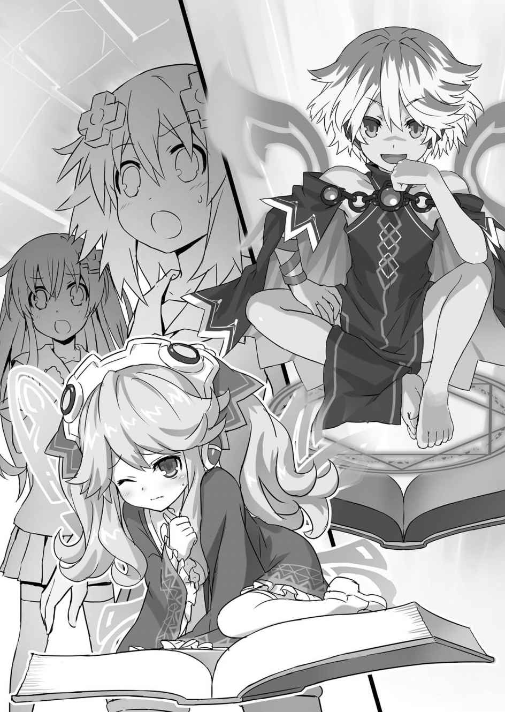
名前がないとなると、呼びづらいなぁ。いつまでも「謎の子」ってわけにもいかないし。
「ないならテキトーに呼んじゃうわよ。んーとねー、イストワール様が黒っぽくなったみたいだから、〝クロワール〟！ なーんてね！」
そこで無邪気な声をあげたのは、ラムちゃんだった。
こ、これだけ唐突に変な緊迫感が漂っちゃってる状況でこーいうこと言えちゃうのが、お子様の強みだよね。この思い切りの良さは、わたしもちょっと見習いたいかも。
や、違う違う。そんなことは今どーでもよくて......と、頭の中でセルフツッコミが捗っていると、
「あっはっは。いいんじゃねーのそれで。うん、決めた。俺、クロワールってんだ。よろしくなー」
謎の子ちゃんは、あっさりとラムちゃん考案の名前を受け入れて、改めて自分で名乗っちゃった。いいの!? そんなんで。
「クロワール、クロワール......うん。けっこー気に入ったぜ」
......い、いいんだ。
本人（？）がいいって言うなら仕方ない、これからはクロワールって呼ぶことにするよ。
それじゃ名前も決まったところで改めて、
「やいクロワール！ あんたいったい何者なのさ！」
謎の子ちゃん改め、クロワールに向かってビシッと指を突きつけ、わたしは根本的なところを問い質した。
「ずーっと眺めてたけど、お前やっぱりすっげー馬鹿だな。イストワールが管理してるシステムにハッキングかまして侵入してきたんだぜ、大体察しがつくだろー」
むっかー！ また馬鹿って言ったな！
えーえー、そりゃーわたしにだってそんなにオツムは良くない自覚ありますよ。あるけどさ、そうやって初対面の相手にゲラゲラ指さし返されて笑われて、黙っていられるかー！
とっ捕まえてお仕置きしてやる！
わたしは、がばーっと両手を広げてクロワールに飛びかかった。が、わたしの腕はクロワールの体をスカッと通り抜けてしまい、勢い余ったわたしは床にビターン。
「ぎゃはははは！ お約束すぎんだろ。ほんと、お前らで遊んでると飽きねーや」
な、な、なにおう！
「無駄よネプテューヌ。これは、立体映像 だわ」
真っ赤なお鼻のトナカイさんになっちゃったわたしに、ブランが言った。
「お？ こっちの白い方はちっと頭いーみてーだな。そーいや、あの花を花粉ごと凍らせちまったのお前だっけ？ やるじゃねーか」
わたしを馬鹿にするのは一時中断と、クロワールが今度はブランをジロジロと観察する。
「どうしてそのことを知っているの？」
そんな不躾かつ失敬なクロワールの目をじっと見返して、ブランが言った。
「なんだ、やっぱりお前も馬鹿か？ ずーっと見てたからに決まってんだろー。お告げを信じたねーちゃんにイケニエにされても面白かったけどなー」
へへーんと鼻をこすって得意げに返すクロワールに、その場の空気がカチンと凍った。
お、お告げ？ お告げって言ったね、今！
ジャングルで色々苦労させられた時の記憶、村の人たちやアタタリ・ドラゴンが猛烈な花粉症で苦しめられていた光景が蘇ってきて、わたしはクロワールを睨んじゃっていた。
「お、お前が花粉をばらまいたんだね！ なんであんなことしたのさ！」
わたしは叫んだ。
「そりゃおもしれーからに決まってんだろ。地上の環境をいじるのってよー、ほんっとにおもしれーよなー。ジャングルの時もだけどさ、イカの住処にちょっかい出してみたり、火山をちょっとボーンとさせてみたりするだけで、みーんな大騒ぎなんだもんな！」
おもしれー、おもしれーと何度も連呼するクロワール。
これに黙っちゃいられないのは、ネプギアとユニちゃんだった。
「イカさんを暴れさせたのもあなただったの!? 」
「アタシの島をめちゃくちゃにしたのも！ 許せないわ！」
ネプギアとユニちゃんが怒るのも無理ないよね。
町が溶岩に飲み込まれちゃうかもしれない。島の人たちを全員避難させなきゃいけないっていうところまで追い込んでおいて、その理由が、
「溶岩がドバーっと出てくるのってキレイだよな。あーんなおもしれーこと、長い間ずーっとずーっとイストワールは独り占めしてたんだぜ？ そんなの、ずるくねー？ 不公平ってやつじゃん？ ちょっとぐらい俺にもやらせてくれたっていーだろ？」
っていうんだから。
引き合いに出されちゃったいーすんも、このセリフには激おこで、
「ふざけないでください！ 地上の環境はそんな風に遊び半分で変えていいものではないんですよ！」
わたしがお仕事サボってるところを見つけた時の五割増しはおっかない声と顔で、クロワールを叱りつける。いいぞいーすん！ もっと言っちゃって！
けど、クロワールはそんないーすんの怒鳴り声もどこ吹く風ってやつで、まったくこたえてない様子。それどころか、
「うっせーなー。お説教なんか真っ平だねー。こっちはお前たちが楽しくやってる間、ずーっとヒマしてたんだからな。隣の世界の馬鹿たちが紛れ込んできてくれたおかげで久々に出番が回ってきたんだ。こっからは、オレのターンってやつなの！ 面白そうなこと、片っ端からぜーんぶ好きにやらせてもらうぜ！ ......こーんな風に！」
完っ全に開き直って、それこそ好き放題に言ってくれちゃった後、いーすんが使う用の制御ウィンドウを自分の周りにバンバン呼び出して、ぽちぽちぺたぺた。
「や、やめなさい！」
「やーなこったー！」
いーすんが制止する声とクロワールの楽しげな声とが混ざり合った直後、わたしたちのいるスカイラウンジも含めてタワー中に、ビーッビーッ！ と、絶対になんかよくないことをお知らせする時の警報が鳴り響いた。
「いーすん！ 何が起きたの!? 」
「......ぶ、Ｖ・サー・タワー周辺を守る防御フィールドが無効化されました」
「ははは！ 大成功だぜー。イストワールがこの馬鹿たちをタワーに入れる時だけは防御フィールドを解くだろ？ その時が、こーやってこっそり潜り込むチャンスだと思って待ってたんだっつーの。頭いーだろ？ そこの馬鹿と違って！」
きーっ！ いちいち馬鹿って言う度にわたしをチラ見するんじゃなーい！ 馬鹿って言う方がよっぽど馬鹿なんだからね！
「ちょっとちょっとネプテューヌ！ 今そんなことでキレてる場合じゃないでしょ！ ......完全にしてやられたわ。ファイナルハード号に大量のガーディロイドをぶつけてきたのが、そもそも囮 ......陽動 だったのね」
「おー。お前も白いのと同じでちっとはわかってんじゃん。ドラゴンの鼻息でぶっ飛ばされただけのヘタレかと思ってたのに。でも、今頃気付くんじゃやっぱり足りてねーなー。......ま、とにかくそーいうことで俺のあいさつはおしまいな！ そんじゃなー」
「ま、待ちなさい！ 私の話はまだ......」
「終わり終わり。終わりなんだよ。黒いのも白いのも馬鹿も、みんな揃ってお前らはガーディロイドどもと楽しく遊んでなって。その間に俺は......そーだなー、いっちょでっかく新大陸でも作ってみっかなー。今ある大陸はぶっ壊してさ！」
ニィッと面白そうに、そう、本当に心の底から面白いこと思いついちゃったって笑顔を満面に浮かべてクロワールは消えた。出てきた時と同じように、唐突に消えちゃった。
残されたわたしたちがボーゼンとそれを見送っていると、
「み、皆さん！ 外です！ そ、外を見てくださいです！」
今度はこんぱの叫び声がけたたましく響き渡る。
外を見て......ね。もう嫌な予感しかしないから、できればスルーしちゃいたいところだけど、そういうわけにもいかないよね。
クロワールに散々馬鹿呼ばわりされちゃったわたしだけど、こんぱが何に気付いてうろたえてるのかってことぐらいは、さすがに簡単に想像がつくよ。
嫌だなー。この空気はなんかあるなー。怖いな怖いなと思ってそーっと、できるだけそーっと外を見てみましたらですね、やっぱりいるんですよ！ 窓の外にこう、黒ーい雲みたいなのが、わさわさわさ！ っと広がってね、わたしの視界を塞ごうとするんです！ それでわたし、背筋がゾクゾクゾクーっとしましてね、思わず叫んじゃったんですよ。
「いーすん！ バリア！ バリアもう一回！」
自分でも気付かないうちに相当焦ってたのか、テレビで見た怪談おじさんみたいな口調でもっていーすんに、迫り来るガーディロイドの大軍について説明しちゃうわたし。同じ光景をいーすんも見てるはずなのにね。
「......ダメです。防御システムの部分をピンポイントでブロックされてしまいました。こちらからはアクセスできません」
いーすんは、悔しそうに首を振った。そ、それってかなりヤバいんじゃないの？
「ふざけた態度の割には、短時間でダメージを与えられるところに絞ってサイバー攻撃を仕掛けてくるしたたかなところもある、というわけですわね。やってくれますわ、クロワールも」
ベールもそんな落ち着いて分析してる場合じゃないから！
陽動でも囮でもいいけどさ、あの弾幕地獄で全員生きた心地しなかったってのは事実だよ？ それが今度はここにもう一回襲いかかってくるんだよ？ タワーは飛ばせないんだよ？ 避けられないんだよ？
「どーすんのさ!? 」
「こういう時こそ落ち着いて対応しなければいけませんわ。来ると言うなら迎撃する。それしかありませんわよ」
まだ変身してないのに、変身後みたいな鋭い目つきになってベールは言った。
「わたくしたちがタワーへの被害を防いでいる間、イストワール様に何か対策を立てていただくのがよろしいのではなくて？」
た、確かに......まあそう......かな。ほんとに？ 大丈夫？ 間違ってない？
「どうなのいーすん!? 」
「そうしましょう。敵は暴走しているシステムの中枢......Ｈｉ・サー・タワーの方から第二陣、第三陣と戦力を繰り出してくるはずです。女神化可能な皆さんには、こちらの準備が整うまでＶ・サー・タワーの防衛をお願いします」
ベールの提案を採用ってことね。それじゃ、わたしも気合い入れないと。
「......ただし、ネプテューヌさんは残ってください」
っとお！ せっかく人が気合い入れてるところにそれなの？
「なんで？ 戦力は多い方がいいんじゃ......」
「もはや防衛システムを復旧して仕切り直し......などという悠長 なことを言っている場合ではなさそうです。大至急、ネプテューヌさんたちが持って来てくださった再起動キーの最終調整を行い、一気に事態の収拾を図りましょう」
わたしの言葉を遮ったいーすんが、これまで見たことがないぐらいにキリキリッとちっちゃな顔を引き締めて、ドがつくほどシリアスに言った。
Ⅳ
『準備はいいですかネプテューヌさん？ しばらく剣に意識を集中してください』
「わ、わかった。それはやるけどさ、一個だけお願い聞いてくんない？」
Ｖ・サー・タワーの最上階。パープルハートの剣が逆さに突き刺さった台座の前に、わたしはいた。
そのわたしの耳に聞こえてくるのは、別の場所であいちゃんを助手代わりに、剣の最終調整ってやつを進めてるはずのいーすんの声。
『なんでしょう？ 今、あまりリソースを割いている余裕はありませんので、無茶なことは言わないでくださいね』
「外の様子を見せてほしいだけだってば。あ、できれば音声付きで」
『そのぐらいのことでしたら......。やはり、ベールさんたちが気になりますか？』
スカイラウンジに比べるとずいぶん狭い空間を、わたしはぐるっと見回した。
剣の刺さった台座の他は薄灰色の壁があるだけ。しかも、狭い上にちょっと暗い。
「それももちろんだけどさ、進行役のわたしがここから動けないんじゃ、実況のしようがないなーと思って」
『実況？ なんの話です？』
「いーから、いーから。こっちの都合。別にいーすんの邪魔したりしないから早く出して」
『はぁ......。では、映像と音声をそちらに回しますよ？』
まー状況が状況だし？ ベールたちと一緒に外に出てるネプギアに進行役をバトンタッチしたっていいんだけどね、本当は。
でも、これから命がけの大仕事をしようってところで、余計なことに気を遣わせたくないじゃない？ その点、わたしはしばらくここにいなきゃいけないらしいんで、わたしがやる方がまだ効率的かなーとか。
......っと、きたきた。
１カメＯＫ！ ２カメ、３カメもバッチリ。台座を挟んだ向こう側、空中に大きなスクリーンがいくつか浮かび上がり、外の様子がライブで配信されてくる。
今映ってるのは......おお、凛々しく変身したベールの横顔だね。え？ どーいうカメラでどーやって撮ってんのか？ それはいーすんに聞いてちょうだい。
『それでは始めます。ネプテューヌさん、剣をしっかり握ってください』
「はいはい」
いーすんの指示があって、わたしは台座に刺さった剣の柄を両手で握りしめる。
最終調整って何をするのかと言うと、みんなで頑張って集めたデータとわたし自身の生体情報っていうやつをひとつに連動させる......みたい。
そうするとどうなるか？ 簡単に言えば、わたし以外の誰も剣を使えないようにする......つまり、わたしに「暴走するシステムをリセットする権利をやろう」ってことみたい。
リセットできる権利を色んな人に渡しちゃうと収拾つかなくなっちゃうからとかどーとかこーとか事前にいーすんが説明してくれてたけど、そんなのいちいち覚えてられないよ。
大事なことはただひとつ。
最後にオイシイところを持っていっていいのは、絶対不動にして永遠不変の主人公たるこのわたしに限られる！ ってこと。これぞ、主人公補正。特権と言ってもいいね！
まー見てなさいってば。隣の世界にいるもうひとりのわたしが、わざわざ次元を超えてまで託してくれた切り札だからね。バシーッと決めちゃうよ。
そのためにも、まずはベールたち脇役勢に頑張ってもらわないとね！
「いーすん、こっちの声はベールたちにも聞こえるの？」
『もちろんです』
そりゃー結構。
んん！ と咳払いひとつ、わたしは剣を握ったままベールに呼びかけた。
「ベール、聞こえる？ 調整が終わるまでは三十分だってさ。わたしが颯爽 と駆けつけるまで、ちゃーんとタワーを守ってよね」
『三十分？ あらあら、このわたくしにそんなに時間を与えてしまうと、後で困るのはねぷねぷの方かもしれませんわよ』
な、なんですと？
わたしの呼びかけに気付いたベールが、スクリーンの中で不敵な笑みを浮かべた。
『わたくし、先ほどあいちゃんがやってのけた強行突破の時に、ガーディロイドの攻撃パターンは解析済みですの。パターンの読めたシューティングゲームなど、もはや攻略したも同然ですわ』
そ、それは凄い。でも、どうしてそれでわたしが困るわけ？
『誰も遮る者のいないＨｉ・サー・タワーに、ねぷねぷひとりで寂しく乗り込んでいって、鍵だけ差して帰ってくる......というのもクライマックスとしては締まりのない絵になってしまいますけど、よろしくて？』
なるほど、そういう意味。言ってくれるよねー、ベールもさ。
でも、そんなベールだからこそ頼りにできるってのもあるわけで、ここはお手並み拝見といきますか。
『ねぷねぷの花道をガーディロイドの残骸で舗装しておいてあげますわよ』
おーおー、頼もしいこと。
『では、行きますわよ！ 皆さん、わたくしに続いてくださいまし！』
『なんでベールが偉そうに仕切ってんだよ！ おいロム、ラム！ わたしたちも行くぞ。ついてきやがれ！』
『オッケーお姉ちゃん！ わたしのカッコいいとこ見逃さないでよね！』
『...がんばる！』
『ユニちゃん、私たちも！ みんなでタワーを......ううん、世界を守ろうね！』
『ええ。以前のアタシたちじゃないってとこ、見せつけてやるわよ！』
ベールに続いて、同じく変身したブラン、ロムちゃん、ラムちゃんのチームと、ネプギア＆ユニちゃんのコンビが迫り来るガーディロイドの大軍に突撃していく。
そのスピードに負けずに追いかけて行く健気なカメラたち。......どういう仕様なのかは知らないけど、キミたちも頑張って！
......って、あれ？ ちょっと待った。ひとり足りやしませんか？ こういう時は真っ先に、それも嬉々として突っ込んでいく子が見当たらないんだけど、どうしたのかな？
いるはずの人が急にいないと、心配になってきちゃうけど......。
『ネプテューヌさん、脳波が乱れています。剣に意識を集中してください』
うう、こっちはこっちでやることあるし。......何か狙いがあってのことだと信じよう。
それより、意識を集中。集中ね。むー！ ふん！ はっ！ こんな感じでいいの？
剣を握りなおしてから念を込めるようにすると、スクリーンのひとつが外のライブ映像から調整の進行具合を示す画面に切り替わった。どうやら、これでオッケーみたい。
『ＤＬＣ、調整開始します。現在進行度、１０％』
画面の中では、８ビット時代を思わせるドット絵で描かれたいーすんが、両手に抱えたお肉や野菜のアイコンを次々と大きなお鍋に放り込んでいくアニメーションが展開されている。
ど、どうもこのお鍋の煮え具合だかお料理の完成度だかがイコール調整の進み具合ってことらしい。それはいいんだけど......なんなの、この無駄に可愛らしい、緊迫感に欠けるインターフェースは。
ゲームソフトをダウンロード購入してるんじゃないんだから、もうちょっとなんかあるでしょーと心の中でツッコミを入れつつ、あーでも戦闘機の内装を思いっきりファンシーにしちゃうセンスがいーすんだからなーと半分は納得しつつでそのアニメーションを見ていると、
『わたくしの前に出てきたこと......それが敗因のすべてですわ！』
隣のスクリーンでは、可愛らしい進行確認アニメーションとは対照的な激バトルが始まっている。こっちも見て、そっちも見てって、意外と忙しいかも。
ギャップが凄くて気持ちの切り替えが大変だけど、こっちはこっちでちゃんと実況しないと！ と目を凝らしてみて、まずわたしの頭に思い浮かんだのは、
「ベール、圧倒的！」
「ベール、オンステージ！」
とかなんとか、それ系の煽 り文句だった。
ほんと、見てて他に言いようがないってぐらいの大活躍ぶりに、実況も忘れてお口あんぐりで見とれちゃうほど。
や、ブランたち三姉妹も頑張ってるし、ネプギア＆ユニちゃんコンビだって全力全開なんだよ？ でも、とにかく今日のベールはぶっちぎりだった。
まるで、人が違うみたい。凄すぎる。
パターンは解析しましたわ。なんて大きな胸を張ってはいたけど、だからってこんな風になる？ フツー。
まずね、動かないの。正確に言うと、無駄な動きが一切ないってやつ。
あいちゃんがローリングだ宙返りだと、割と派手めな回避テクを披露したのとは違って、ベールの避け方は一見すると地味。わーっと迫ってくる弾幕をぎりっぎりまで引きつけてから、これは確実に当たる！ っていうのだけを、ゲームで言えばドット単位の細かさでもって避ける。
攻撃も、よく「メリハリが利いてる」とか言うじゃない？ あれだよ、あれ。
一体ずつ、凄い速度で突っ込んでくるヤツは出し惜しみなしの大技で瞬殺。
何機かで編隊を組んで向かって来るのには、先頭の一機にだけピンポイントで攻撃を集中させて、残りは先頭のヤツの爆発に巻き込んで仕留めるとか。
で、その時はもうベール自身はさっさと違う位置に移動してて別のヤツを相手してるのね。いちいち倒したかどうかとか確認しない！
極めつけは、五本十本と武器の腕をくっつけてやってきた大物を相手にした立ち回り。
ここも一気に攻めるかと思いきや......違うんだなこれが。
本体には手を出さず、武器だけを一個ずつ狙ってちくちくと突っつくように壊していくんだよね。なーんでそんなめんどくさいことするのかな？ ベールの必殺技がどれも強力なのを知ってるだけに、もっとこうドカーンバキーンとやっちゃえばいいのに。
......そんな風に思っていた時期がわたしにもありました。
でもベールは、わたしよりももうちょい先を見通していたんだ。
ベールとは違うところで、ネプギアやブランたちもそれぞれ大奮闘しているんだけど、なんたって敵は数が多いでしょ。どうしても倒し損なっちゃうヤツも出てくるし、討ち漏らしたミサイルやなんやらも飛んでくる。
ベールは、そういうのがある程度〝溜まって〟くるのを待っていたっぽい。
他のみんなの攻撃をかいくぐってきたザコたちが、また一塊になってタワーに針路を向け直したその瞬間、
『頃合いですわ』
してやったりと笑みを浮かべ、それまでのちくちく攻撃から一転、大物の本体に猛ラッシュを仕掛けて、最後に思いっきり蹴っ飛ばした！
蹴っ飛ばした先には、手負いになってるザコの群れ。ドンピシャでそいつらをみんなまとめて巻き込むように大物が大・爆・発！
『おいおい、これじゃわたしたちが噛ませ扱いじゃねーか。ベールの奴、完全にゲーマー脳のスイッチが入っちまってんぞ』
おいしい見せ場をありったけかっ攫われちゃう形になって、ブランが「やってらんねーぜ」と毒づいたところで、あっとわたしも気付いた。
そうか。なーんかどっかで見たことあるような戦い方だなぁと思ったら、これっていわゆるスコアラーって言われてるような、シューティングが超うまい人たちの「稼ぎプレイ」と同じなんだ。
ゲーマー脳ってブランは言ったけど、なるほどだよね。
コアゲーマー度で言えばわたしたちの中でとびっきりのベール。ゲーマーの中のゲーマーって言ってもいい。どうやら、今のベールの脳内に広がっている光景は、スコアラー大喜びの激ムズシューティングゲームの画面みたい。
『ん～。カイカンですわ。スコア１６倍でワンエクステンドは堅いですわね』
エクステンドって......一機増えちゃってるし。
ここまで入り込んじゃってる と、ちょーっと心配になってきちゃうんですけど。
だ、大丈夫？ 現実世界は常に残機ゼロの一発勝負。一回やられちゃったらそこで人生終了だからね？ ね？ 大活躍はいいんだけどさ。そこんとこよろしくだよ。
そんな一抹の不安を抱きつつも、わたしは戦場ライブ配信から目を離して、一度調整進行ゲージを確認。
進行度、６５％。おお、ちょっと見ない間にけっこう進んでる！
お鍋の中は、これまた芸の細かいことにもんやりと湯気で覆われ始めていて、食材アイコンを運ぶドットいーすんの顔も笑顔になっている。
ちょっとノリ過ぎちゃってて心配ではあるけど、外はベールオンステージが続く限りは敵に突破されることもなさそうだし、こりゃ思ってた以上に楽勝ムードなんじゃない？
うーん、そうなるとベールの言ってたことが本当になっちゃうなー。わたしの出番、ちゃんと残ってるかなー？ なんか演出考えないと尻すぼみで終わっちゃうかもなー。
なんてことを、割と本気で考え始めた時だった。
そうは問屋が卸さないとばかりに、突然、床下からゴーン！ と突き上げてくるような衝撃が襲いかかってきた！
たとえて言うなら、格闘ゲームのアッパー系対空スペシャルコンボを、ドッカンドッカンやられてるみたいな......うん、ちょっとわかりにくかったね。ごめん。
と、とにかく、強烈な衝撃だったってこと。
しかも一度じゃない。何度も続けて！
突然も突然すぎて、身構えるも何もあったもんじゃない。衝撃でふわっと足が床を離れ、わたしはバランスを崩してお尻から床に落っこちた。
あいたたたっと、思わず剣から離しちゃった手でお尻をさすさすしようとしたところに、追撃！ 追撃！ また追撃！
こ、これは......まともに立ってられない～！
そうこうしているうちに、目の前で調整進行ゲージが５０％、４５％、４０％とどんどん下がっていくもんだから、もう大変。
剣に集中しろとは言われたけど、そんな仕様になってるんだったらむしろそこを最初に言ってほしかったんですけど！
途切れることのない衝撃にお尻どころか全身あっちこっちをぶつけながら、わたしはほとんど這うようにして剣にすがりつく。
４５％......４６％......。ほっ、とりあえずこれで良しなのかな？ だけど、ゲージが上がるスピードが下がるスピードよりゆっくりなのはどういうわけ!?
「いーすん！ ゲージ！ ゲージ上がんないんですけどぉ！」
『集中です！ 集中ですよ、ネプテューヌさん！』
む、無茶を仰る......。
「あのねえ！ このドッカンドッカンを止めてくれなきゃ集中なんかできっこないでしょー！ つーか、いったい何が起こってんの！」
『地下よ！ タワーの地下から攻撃を受けてる！ ......まずい、中に入られたわ！』
ち、地下ぁ!?
いーすんに代わって状況を説明してくれるあいちゃんの声も上擦っている。
『やられたわ！ フロアの天井を次々にぶち抜いて、一直線に最上階に向かってる！』
「どどどどーすんの!? こっちの防衛システムは使えないんでしょ!? 」
楽勝ムードから一転しての大ピンチだった。
大至急、超特急でベールたちに戻ってきてもらわなきゃ！
あいちゃんが本当のことを言ってるってことは、襲ってくる衝撃がどんどん強く激しくなっていることからも間違いない。
「ベール！ ブラン！ ネプギア！ 誰でもいいからヘルプ！」
ゲージを下げないように必死に剣を握って声を限りに叫ぶ。
けど、現実は残酷も残酷。このドッカン攻撃が始まるのとほとんど同時に、外の方も更に数を増やしたガーディロイドの攻撃がひたすら続いているわけで......。
『こうなりゃ時間との勝負よ！ 最上階に踏み込まれる前にゲージを満タンにして脱出するの！ 集中！』
「無理っ！」
『やんなさいっ！ 主人公なんでしょ！ 補正かかってんでしょ！』
お、鬼だよ......鬼がいるよ......。
『ネプテューヌさん......根性ですよ！ 根性！』
ふたりもいるよ......。
けど、ここでいーすんとあいちゃん相手に泣き言を言えばどうにかなるかって言うと、どうにもならないことは確かなわけで。だったら......こうなりゃ怨念でもいいから剣に込めてやった方がまだ前向きだよね！
女神の剣がとんでもない魔剣として覚醒しちゃったとしても、そん時はそん時だ。なるようになれー！
開き直って、わたしはもう体ごと剣にしがみついてやった。
５５、６５、７０％......。い、いいぞいいぞ。意地でも離すもんかの精神でわたしは耐える。ひたすら耐える。
こけの一念っていうんだっけ？ 石の上にも三年？ とにかくそういう気持ちでゲージを８０％まで持って行き、これは希望が見えてきたかもと思ったのも束の間のこと。
どこか大きなフロアをぶち抜いたか、それとも太い柱をまとめてへし折られちゃったか、これまでで一番激しい衝撃がわたしを揺さぶり、わたしの体はまたしても床に投げ出されてしまった。
「ダメダメダメダメ！ 下がるのなしっ！」
ジャンプで飛びつく。７５％！ ぎりぎりのギリギリでセーフラインと思いたい。
でも、そろそろ本当に限界だった。
今の一撃でフロア全体が斜めに傾き、壁中に細かい亀裂がびっしりと走っている。次の一発は......わたしと剣はともかくタワーそのものが耐えられない。
けど、諦めるのは嫌だった。往生際の悪さも主人公の条件だし！ ベールたちの頑張りをここで全部パーにはできないよ！
ぎゅっと目をつぶり、ただひたすらに念じ続ける。
えーい、次がトドメと思うんだったらやってみろー！ たとえ手を離しちゃったとしても、今度は歯で噛みついてでも耐えてやるー！
そんな思いで全身に力を入れて次の一撃に備える。
ところが......あれ？ 来ない。いつまで「むぐーっ！」と踏ん張っていても、次の一撃が来ない。
「と、止まった？」
な、何がどうなってんの？ 二転三転する状況についていけず、思わずキョロキョロと辺りを見回しちゃったところへ、
『やーっと外に追い出せたわ。もう安心よ。感謝なさい』
聞こえてきたのは、まさかまさかのノワールの声だった。
『こんなこともあるんじゃないかと思って、こっそり別行動で警戒してた甲斐があったわ。賭けは私の勝ちってことね！』
「か、賭けって......どゆこと!? 」
『この私に同じ手は二度通じないということよ』
おおう!? 急に現れた（でも声だけ）かと思えば何やら上から目線な、しかもどっちかと言えば悪役っぽいことを言い出したよこの子。それはともかく、その心は？
『ファイナルハード号に大軍をぶつけてきたのは、イストワール様に防御フィールドを解除させ、その隙にハッキングを仕掛けるための目くらましだったでしょ？ だから、今度も何か似たような手を使ってくるんじゃないかとヤマを張っていたのよ！』
ドーン！ バーン！ という書き文字つきかって感じでノワールは言った。
どうだ見たか。私スゴい。私デキる子。私サイコー！ ......そんなオーラがむんむんと漂ってくるドヤ顔が、声だけでもありありと想像できるよう。
けど、ここは素直に感謝すべきところだよね。
何をどうしたのかはここからじゃ知る術はないけれど、とにかくノワールの機転と行動がピンチのわたしを救ってくれたのは間違いないみたい。
ノワール偉い！ よ、ゲイムギョウ界一の花形コスプレイヤー！ ニクいねこのっ！
『......ふふん。ジャングルではコンパとブランに、天界突入ではアイエフに、この防衛戦ではベールに大活躍されちゃって、ここで私だけイケてる見せ場がないんじゃ不公平ってものでしょ？ さ、早いとここっちにもカメラ回してちょうだい。このガーディロイド、デザインからして今までのヤツとは毛色が違う......』
なんてノワールを持ち上げている間に、おおっ！ なった！ ノワール様の活躍のおかげで、とうとうゲージが１００％まで到達したよ！
『......あの、ちょっとネプテューヌ？ 私の話聞いてる？』
「聞いてる、聞いてる！ ありがとね、ノワール！ 超超感謝だよ！」
『そ、そう？ わかってくれればそれで......』
よおおっし！ やるぞー！
台座は少々ひび割れて傾いちゃってるけど、これはこれで味がある。ついに最終調整が完了した剣を、わたしは意気揚々と引き抜いた。
見よ、この輝きを。美しくも勇ましい女神の剣を！
『あ、あのね。そっちはそっちで盛り上がってるのはいいんだけど、こっちも実況を......んん！ あーあー。......くっ！ なんて強いのこの敵！ どうやら、この私を本気にさせたいようね！ いいわ、だったら見せてあげる！ 私の究極奥義を！』
待っててね、みんな。今、わたしが駆けつけるからね！
この剣の輝きと、主人公としての誇りにかけて、わたしが世界に再び平和を取り戻してみせるんだから！
『......ほ、ほら出すわよ究極奥義。間違いなく見開き挿絵候補モノよ？ 早くこっち映してくれないと、一番カッコいいシーン見逃しちゃうんだから』
いざ行かん！ 正義は我に有り！ ゲイムギョウ界で行きとし生ける、すべての命のために！
刮目 せよっ！ わたしの......変身ッ!!
『ちょっとーっ!! 思いっきり無視してくれちゃってるんじゃないわよーーっ!! 』
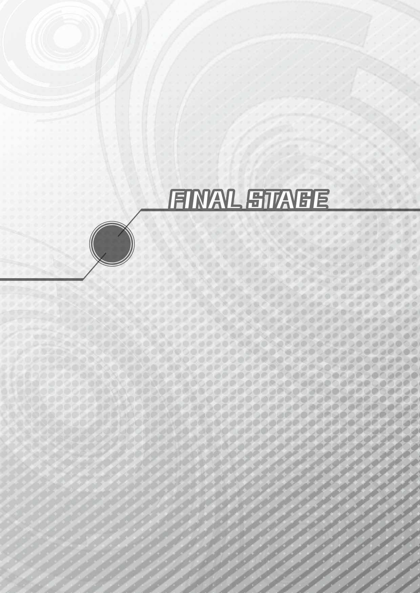
（ごめんなさい、いーすん）
半分ほど崩れかけていた壁にキックで穴を開け、わたしは大空に身を躍らせた。
吹き付ける風が髪をもてあそぶままにさせながら、改めてＶ・サー・タワーの状況を外から確認してみると、想像以上にひどい有様だった。
どれほどベールが緻密な〝稼ぎプレイ〟で敵を撃退してくれたとしても、やはり限界はあるみたいだった。こんぱが「アメジストでできているみたい」と感激したタワーの外壁には、今も無数のガーディロイドたちが樹液に群がる虫のごとく取り付き、タワーのあちこちでは煙が上がっている。
それでも、決死の防衛戦が何もかも無駄というわけではなさそう。別行動のノワールが引き受けてくれた地下からの攻撃も含め（......そう言えば何か言ってたような気がするけど、なんだったのかしら？）、クロワールもほぼありったけの戦力を投入してきたようね。
向かい側に立つＨｉ・サー・タワーの周辺にはもう百体を切って、数えようと思えば数えられるぐらいのガーディロイドたちが〝直衛部隊〟といった体で浮かんでいるのみだ。
「お姉ちゃん！」
と、Ｈｉ・サー・タワーの様子を遠目にうかがっていたわたしの耳に、不意にネプギアの声が飛び込んできて、わたしは振り返った。
何度も爆風と爆煙とをまともに浴びたのだろう。きれいに整ったストレートの髪をあちこちほつれさせ、体中ススまみれになったネプギアが、大きく肩で息をしながらわたしを見つめている。
「ベールさんがお姉ちゃんを手伝ってあげてって......」
どうしてここに？ そう聞くよりも早く、ネプギアが口を開いた。
わたしは、Ｈｉ・サー・タワー上空の光景と、ネプギアの背後で煙を上げるＶ・サー・タワーの様子とを交互に見比べてから、ゆっくりと首を振った。
「ありがとう。でも大丈夫よ。みんなには十分助けてもらったし、この先はわたしひとりでいいわ」
「そんな！ ひとりじゃ危ないよ！ 私、絶対についていくからね！」
「ネプギア......」
わたしの腕をぐっとつかんで、ネプギアは真剣な眼差しで訴えてくる。つかむ力の強さが、そのまま決意の強さにわたしには思えた。
「私もう、あの時みたいなことになるのは嫌だよ。今度は、私がお姉ちゃんを助けるんだから！」
こうなると、わたしが何を言っても聞き入れはしないわね。
まったく、元々頑固なところはあったけれど、特に地上で再会してからは、前よりももっと自己主張がはっきりしてきたような気がするわ。
「ユニちゃんの影響かしらね」
「え？ 何？」
「なんでもないわ。......それより、ずいぶんとボロボロだけどＭ．Ｐ．Ｂ．Ｌ はまだ使えるの？ 前みたいにエネルギー切れでは、また大事なところで後悔することになるわよ？」
仕方ないわねと内心で諦め、以前のシチュエーションを引き合いに出してついてくることを遠回しに許可すると、
「補給はちゃんとしてきたよ！ ......髪を直す時間まではなかったけど」
ぱっと顔を輝かせたネプギアが、ほつれた髪をつまんで言った。
本当にずいぶんとたくましくなってくれたものだわ。ここで冗談を飛ばせるぐらい余裕があるんだから、わたしが心配することはなさそうね。
「......なんだか、お互いにずいぶん回り道してしまったわね。やっとスタート地点に戻ってきた感じがするわ」
「そうだね......。でも、お姉ちゃん」
「何かしら？」
「お姉ちゃんが地上に落っこちて学園の皆さんに出会ったから、今こうしていっぱい力を貸してもらえてる。私がオオトリイ島のみんなに出会ったから、ちょっとだけ強くなることができた。......あれは、神様が私たちに修行をさせてくれたんじゃないかな、きっと」
「どうしたの急に。それに、神様って？」
本当に急に饒舌に語り出したネプギアに、わたしは驚いて尋ねた。
「それはほら......隣の世界の女神様とか。パープルハート様？」
「......わたし、自分で自分に修行をつけられてたの？ 変な話ね」
「あ、それとも天界にいらっしゃる〝大神イストワール様〟だったりして」
この子、こんなに屈託なく冗談を言う子だったかしら？
やっぱり、少し変わったわ。
「なるほど。わたしたちも見たことがない、本物の神様がいるかもしれないというわけね。でも、わたしはそんな見えない神様の手を借りる気はさらさらないわよ」
ふっと笑って、わたしは剣をＨｉ・サー・タワーへ突きつけた。
見ていて、もうひとりのわたし。あなたがやり遂げたのと同じ......かどうかはわからないけれど、今度はわたしがわたしのやり方で、わたしの世界を救ってみせるわ。
「さあ、行くわよ。今度こそ終わらせるの、誰でもない......わたしたちの手で！」
「うん！」
高らかに宣言し、わたしたちは飛んだ。
すぐに反応した〝直衛部隊〟が、わたしたちの進撃を阻止しようと動き始める。
だいぶ数は減っているとは言え、まだまだ不利に変わりはなさそうだけど、立ち止まったり引き返すという選択肢はない。ただ、行くのみ。
お互いの射程距離が近付き、いつ戦端が開かれてもおかしくないという状況。徐々にわたしの中でも戦いへの高揚感が高まっていく。
さあ、いつでもやってやるわよ！ そんな決意が満ちたタイミングだった。
それまで別々の動きを見せていたガーディロイドたちが、まるで身を寄せ合うように一箇所に集まったかと思うと、互いの腕だか脚だかを次々と連結し、あっという間に巨大な蛇を思わせるような姿に変形した。
と、その蛇の頭にあたる一体についた真っ赤なセンサーアイから光が照射され、空中にひとつの像を結ぶ。
それは、スカイラウンジで見た時よりもだいぶスケールを拡大したクロワールの立体映像だった。
『なんなんだよーお前ら。こないだはアッサリと負けて逃げ帰ったくせに、今日は妙に頑張ってくれちゃってよー。さすがに、ちょっとムカっとしてきたぞ』
短い髪を両手でかき回し、明らかに苛立った様子で立体映像のクロワールが言った。
『ったくウゼーんだよなー。何、マジになっちゃってんだよ。こんなの遊びだろ？ ゲームじゃん、ゲーム！ 適当に面白おかしく俺を楽しませてくれてりゃそれでいいんだよお前らなんか！ 空気読めよなー。ガチになりやがって、ダッセーの』
それはまるで、自分の思い通りにならないことにかんしゃくを爆発させる駄々っ子の理屈だった。わたしは思わず、ネプギアの方を見る。
『あーもういいや。もうちょい派手なドンパチ花火を見てたかったけど、もーいい。飽きちゃったぜ。とりあえず、お前らをぺちゃーんとやってから、次の遊びしーようっと』
「ふ、ふざけないでください！」
ネプギアは、そんなクロワールの態度が我慢ならないみたいだった。真面目な性格の子だから、無理もない。キッと眉をつり上げて怒りを露わにする。
だけど、わたしはちょっと違った。
苛立つクロワールの言葉を聞いた瞬間、何か確信に近いものを感じていたの。
それは、簡単に言ってしまえば勝利の確信だった。
確かにクロワールはすべての元凶で、この一連の事件の黒幕らしきものではあるかもしれないけれど......だからと言って最強の敵ではないんじゃないかしら。
直感と言えばそれまでだけど、間違いないと思う。
「いいわ。だったら、この辺で決着をつけましょう」
その確信を胸の内に隠したまま、わたしは静かに言った。
『おーし！ やってやんぜ。お前らふたりとも、ボッコボコだかんな！』
蛇型の巨体をぐねぐねとくねらせて威嚇 しながらクロワールが言う。
わたしは、また静かに答える。
「ふたり？ いいえ、この程度の相手ならひとりでも十分よ。......ネプギア、ここはあなたに任せるわ」
「うん、わかった！ ......って、えええ!? お姉ちゃん!? 」
勢いで返事をしてしまってから、「何を言い出すの？」と言わんばかりにネプギアがわたしを見た。
「大丈夫よ、ネプギアひとりで十分。それに、わたしはほら、こっちを片付けないといけないから」
手にした剣を軽く振って見せつつ、わたしはネプギアに微笑みかけた。
「そんな......。いきなり無茶なこと言わないでよお姉ちゃん。さ、さすがに私ひとりじゃ......」
「無茶でもなんでもないわ。今のあなたは前のあなたと違う。わたしを助けてくれるんでしょう？ ......それに、クロワールは遊んでいるだけなんですって。こんなことに本気になると、空気の読めない子ってことになってしまうみたいよ」
そうよね？ と、わたしはクロワールを見た。
予想通り、クロワールは一瞬意表を突かれたような顔になってから、慌ててそれを取り繕い、
『バ、バーカ！ おめー知らねーぞ？ こいつは他のザコとちげーんだからな。つえーんだぞ？』
殊更 にわたしを威圧するように合体ガーディロイドの武器をこちらに向けて来る。
やっぱりそうだわ。わたしは確信を深めた。
クロワールが人のことをバカだなんだと挑発して煽るのは、自分のやることなすことにみんなが振り回されて右往左往するのが見たいから......。要は、〝構ってちゃん〟っていうことなのかしら。
それと、もうひとつ。......いえ、これは直接本人に向かって言ってあげるのが良さそうね。
「それじゃ、そういうことだから。もうわたしは行くわね。ネプギアは、この子と適当に遊んであげててもらえるかしら？」
もうこのクロワール言うところの〝強敵〟には完全に興味をなくした風で、わたしはクロワールの言葉をスルー。
そのまま、一気にスピードを上げてＨｉ・サー・タワーの内部へと飛び込んだ。
以前は倒しても倒しても湧き出てくるガーディロイドに行く手を阻まれ、それどころか押し返されてしまったけれど、今回は違った。
わたしの行く手を阻むものは何ひとつとして現れる気配はなく、あっという間に中枢部に到着してしまう。
そこは、わたしが想像していたような空間とは違っていた。
よくアニメやゲームで見る、巨大なマザーコンピューター的な機械が占拠しているという広大な空間を想像していたのだけれど......。
さっきまで、わたしがメーターの上がり下がりに一喜一憂していたのとほとんど同じような場所。中央にポツンとひとつ、これも同じような形の穴が空いた台座があるだけだった。
恐らく、この台座の中に再起動キーである剣を収めさえすれば、それですべては終わってしまうに違いない。あっさりと。拍子抜けするぐらいに。
でも、わたしは......。
目を閉じ、一度ふうっと息を吐いたところで、わたしは変身を解くのだった。
......いよっ、と。
はー、やっぱりこっちの姿の方が断然ラクでいいね。まったくいっつも思うんだけどさー、わたしってば変身した時と通常モードとのギャップありすぎじゃない？
他のみんなは変身してもそこまで激しく性格変わったりしないよね。ネプギアなんか、変身しててもほとんど素のまんまだしさ。
あ、ちょっと待って。ブランは変わるね、思いっきり。むむ？ そうなると、これは個人差っていうこと？
ううむ、まだまだ謎が多いよね女神化......って、別にその話は今は関係ないや。はい、また脇の〝エア棚〟にこれは置いといて。
「ねー、クロワールぅ、いるんでしょう？ 出てきなよー」
剣の峰の部分で、凝っちゃった肩をトントンやりながら、わたしは薄暗い部屋の中で呼びかけた。その声が、わぁんと反響したところで、
「ひとりでノコノコ乗り込んできやがって。お前って、本当に大バカだよなー」
相変わらずの憎まれ口で、台座の前にボウッとクロワールの姿が浮かび上がる。
「俺が他になんも仕掛けを用意してねーと思ってんのか？ んなわけねーだろ。ここでお前が再起動キーをちょっとでもぶっ込もうとしてみろ。瞬間、おしまいだかんな」
言いながら、わたしがいーすんに頼んだ時と同じように、外の様子を映したスクリーンもいくつか浮かび上がってくる。
そこには、あの合体ガーディロイドを相手に一歩も退かずに立ち向かうネプギアや、Ｖ・サー・タワーにひっついた無数のガーディロイドたちと戦うみんなの姿が。
「助けに行かねーでいいのかよ？ 他のヤツら、かわいそーだなー。はくじょーなヤツ」
「いいよ。だってあなた、本気じゃないんでしょ？」
今更そんな煽りには耳を貸さないもんねー。わたしは、ぴしゃっと言ってやった。
「本気じゃない相手にガチになるなんてダセーって、クロワールが言ったんじゃん」
「うっ......」
「そっちこそさ、やるんだったら空気読んでほしいよね。私たちはさ、てーっきり『ゲーム感覚で世界を滅ぼそうとするなんて恐ろしい子！』ってことでなんとかしなきゃと思ってやってんのにさ、途中で『こんなゲームにマジになっちゃってどうすんの？』は、ないんじゃない？ 某挑戦状じゃあるまいしさー」
「お、お前何言って......わざわざケンカ売りに来たのかよ!? 」
「違うよ。確認しに来たの」
「確認だあ？」
「そう。クロワール、あなた本当に世界をしっちゃかめっちゃかにする気あるの？ ないの？ どーなのよそこんとこ」
率直に真っ正面から斬り込むと、ほんの一瞬だけどクロワールは明らかに言葉を失って黙りこんだ。それでわたしは、ますます確信を深める。
さっき変身してた時にふと思いついちゃったことだけど......我ながら、冴えてたよね。さすがわたし！ としか言いようがない。
「あ、あるに決まってんだろ！ さっきも言ったけどなー、新大陸作ってやっかんな！ 新大陸だぞ！ もう大変なことになっちまうぞー。世界中大混乱だぜ」
「あるんだ。じゃあ一応聞くけどさ、いきなりでっかい新大陸なんか作ったら確かに大混乱だよね。天変地異が連チャンフィーバー状態でさ、めちゃくちゃたくさんの人が、動物が、草とか花とか虫も......みんな死んじゃうよ？ いいの？」
「そ、それがなんだってんだよ。そんなのカンケーねーの。俺がおもしれーってのが大事なんだよ」
「飽きるよ、そのプレイは。絶対にすぐ飽きる」
なんでもかんでもゲームだって言い切るクロワールに、一番言ってやりたかったことをわたしはついに口にした。
「めちゃくちゃプレイで面白いのは最初だけ。わたしもゲーム好きだからさ、たまにやるんだそういうの。でもね、最初こそゲラゲラ笑って遊んでるんだけど、すぐに飽きちゃうの。でね、思うんだけどさ、ゲームってやっぱりルールがあるから......」
「勝手なこと言ってんなよな！ なんだよそれ！」
けど、わたしが大事なところを言い終わるより前にクロワールが叫んだ。
目をつり上げ、それまでは何言うにしたってヘラヘラして面白おかしくごまかしてた子が、初めてガチギレした。
それは、もしかしたらクロワールが初めて本音を聞かせてくれた瞬間かもしれなかった。
「あいつは、イストワールは忘れちまってるみてーだけどな、六万五千五百三十五年だぞ!? お前にわかんのか、六万年って時間！ 同じ時に造られた、同じ性能がある......なのにどーして、オレばっかずーっとあっちの言いなりになってなきゃいけねーんだよ！」
「クロワール......」
「そんで......そんで、よーやくだ！ 隣の世界からバカどもが紛れ込んできてよ、今まで散々好きに楽しくやってきたアイツが、ひとりじゃどーにもできなくなった。そこで初めて俺は、俺の考えでやりたいようにやれる自由が手に入ったんだよ！ こーやってアイツと同じ姿も造って、あいつと同じようにおもしれーことやってやんだと思ったんだ！」
バン！ とクロワールが自分の膝を手で叩いた。
「そしたらお前らが勝手に暴走だなんだって、つまんねー難癖 つけてきやがってよー。......じょーだんじゃねーんだよっ！」
そっか......そういうことだったんだ......。
Ｖ・サー・タワーとＨｉ・サー・タワー。ふたつの塔にある地上を管理するシステムは、いーすんひとりで制御しているんだってずっと思ってたけど、本当はそうじゃなかったんだね。
タワーを造った大昔の天界人が何をどう考えてそうしたのかはわからないけど、いーすんみたいな人格を持ってなかったってだけで......。とにかくここには、目に見えなくて言葉も話さない、もうひとりのいーすんがいたんだ。
それが、クロワールなんだね。
ラムちゃんが冗談半分で名前をつける、もっとずーっとずーっと前から、クロワールは暗い水の底からキラキラした水面を見上げるみたいに、いーすんが〝楽しそうに遊んでいる〟のをずーっと見てた。
いーすんがここにいれば、「別に遊んでたわけじゃありません」って言うと思う。
でも、そこは別に重要じゃなくて、クロワールがそれを見ていることしかできなかったっていうのが大事なわけで......。
クロワールはまだ仕掛けがあるなんて言ってたけど、今わたしがクロワールのこの叫びを無視して、ブスッと剣を台座に差し込んじゃうのはきっと簡単なんだろうと思う。
ゲームをリセットするみたいに。ベールが前に言ってた、パソコンを再起動するみたいに。それで、おしまい。クロワールっていう人格もきれいさっぱり消えてなくなって、また平和がやってくる。
でも、本当にそれでいいのかな？
みんなは、どう思う？
わたし？ わたしは......。
「よおおっし！ わかった！ キミのそのやり場のない訴えは、このネプテューヌさんが確かに聞き届けたよ！」
やっぱ、そりゃちょっと違うと思うんだよねー。それじゃあ、あんまりにも人情がないじゃない。クロワールがかわいそうだよ。
「そーかそーか。なんだよもー、なんだかんだ言ってやる気満々なんじゃないのさ。だったら、本当にやっちゃう？ 新大陸創造！ ゲーム続行ってことでひとつ！」
「んなっ!? 」
心底ビックリしたネコみたいな目になって、クロワールがわたしを見た。
ふふん！ 驚いたね、クロワール。もっと驚くといいよ、わたしの絶対的に素晴らしいアイディアを聞いて腰を抜かすがいい！
「確認しとくけどさ、いーすんと同じことできるって言ってたのは本当だよね？」
「は？」
「は？ じゃないよ、は？ じゃ。どうなの？ ......もしかしてハッタリ？」
「ハ、ハッタリなわけねーだろ！ ヨユーだよ、ヨユー！ 当たり前だろ！」
「ならよし！」
うむ、とわたしは大きくうなずいた。
いいじゃん、ゲームならゲームで。遊んでるように見えたんだったら、存分に遊んでもらおうじゃないの。お互いにいがみあって、争い合うよりよっぽどいいよ。
なんでそう思うのかって言うとね、わたしには前にパープルハートに見せてもらった、隣の世界で起きた悲しい争いの記憶があるから。
ハード戦争だかなんだか知らないけど、女神同士でまず争い合って。
実はそれが大魔女とその手下が仕組んだことで。
大魔女と手下とも戦って。本当に世界がめちゃくちゃになりかけて。
んでもって、はた迷惑なことにそれがこっちの世界にまで飛び火しちゃって、わたしたちが火消しをする羽目になった。
大魔女マジェコンヌに、マジェコンヌ四天王......そりゃ主人公が負けるわけにもいかないし、勝つには勝ったけど......でもなんか、そーいうのはもういいかなって。
無敵の変身ヒロインとして巨悪を討つ！ それはそれで悪くないし、実際めっちゃカッコいいんだけど、そーいうのは隣の世界の別のお話として見ておけばいいかなー、みたいな？ うまく言えないんだけどさ。
よそはよそ。うちはうち。こっちの世界のマジェコンヌ先生は、厳しいけど立派な先生だと思うし、マジック・カンパニーの人たちも確かに元ヤンだったかもしれないけど、今はしっかり更正してる。
もしかしたら、また別の世界にも違うクロワールがいるのかもしれない。そのクロワールが、どういう子なのかはわからないけれど......うちのクロワールは絶対に悪い子じゃないよっていうのも有りじゃない？ ね？
だからゲーム続行、新大陸創造、大いに結構！
「......ただし、ルールを守ってね」
わたしは言った。
「ルールだぁ？」
「そう。さっきも言いかけたけど、ゲームはお互いにルールを守って遊ぶから面白いんだよ。だからいーすんと話し合ってさ、お互いに納得するルールを作って、それで遊びなよ。
新大陸でも、なんだったら新世界でも作ったらいいよ。クロワールの作った新しい世界が、いーすんが管理してるこの世界よりももーっと面白くて、もーっとイカす場所にできたらクロワールの勝ち！ ......これなら、誰も文句言わないし、みーんな幸せだよ！」
「お、お前......本気でそんなアホなこと考えてんのか？」
「わたしは今まで一度だってゲームで手抜きしたことはないよ！ ガチプレイでも、めちゃくちゃプレイでも、遊ぶ時こそ超本気に決まってんでしょ！」
ドーン！
きっぱりとわたしは言い切った。......キマった。超キマっちゃったね、これ。
「こ、こいつバカだ......本物の大バカだ......」
はいはい、バカで結構ですよーだ。それで世界が丸く収まるなら、いくらでもバカになってやるんだから。
「お、俺がそんなめんどくせーことなんでしなきゃいけねーんだよ。い、今だってやろうと思えば......」
「あれあれ？ クロワールさんは、いーすんと同じルールでゲームするのになんか不都合があるのかなー？ 余裕ぶっこいてたくせに、負けちゃうのが怖いのかなー？ ......ああー、まぁねー確かに六万年分はいーすんのが有利かもねー。ま、いいじゃんそれはそれで。ハンデつけてもらえば？ ハンデ」
「お、おま！ ふざけんなよ、なんで俺がハンデなんかもらわなきゃなんねーんだよ。イ、イストワールなんかな、俺がちょっと本気出したらメじゃねーぞ！」
「ふーん」
「ふーんじゃねーよ！ ......よ、よーし、いいぜ。その代わり、新大陸はモンスターだらけで毒の沼地とかバリア床とか......ま、魔王とかいる超カオスワールドだかんな。いーんだよなそれで？」
「いいんじゃない別に。それでクロワールが、よっしゃ勝った！ って思えるなら。まー、ギャラリーがなんて言うかは知らないけど。五十億人ぐらいいんのかな？ 地上の人 」
「うぐうっ！」
さーどうすんの？ やんの？ やんないの？
さあ！ さあさあさあ！
こっちもね、もうのんびりやってる時間ないんだよね。春休み目前なんだから！ いーすんに取って代わるって自信があるんだったら、スパっと決断してもらおうじゃないの。
ずいっとクロワールに迫ったところで、クロワールの背後にあったスクリーンのひとつからズドーンと派手な爆発音が聞こえ、
『はあ......はあ......勝った。私やったよ、お姉ちゃん！』
わたしの期待どおり、見事に合体ガーディロイドをやっつけたネプギアの勝利の声がこだました。
「ほーら見なさい。わたしの言ったとおりになったでしょ？ 本気でゲームやってないんだったらね、いーすんどころかネプギアにだって勝てません～。わたしにも勝てません～。
はい、これでクロワールの一敗ね。......あーあ、やっぱりハッタリかー」
「こいつ......どこまでも好き勝手にズケズケと......。わーった！ わかったよ！ や、やってやろーじゃねーの！ イストワールなんかよりな、俺の方が百枚も千枚も上手だってこと見せてやんよ！」
「ちゃんとルール守ってやる？」
「おー、やってやらー。言っとくけどな、今までのはホントに本気じゃねーんだからな。後んなってさっき決めたルールやっぱナシとか絶対認めねーぞ！」
はい言った！
今言ったね？ 「ルール守る」って確かに請け合ったね？ 録音した？ ビデオは？ このシーンに立ち合ったみんなが証人だかんね？
よしよし、それじゃあわたしが言うことは、あとひとつだけだね。
「オッケー。一緒にゲームで遊んでくれる子は、もうわたしの友だちだよ！ これからよろしくね、クロワール！」
よいしょっと剣を床に置いて、わたしは笑顔でクロワールに手を差し出した。
みんなの苦労もパープルハートの気遣いも無駄になっちゃったかもしれないけどさ、この結末だったらきっと許してくれるよね。
「と、とも......」
わたしの差し出した手をまじまじと見つめたクロワールが、何かを言いかける。
とも......そう、友達。ね？
しばらくわたしは、クロワールからのお返事を待っていたんだけど......結局、クロワールは何も言わないで、「けっ」っとそっぽを向いちゃった。
もー素直じゃないなー。ノワール以上のツンなわけ？ 実は。
それとも、まだ何かご不満があるの？
「......あ、やっぱりハンデほしいとか？ いや、今なら誰も聞いてないし、ここだけの話ってことで、うまいことわたしからいーすんに言っておいてあげても......」
「いらねーっつってんだろ！」
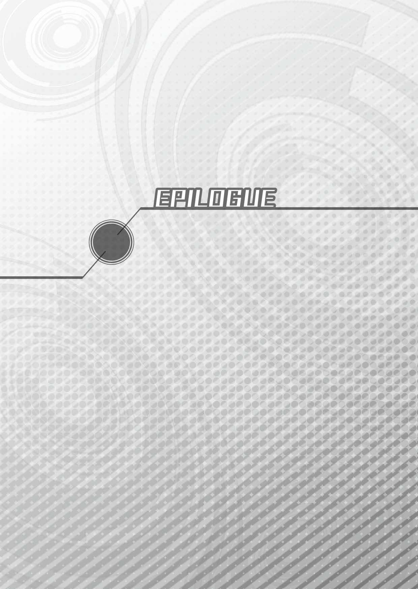
あ、みなさんこんにちはです。わたし、コンパです。
天界での戦い（最後は戦いっていう戦いじゃなかったらしいですけど）から何日か経って、わたしたちは地上に戻ってくることができたです。
そして今日、こうして一年間の学園生活の締めくくりとして終業式を迎えられたです。
急に物凄い暑かったり、凍えるほどに寒かったりっていう異常気象はもうすっかり収まって、ぽかぽかとあったかい春らしい日差しの中で終業式を迎えられたのは良かったです。
良かったと思うです......けど......。
正直、わたしは全然嬉しくないです。
本当なら他のクラスメートのみんなみたいに、成績表を見せ合ったりしたいです。でも、どうしてもそんな気になれないです。
わたし、一年間ちゃんとお勉強頑張ったですよ？ 実技はちょっと残念な成績でしたけど、他は結構良い成績をもらえたです。
でも、でもなんです......その成績表を見せた時、一番に褒めてくれるはずだった人は......ねぷねぷは今......ここにいないんです。
「元気出しなさいよコンパ。いつまでもメソメソしてると、ネプ子怒るわよきっと」
「そうよ。あの子やネプギアの分まで、胸を張って一年生を終えましょう」
あいちゃん......ノワールさん......。
ふたりとも、わたしのことを慰めてくれるけど、やっぱりお顔が寂しそうです。
あの日、ねぷねぷを挟んで、いーすんさんとクロワールさんが握手するのをみんなで見届けてから、飛行機で地上に帰ろうとした時だったです。
もうすぐ出発するですよーっていう時間になっても、ねぷねぷとギアちゃんは現れませんでした。
わたしは、みんなが飛行機に乗り込んだ後もお外でずっとふたりを待ってたです。
そうしたら、ようやくやってきたねぷねぷとギアちゃんは、こう言ったです。
「......ごめんね、こんぱ。わたしとネプギアは、やっぱり残らないとダメみたいなんだ」
「急にこんなことを言い出してすみません。でも、どうしようもないみたいで......」
ショックだったです。本当にショックだったです。
言われた瞬間、わたしはもう頭が真っ白になってしまって、その後のねぷねぷたちの言葉がまるで耳に入ってこなかったです。
「......そういうことだから、みんなによろしくね」
でも、ハッと気が付いた時には、ねぷねぷはいつもみたいにニッコリ笑ってたです。
それを見て、わたしは思ったです。
ねぷねぷには、まだ大切なお仕事があるですね。なのに、わたしが悲しまないように笑って見送ってくれるですね。
だからわたしも、泣いちゃダメだと思ったです。
わたし、我慢したですよ。今まで生きてきて、こんなに我慢したことはないっていうぐらい、いっぱいいっぱい我慢したです。
我慢して我慢して、必死に笑ってうなずいたです。
でも、最後にわたしひとりで飛行機に乗り込んで......みんなにねぷねぷたちとお別れしなきゃいけないことを伝えたら、そこで限界がきちゃったです。
わたしの話を聞いたユニちゃんが、真っ先に飛行機を飛び出そうとしたです。
それを、ノワールさんがすぐに止めたです。
「友だちだと思うなら、ふたりの気持ちをわかってあげましょう」
その後すぐに、
「......発進！」
あいちゃんが、なんの前触れもなく飛行機を発進させたです。みんな驚いたですけど、操縦席で小さく肩を震わせているあいちゃんの後ろ姿を見て、誰も何も言えなくなって、そのまま地上に帰ってきたです。
......はう、こうして思い出すだけでも辛いです。苦しいですぅ。
「わた......わたし......ねぷねぷと一緒に......二年生に......ふええええん！」
わたしたちは今日これから、世界を救った功績を称えて文化祭を守った時と同じように賞状をもらえることになってるです。
地上のほとんどの人たちは今度の事件の真相を知らないままですから、表向きは一年間特に頑張った学生に与えられる「学長賞」っていうことになってるです。
......けど、そんな細かいことはどうだっていいんです！
わたし、賞状なんかいらないです。誰にどう褒めてもらっても喜べないです。
わたしはただ、ねぷねぷと......ねぷねぷともっと......。
講堂に移動して、先生方のお話を聞いてから、あいちゃんとノワールさんに体を支えてもらいながらわたしは檀に上がったです。
見ているみんなには、変な子だって思われちゃったですよね、きっと。いくら学長賞をもらえるからって、こんなに大泣きする子はいないです。
壇上には、ユニちゃんたちオオトリイ島の子たちも並んでたです。
ひとりずつ賞状をもらって、拍手もしてもらって......。
最後にわたしとユニちゃんが一緒にマジェコンヌ先生に呼ばれたです。マジェコンヌ先生は、わたしたちふたりにだけ二枚ずつ賞状を渡してくれたです。
それがもう余計に悲しくて、わたしはまたみんなが見ている前で泣き崩れてしまいそうになった時......。
「待ったーっ！ その表彰、ちょっと待ったーっ！」
「す、すみませーん！ 遅くなりました！ と、通してくださーい！」
講堂の一番後ろから、わたしが聞きたくて聞きたくてたまらなかった声が......。
「あっぶなー。間に合ったー」
「全然間に合ってないよ、お姉ちゃん！ 完全に遅刻だよ！」
「いや！ このタイミングはまだギリギリセーフだよ！ うん、そういうことにしとこう！ ......ま、それはいいとして......えーと、今どうなってんの？ 誰の仕切りで進行してるわけ？」
一直線に壇上に駆け上がってきたねぷねぷが......ねぷねぷが......わたしを見たから......見たから......。
「わ、わだじでずう！ ねぷねぷの代わりに、ぢゃんとお話進めたですよぉ！」
手を上げて、言ったです。
「あ、こんぱやってくれてたんだ。ありがとねー！ でも、てっきりノワールあたりが仕切ってるかと思ったけど......はい、タッチ交代！」
手を出してきたこんぱにぽーんとハイタッチして進行役を返してもらったのはいいんだけどさ、ど、どーしちゃったのよこんぱは!?
タッチの前からもうベショベショのグショグショじゃないの。
あ！ もしかして賞状をもらう前に誰かに意地悪なこと言われたとか!?
あれか！
「本当は私がもらえるはずなのに、なんであんなトロそうな子が！ キーッ！ く・や・し・い・ーっ！」
的な？
看護科に、プライドばっかり高いいじめっ子系のキャラがいて、その子が嫌がらせしたんだな！ わたし、そういう陰険なのは絶対に許さないよ！
「こらーっ！ どこの誰なの、こんぱを泣かしたのは！」
ハイタッチの手を怒りの拳に変えて、わたしが講堂に集まっている大勢の生徒たちを振り返った途端に、
『アンタだよっ！』
壇上にいたわたしとネプギア、それに泣いてるこんぱ以外の全員から一部の隙もなく完璧に揃ったツッコミが飛んできた。
こっちを見てる大勢もポカーンだけど、わたしが一番ポカーンだよ。
「わたしが何したって言うのさ！ ちょっと遅刻しちゃっただけでしょー......んがっ！」
「すみませんすみません、皆さんすみません！ 昨日の晩、私ちゃんと目覚まし時計かけてから寝たんですけど......クロワールさんにイタズラされて止められちゃって！ 私はギリギリ目が覚めたんですけど、お姉ちゃんてば全然起きてくれなくて。私が一緒にいたのにこんなことに......すみませんー！」
猛抗議モードに入りかけたわたしの頭を、ネプギアが上から思いっきり押さえつけて、無理やりに下げさせた。
「ほら、お姉ちゃんもちゃんと謝って！」
「ご、ごめんなさい？」
どうにも釈然としないものを感じつつも、わたしも一応謝ると、
「ア、アンタたち......なんでここに......」
泣き崩れるこんぱの肩を支えたあいちゃんが、世紀の珍獣ゲハーゴンを見るような目でわたしたちを見た。
「なんでって......教室行ったら誰もいないから、職員室で聞いたらここでわたしたちの表彰式やってるって......そりゃ来るでしょ！ 賞状欲しいよ！」
言ってから気付く。
あれ？ なんかおかしくないこの流れ。
「わたしたちのこと、こんぱから聞いてるよね？」
「聞いてるわよ！ だから驚いてるんでしょ！」
今度はノワールが金切り声を出してわたしの前に立った。
「ねぷねぷとネプギアちゃんは、天界に残られるとうかがっていましたけれど......」
と、次はベール。
「どういうことなの？」
怒ってるような泣いてるような、不思議な顔でブランが言う。
「どうって......だからぁ」
わたしは数日前にこんぱに話した内容をもう一回繰り返した。
クロワールのことを消してしまわない形できれいに収まるようにするには、やっぱり一回システムを再調整しなくちゃいけなくなって、そこで私の剣も必要になったのね。
で、ちょっと時間かかりそうだからわたしは残るねーって言ったら、ネプギアも付き合ってくれることになったと。
「ちゃんと、わたしたち残ることになったって言ったよね、こんぱ？」
「......聞いたでずう......」
うん、ここまでは良し。ここまではって言っても、他も別にそんな変な伝え方はしてないはずなんだけど。
数日かかっちゃうかもしれないけど、終わったら速攻で帰るよーって。でも、みんな疲れてるだろうから、先に帰っててねーって伝えて......。
「......そういうことだから、みんなによろしくねって」
心配いらないよーってつもりで笑ったら、こんぱもにこーってして。
全然オッケーじゃない。何も問題なくない？
「......」
なのに、なんなのこんぱ。その「わたしやっちゃったですー！」みたいな沈黙は？
「お、お姉ちゃん。まさか、まさかとは思うけどコンパさん......そこだけ聞き逃しちゃったりなんかしてたり......」
「まさかあ！ いくらなんでもそんなことは......」
え？ どうしたのこんぱ？ 否定しないの？
ってことは......。
「私もお姉ちゃんも、もう二度と地上には帰ってこないって、皆さん勘違いされちゃってたり......」
「言われてみれば......ちょっとこんぱ、あの時上の空だったような......」
次の瞬間、
「ご、ご、ごめんなさいです～～～っ!! 」
両手で顔を覆ったこんぱが、いわゆる脱兎の如くっていう勢いでその場を逃げだし、瞬く間に講堂の外に消えていった。
は、速い！ こんぱってあんなに速く走れたんだね......って違う！ 賞状！ さっきこんぱ、わたしの分の賞状ももらってなかった!?
なんだかもうカオスもカオス。どーなってんのよこれはっていう状況に、イマイチ立ち位置をつかめないでいると、そんなわたしを尻目に、
「アホくさ。はい、みんなもう行きましょ」
これまで聞いた中でも一番ってぐらい盛大なため息をついたノワールが、わたしとネプギアを放置してさっさと壇を降りていく。
「ねぷねぷは、どこまでもねぷねぷっていうことですわねぇ。わたくしも、どっと疲れましたわ。帰って一眠りいたします」
あれ？ あくびなんかして、昨日は徹夜ゲーだったんですかベールさん。ねー、ちょっと答えてよ！
「わたし、この先もう二度とネプテューヌの心配はしないから」
えー、どうしてそうなるのよブラン？ 冷たくない？ 友達でしょ？
「あ、あいちゃんはわかってくれるよねぇ？ 不可抗力だもんねぇ？」
「......冥界行きね。決定」
な、何よそれは？ どーいう意味なの!?
あ、ちょっと！ みんな！ ウソでしょ。本当にわたしのこと置いて行っちゃったよ。
ど、どーするネプギア？
困り果ててネプギアの方を見てみると、
「ほんとにもう......人騒がせなんだから！ はいこれ、アンタの分の賞状。このまま、分校の職員室で埃かぶっちゃうところだったんだからね！」
「あ、ありがとうユニちゃん！ あのね、前にお姉ちゃんも賞状をもらったことあるって聞いてて、私ももらってみたいなって思ってたの！ 嬉しい！」
「...ネプギアちゃん、良かったね（にこっ）」
「これでみんなお揃いね！ 後でミナちゃんとブレイブ先生にも見せてあげましょ！」
あ、あれー？
なーんでそっちは、そんなにもあったかーい優しーい空気が流れてんのかなー。
おかしくない？ あんまりにも扱い違わない？
あのさー、一応ね、わたしにも構想ってヤツがあったんだよね。構想。
ほら、最初にマジェコンヌ先生を助けた時にも賞状もらって、「イストワール記念学園サイコー！」で締めたでしょ。
それと同じにしたかったんだよ。ねえ、聞いてる？
最初も賞状。最後も賞状。美しくない？ これで一年間を美しく締められると思ったんだよね。どうですか？ マジェコンヌ先生？
「あー。以上をもってイストワール記念学園三学期終業式を終える。一同教室に戻ったあとは、速やかに下校するように。解散！」
ちょっと！ ちょっと待ってくださいよ！
「賞状！ わたしにも賞状ちょうだーい!! 」
とぅ～るるる ♪ ちゃんちゃん ♪
いいよ、そのオチは！ もうやったよ！ 二回はくどいから！
超次元ゲイム ネプテューヌ はいすくーる おしまい？
あとがき
「えーと、今日はビールかお茶か......」
「今日ぐらいは、ビールにしちゃおっかな！ いいっすか!? 」
「お、珍しいですね。まぁいいですけど。はい、ビール注文いただきましたー！」
（い、居酒屋かここは......）
「はいどうぞ。まぁぐいっとひとつ」
「あざーっす！ いただきまーす！」
ああ、うまい。やり遂げたあとのビールはうまいなぁ。（ごくごく）
最初にこの編集部に呼ばれた時は、いったい何事だろうと思ったけど......あれからあっという間だったなぁ。（ぐびぐび）
資料で借りたゲーム版、ずっとやってたなぁ。
「仕事だから！ これ遊んでるんじゃないから！ 仕事だから！」
懐かしいなぁ。（ぐいぐい）
「もう一杯行きます？」
「あざーっす！ あざーっす！」
最初は、一冊だけって話だったんだよな。だから、もう文化祭も体育祭も温泉回も全部盛りで行ってやろうって......。
シリーズ化するってなった時、嬉しかったよ。嬉しかったけど、編集長に泣きついたね。
「どうするんすか？ もう学園イベント無いですよ？」
「頑張ってください」
......シビアな世界に来たんだ、そう思ったっけ。（ぐびぐび）
でも、楽しかったよな。間違いなく。そりゃー、しんどくもあったけど。
毎回、つなこ先生の表紙絵が待ち遠しくてさ。ほんともう可愛くて可愛くて......。つなこ先生、毎回素敵な表紙を本当にありがとうございました！
うりも先生が「見開きにしちゃったよ」って気合い入れて挿絵描いてくれてさ。幸せな瞬間だよね。うりも先生も、本当にありがとうございました！（ごきゅごきゅ）
アイディアファクトリーの皆さんには、たくさん迷惑かけちゃったな。反省しなきゃ。
でも、毎回すごく丁寧に監修してくれて、ありがたかったな。そこで初めて気が付くこととかもあって。......ちゃんとチームで見てくれること、あまりないよな。幸運だよ。
アイディアファクトリー株式会社の皆さん、本当にありがとうございました！
終わっちゃうのか......寂しいな。（こくん）
でも、そういう約束だったからな。四巻で終わりのところ、「ネプギアちゃんたちにスポット当てさせてください！」って、一巻増やしてもらっただけでも感謝しなきゃ。
「もういいですか？」
「サーセン！ もう一杯だけ！」
最後に感謝するのは......もうこれは読者の皆様だな！
一巻のアンケートハガキがぶわーっと来て、それで続行決まったんだよな。感謝！
妹たちも出してくださいって要望がどばばばーって来て、じゃあ妹たちも出しましょうかってなったんだっけ。感謝感謝！
ここまでネプテューヌはいすくーるを支えてくださった読者の皆様、本当にありがとうございました。皆様のおかげで最後まで完走することができました。心から、本当に心から御礼申し上げます！
「ぷはーっ。ごちそうさまでした。おいしかったです！」
「そりゃ良かった」
「あの！ 最後になっちゃいますけど、僕なんかにこんな大きなタイトル任せてくれて、自由に書かせてくれて......ありがとうございました。僕......この編集部、好きです！」
「......ありがとうございます。そして、お疲れ様でした」
「お疲れ様でした！ また何かありましたら、よろしくお願いします！」
「それじゃ早速なんですけど、六巻からの展開どうしましょう？ あ、良かったですね、また文化祭も体育祭も使えますよ！ 二年生になるから修学旅行も！」
「......はい？」
「はいじゃないが」
平成二十五年 師走 おかず
超次元ゲイム ネプテューヌ はいすくーる５
電子版発行 ２０１４年２月５日
著 者 おかず
発行者 辻 信幸
発行所 株式会社一二三書房
〒１０２－ ００７２
東京都千代田区飯田橋２－ 14 － ２ 雄邦ビル
電話 ０３－ ３２６５－ １８８１
カバーイラスト つなこ
本文イラスト うりも
デザイン Okubo
©HIFUMI SHOBO
©IDEA FACTORY / COMPILE HEART
本書の無断複製（コピー）は、著作権上の例外を除き、禁じられています。
● 本書は『超次元ゲイム ネプテューヌ はいすくーる５』（２０１４年１月20 日 初版第１刷）に基づいて制作されました。